The Counterstroke
The Counterstroke is by Kenneth Macksey, Major (Retd), MC, and was published by the Department of National Defence as B-GL-309-007/FT-001, issued on the authority of the Chief of Defence Staff. The full credits are on the home page.
This edition is re-typeset from the scanned copy of the original that the Canadian Army published on canada.ca in 2025. The text has been corrected for OCR errors only, and the wording, spelling and punctuation follow the printed original.
This is not an official version of the original publication. The small raised numbers in the text mark where each page of the printed original begins, so that passages can be cited by the original page. The photographs, maps and diagrams are cropped from the scan and cleaned up; the tables, orders and lessons learned are set as text.
The words in grey square brackets are additions for this edition. The first time an abbreviation appears in each chapter, its meaning is given after it, and the full list is in the Abbreviations section at the end.
Foreword
The COUNTERSTROKE, B-GL-309-007/FT-001, is issued on the authority of the Chief of Defence Staff. This is the second book in the series, the first being First Clash, published in 1984. Another book in this series is in the preparation stages. The interferences drawn and the opinions expressed are solely those of the Author and any similarity to persons living or dead is purely coincidental. Comments by readers may be forwarded through normal channels to FMC [Force Mobile Command] Headquarters, Attention: SO2 [staff officer grade 2] Doctrine Coordination.
Preface
This book is a successor, but not the sequel, to First Clash (B-GL-309-007/FT-001), which was issued in January 1984. Like First Clash it is intended as a training aid, the purpose of which is to create a mental image of battle groups and combat teams in offensive operations. It is meant to assist officers and men who have not had the experience of operating within an all-arms team.
The setting is Vineland in 1990; the contenders a Fantasian Motor Rifle Division, which is over-stretched after a contested advance, and 7 CMBG [Canadian Mechanized Brigade Group] as spearhead to a counterstroke. As in First Clash, the activities of higher formations and units, including administrative units, are described, except that in this book the focus is on battle groups. The interaction of key individuals and tactical groups (friend and foe) remains central to the plot, which is based on fact but the characters and incidents are all ficticious.
The principal difference between this book and First Clash concerns organization and equipment. Whereas First Clash described organizations and equipments that were expected to be in service at the date of publication, this book is based upon the conceptual Corps’ 86 ideas and its associated doctrine. Therefore the reader should be aware that many of the organizations and equipments described do not exist and may never exist. To some extent they represent an ideal, but an ideal which is realisable and a very proper goal for study of future warfare. Consequently, it was not possible to illustrate the book with appropriate photographs since several items of equipment do not exist and the majority are not yet in service. Some imagination is necessary to relate the photographs of present day equipment to what might be. The main thing is that the high quality of the fighting men remains unchanged.
The author of First Clash, Major (Retd) Kenneth Macksey MC [Military Cross], has also written this story and brought to it his experience as a former officer in the Royal Tank Regiment, who saw action in Western Europe. He is also a well-known military writer.
The aim of this interactive scenario is not only to stimulate interest by the realistic portrayal of events in battle, but also to heighten the perception of the many factors affecting the all-arms team in the flux of operations. The book portrays what could happen in only one situation and should not be quoted as an authoritative source for any detail of technique or procedure. Likewise, those incidents that may seem to diverge from our current doctrine should be interpreted only as the possible outcome of battlefield pressures not normally found in the class and syndicate room.
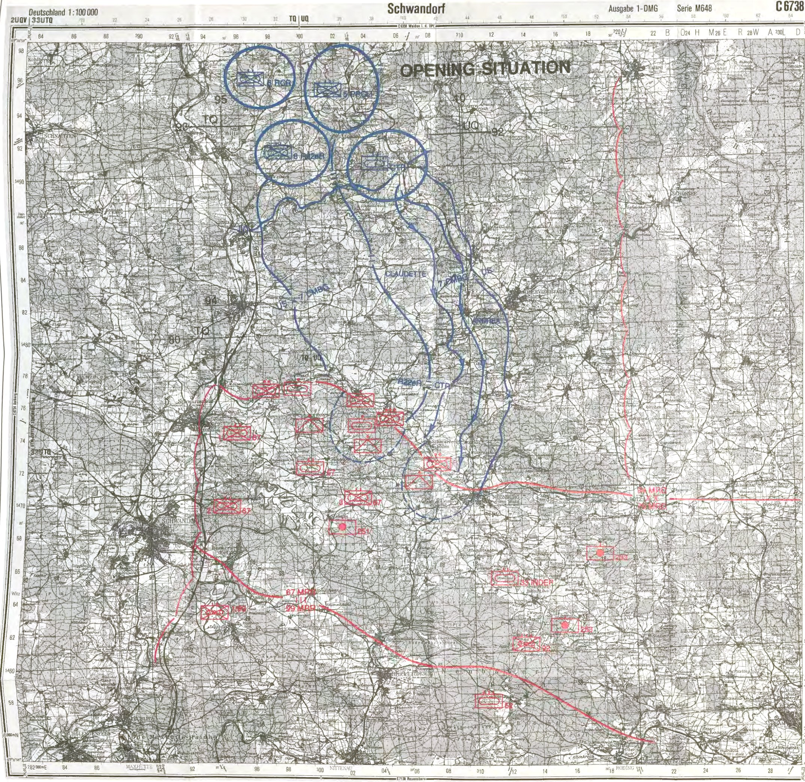
1 Girding Up for Attack
At last, after a week engrossed in combat, LCol [Lieutenant-Colonel] Brian Cowdray was enjoying a moment’s calm reflection in the privacy of a hotel room which served as an office. Well, almost calm if he could exclude from his hearing the throb of nearby generators, distant thump of guns and the noise of air power’s struggle overhead, which reminded him that even though his own regiment, The Canadian Tank Regiment (CTR), was resting, the battle still raged undiminished in vigour. It seemed scarcely possible that only one week had elapsed since the Fantasians had taken the plunge and struck westwards, or a mere seventy-two hours since his regiment had taken part in the fierce blocking operation on the BÜHL plateau, as a prelude to 7 CMBG’s [Canadian Mechanized Brigade Group] withdrawal under pressure. Miraculous too, in a way, that the CTR was still at about seventy percent of full establishment and making the best they could of a period of rest and refurbishment. On reflection it seemed to Cowdray that the CTR had, like the rest of 7 CMBG, performed with credit in the most exacting circumstances. They had met and checked at full flood a Fantasian tank division and inflicted upon it losses which the intelligence people said must have been at something in the order of three or four to one. And they had pulled back in reasonably good order without, so far as he could judge, the officers and men coming to believe that the enemy was nine feet tall. The fight at BÜHL had been a triumph of will and morale which, he was proud to remember, 7 CMBG had accomplished with the assistance — vital as he admitted it to be — of only a single battalion of US Army 203 mm guns and a handful of their ally’s Cobra helicopters.
The Brigade Commander had called in to see the CTR for himself; to give praise and thank several of the officers and men in person. Then to take Cowdray aside to forecast the future. BGen [Brigadier-General] Charles Knutson delayed visiting the CRT to last among his major units, because he had reason to believe that it was they, his only tank regiment, which would play the leading role in the next act of the drama unfolding close by to the east and south of the assembly area in which they now lay concealed. It was more than the ingrained insight of a military education that warned him of renewed action at an early moment. The Commander of 51st US Armored Division, under whom 7 CMBG was now placed, had told him in person, less than twelve hours ago, that a dramatic change was on the way.
“OK, Charles,” he had said, “We could get stuck with another blocking operation. Who knows, even another sort of readjustment of the front is not impossible, if somebody gives way on one or other of my flanks. But let’s forget that; so far as I’m concerned we’re holding! We’re holding damn well and I don’t reckon to budge one inch unless those sons of bitches pull something real mean and fast. But my bones — and G2 [intelligence staff] — tell me they’re in no shape to do that. Not around here after the hammer we’ve handed out this past week. No Charles! Its our turn now, I reckon,” he had said with conviction. “Next time we are going in to win and your boys, you tell me, are in great shape and will be right there. All I’m waiting for is the Corps Commander to give me the word. He’s just itching to do so — but only when the moment’s right — when the Fantasians have made just one more slip. Then we’ll roll.”
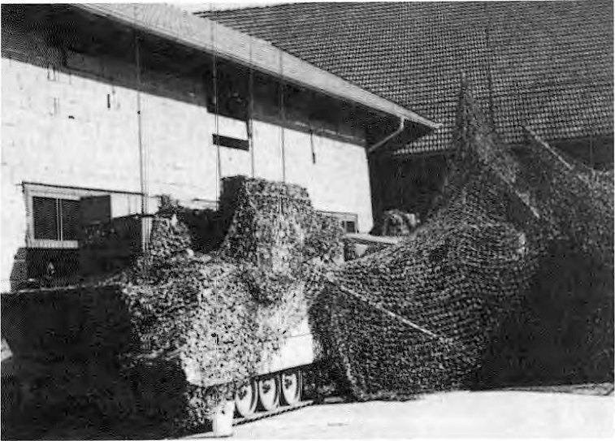
Good old fashioned leadership stuff, Knutson had thought, but this certainly was the moment, when the outcome of the battle seemed delicately poised, for a little flamboyant exhortation. History reminded him of how, more than once in the past, some uninhibited examples of individualistic inspiration had stimulated the human factor at critical moments in war. Closer to the present, Knutson had learnt from the Divisional Commander that, although 7 CMBG might indeed have to stand fast to hold vital ground again, the prospects of catching the enemy off balance and throwing him back had improved. The Fantasians, it appeared from the latest intelligence summaries (INTSUM), were sticking their necks out in two or three sectors at the same time, as they were being stopped elsewhere and beginning to suffer from logistic overstretch. History also made Knutson wonder about possible intelligence over-optimism and that today’s estimates were not necessarily tomorrow’s reality. Nevertheless it was with a resolute belief in the greater likelihood of offensive operations in a southerly direction, that Knutson had ordered 7 CMBG into its present locations, with the CTR and 8 R22eR [Royal 22e Régiment] located from whence they could most easily move in the most probable direction; with 5 PPCLI [Princess Patricia’s Canadian Light Infantry] adjacent to CTR as infantry support if required; leaving 6 RCR [The Royal Canadian Regiment], still seriously weakened after its battering on the BÜHL plateau, in reserve with the maximum time for recuperation.
Recuperation, as well as the planning of forthcoming operations, had been prominent in Knutson’s mind during a conference with his G3 [operations staff], Major Maurice Chenier, and G4 [logistics staff], Major Pat Braddock. They had analysed administrative states in relation to future operational possibilities in a routine application of foresight to every likely eventuality. They had also discussed training and what needed to be done to rectify faults exposed by the harsh abrasion of action, and balanced what was desirable in that respect against the needs to let the men rest and the prospects of the Russians denying them time for the slightest repose.
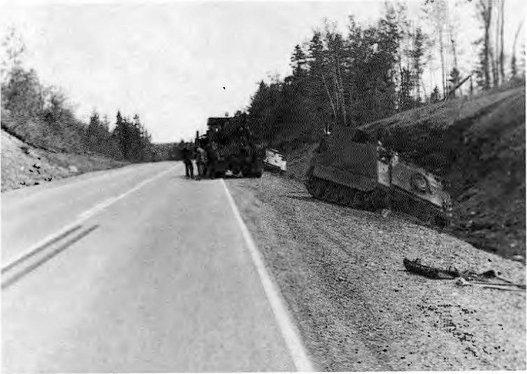
Seated in the command armoured personnel carrier at WOPPENHOF (989939), Knutson studied his formation’s current state, trying to estimate its fitness for combat and the rate of its recovery towards full strength. From Braddock, the G4, he learnt that reinforcements were arriving at something like the pre-war planned rate and were reaching units via the National Support Group (NSG). The quality sounded good, morale satisfactory. He heard, too, of the trickle back to units of recovered sick or patched-up, lightly wounded from the Light Field Hospital (Lt Fd Hosp) in the brigade administrative area (BAA). G4 estimated that unit strengths would rapidly recover to something like eighty to eighty-five percent, with the exception of 6 RCR which would be lucky to reach sixty-five percent and which had temporarily reduced one of its four companies to cadre strength. At this point they had talked about the effects of combat stress as revealed by returns and a few shrewd comments that LCol Frank Mackenzie, CO [commanding officer] 7 Fd Amb, had made, as was his prerogative, to Knutson.
“There have been a number of casualties with upper respiratory tract infections, and such minor ailments as abdominal pains and boils, sir,” Mackenzie had reported. “Trivial cases who have arrived in batches, occasionally escorted by men — some of them senior ranks — who are otherwise fit. I am telling unit medical officers to crack down on the dubious ones. One or two of them seem to have forgotten we are at war and not just on another exercise. But it does seem we are witnessing the same effect the British once noted even on exercises, an increase in stress ailments under conditions of utter confusion, such as we experienced at times the past few days. I may say that the vast majority who did find their way back are now on their way up to the line again — thanks to the Lt Fd Hosp as a holding unit and filter — and that the trend has declined now that things have quietened down.”
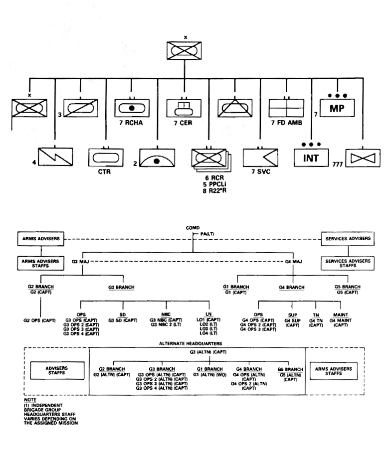
“We must keep an eye on that sort of thing,” Knutson had said, “and tell G1 [personnel staff] to watch out as well for any disciplinary incidents, and remind the military police too.”
Less nebulous had been the replacement of destroyed and damaged equipment, either from stocks in the NSG; or, in the case of tanks, from the forward mobile supply units; or as the result of repairs carried out in the field by the Forward Repair Group (FRG) of 7 Svc Bn. To his entire satisfaction, Braddock could report that in response to immediate operational requirements (IOR) from units, the organisation he and the G4 cell’s staff controlled was working quite smoothly, despite impediments caused by sporadic enemy air attacks (even as he spoke there was an outbreak of fighting overhead which all three officers, out of professional pride, studiously ignored) and the enforcement of movement only in darkness, except for the most urgent deliveries. Moreover, stocks of ammunition, rations, general stores, spares and petrol, oil and lubricants had been maintained at the laid down levels of seventy-two hours consumption with units and twenty-four hours at second line.
Projecting his thoughts ahead and in conformity with what Knutson had just told them about the possibility of defensive operations; but the greater likelihood of going over to the attack, Braddock sought confirmation that the present location of the BAA, about fifty kilometres to the rear, met the Commander’s wishes. “As you can see, sir, its by the book,” he said with a grin, knowing that Knutson professed a great belief in playing things by the book until circumstances ruled otherwise. “7 Svc Bn, 7 Fd Amb, the Lt Fd Hosp and the unit B echelons are complete there since I withdrew the Forward Logistic Group (FLG) when we moved into the assembly area. I hope you approve my retaining B echelon while letting the A2 echelons come forward, but the less traffic there is trundling up and down the better, and the A2 echelons can provide all the units needs for the moment.”
Knutson did approve and added that if they did go over to the offensive, he would expect the A2 echelons to remain in the present assembly area, but that he saw no reason at this stage to let the B echelons come forward until much later, even though Brigade Standing Operating Procedure (SOP) implied that this might be permissible.
“Is that all from you, Pat?” Knutson asked his G4. “Because if so I would like now to run through with both you and Maurice a few training points that are bothering me and which I guess will have quite some bearing on how we operate, if and when we do go over to the offensive.”
Most of what Knutson had to say concerned minor details, such as a need to tighten up procedures associated with the use and integration of artillery fire: that Arm “which still has it within its power to win and lose battles,” as he put it. Plus the age-old need to improve markmanship, particularly among the infantry and above all with the large numbers of reinforcements arriving, whose prowess was reputedly sound but had yet to be proven. And the vital importance of concealment, which, said the Commander, had been patchy and had led to fatal disclosures of positions and deployment to the enemy. Most of these points, Knutson assured Chenier, he would mention to commanding officers when he visited them in turn over the next few hours. He saw no harm in G3 sending out a brief list of points for attention, including any others deemed desirable by the staff from their observations over the past seven days.
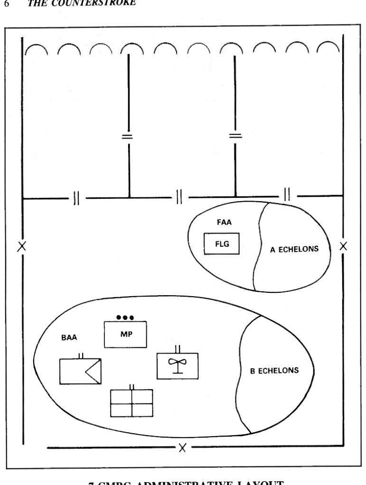
“And that includes your side, too, Pat. Anything you’ve got to say about administration and logistics. Like, for starters, the foul up of ammunition supply to the gun positions which, I seem to recall, got a little tight on occasions, eh? But keep it short and sweet. Nobody’s going to read a two volume manual right now. Just make it stick that training never ceases. I’ve said it before!”
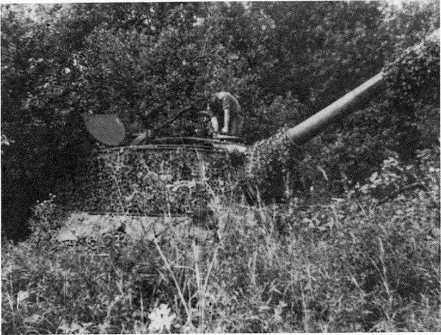
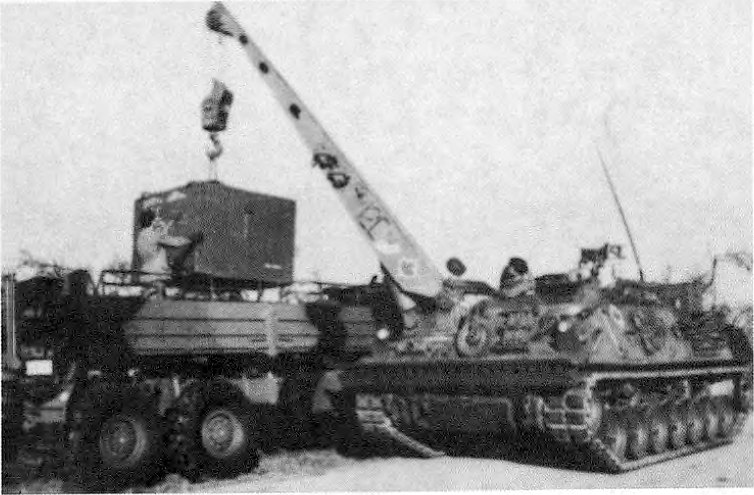
The subject that chiefly occupied the Commander’s mind was how to advance his armour without suffering the sort of virtual annihilation that had been inflicted upon several advancing battalions of Fantasian tanks on the BÜHL plateau. Fresh in his memory was the sight of T80s and BMPs [Soviet-designed infantry fighting vehicles] immobilised or in flames by the dozen, caught by day and night in the deadly fire of infantry short range anti-tank weapons (SRAAW), the long range TOW [tube-launched, optically tracked, wire-guided missile] and above all, the devastating shooting of the CTR’s Lions’ 120 mm guns when unleased at ranges of between two hundred and three thousand metres. He could anticipate a similar holocaust overwhelming his own armour as it advanced — and he had but a single slightly understrength regiment of tanks to play with, along with the Brigade Anti-armour Squadron of Chimera tank destroyers (TD). He also recalled talking to a squadron commander who had been sickened by the sight of an inexperienced tank commander advancing, unsupported, in solitary splendour to his doom against a T80 with its 125 mm gun, and seeing the Lion gutted by a single shot at four hundred metres range. In his mind’s eye, too, was a lesson taught by B Squadron’s commander when, in defence of a forward slope, several tanks had been compelled to advance beyond the normal prudent turret-down position to engage the enemy armour advancing towards them up the slope. He also recalled that same squadron commander’s unwitting error in using white light to illuminate targets at night and thereby, also to his cost, illuminating his own tanks and exposing them to quite unnecessary counter-fire in the ensuing shoot out.
“We’ve got to get it through to the CTR and the TDs too, if they’ve not hooked on already — and the infantry in their carriers too, of course — that there’s no future in moving or hanging around in the open without fire support. Yes, I know you agree,” he remarked to Pat Braddock, who wore the badge of the 1st CH, and had himself commented, but a few months ago on exercise, upon how some tank commanders had failed to make fullest use of cover. “Yet still they do it! Drum it home, Maurice! Just point out to them what they did to the Fantasians. And remind them, also, to say it twice over to the new guys. You can take it for granted that the old bunch will be a little more careful than a week ago — perhaps a little too cautious for my liking — when they’re got to get up and go. But the green ones’ll still have to learn.”
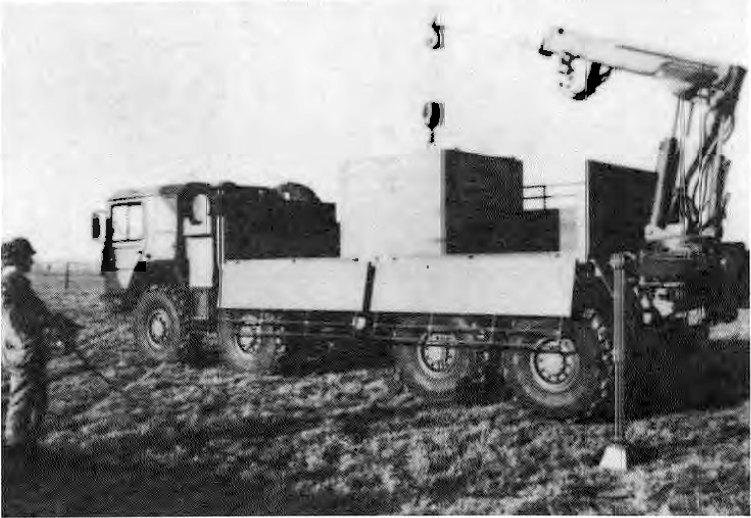
They had parted at that, Knutson to begin touring the Brigade by helicopter; Chenier to instruct his staff captains on the brief training notes to be rapidly written and distributed (work on them having already, with foresight, been started); Braddock to confer with LCol Alec McGill, the CO of 7 Svc Bn. The latter had left the BAA to his second-in-command in order to come forward to headquarters, ready for the vital discussion that must take place between himself and the G4 in preparation for a possible impending change of operational posture. Upon McGill would rest a lion’s share of responsibility for maintaining the brigade at full stretch in the field. Already he was beginning to worry that perhaps the moment of over-stretch was close at hand. When studying the reports of logistic difficulties beginning to accrue in rear as the result of enemy air and guerrilla attacks upon depots and lines of communication, he had felt bound to harbour doubts, to ponder the kinds of improvisation he might be called upon to make in order to keep the wheels turning, and to hope the enemy was suffering compensating difficulties. No matter what the operations staff wanted, administration and logistics would dictate in the final analysis. And that reminded him of the need to talk to Captain Bert Lawrence, the G1, on the subject of the carefully controlled flow of reinforcements. To ensure they were held back in the BAA until future operations were disclosed and they could be guaranteed joining their units during a period of rest; also to discuss a couple of impending courts-martial arising out of serious misdemeanours in the face of the enemy during the earlier engagements. In war, as in peace, law and order were closely related to the discipline and morale of combat and administrative units.
2 Outline Planning
What Knutson gleaned in fleeting visits by a Kiowa from 777 Tac Hel Sqn to each of his three mechanized infantry units, to a battery of 7 RCHA [Royal Canadian Horse Artillery], a TD [tank destroyer] troop from the Anti-armour Squadron (whose Chimera’s with their 120 mm guns had performed so well at BÜHL) and a troop of 7 CER [Combat Engineer Regiment] (which he had dropped in on at work on a road bridge recently weakened by air attack), was reassurance concerning 7 CMBG’s [Canadian Mechanized Brigade Group] fighting spirit and confidence. Chatting to officers and men, he found a few who were subdued and exhibiting signs of anxiety; to these he had made firm but heartening remarks. Others were only too anxious to give vent to their feelings. Such as an infantryman who admitted to being terrified by the intense enemy shelling and yet relieved it proved not quite as crushing as had been expected; “Survivors from a concentration,” he said, “had always out numbered the dead and wounded.” Or gunners who relished the punishment they had been handing out and congratulating themselves upon escaping, in dug-in positions, the worst effects of enemy counter-bombardment. Knutson recognised the contradictions, sensed they all had taken more of a pounding on the BÜHL plateau than most cared to admit, and realised they had not yet recovered from the experience. In other words, they could do with a rest. Another 48 hours would work wonders. But should they not spend more of that retraining? The way things were developing all around them, they were unlikely to be granted it.
It gave Knutson satisfaction, nevertheless, to see vehicles being worked on and discover how those among the replacements he had met, seemed to have been welcomed quickly into each unit’s family circle: where they were being regaled with yarns about “bloody great T80s looming out of the smoke” and Fantasians shouting and screaming all over the place, falling like flies to bursts from our 5.56 mm C7 automatic rifles, C8 automatic carbines and C9 light machine-guns.” He nodded in approval, too, at the outward signs of sound discipline: the attempts being made by all except a handful of chronically untidy soldiers to smarten themselves up after being given a bath and a change of underclothes. And the manner in which he usually was recognised and saluted by the old hands, all of whom within the past few days had known fear and seen the effect of it on others and who in survival, had learnt valuable lessons.
Most vehicles were hidden among the woods and steep-sided valleys which were features of the assembly area. Units whose officers in peacetime had favoured villages continued to do so. They argued that among buildings there was less likelihood of being detected by the most sophisticated enemy surveillance and sensing devices; that the chances of being caught in narrow streets were no worse than being trapped in forest lanes and that creature comforts ought to be considered. Any fool, the old hands claimed, could be uncomfortable. And discomfort, the thoughtful remarked, bred inefficiency.
So argued the CTR [The Canadian Tank Regiment], whose A Squadron was located at WEINRIETH (0291) in close proximity to the 8 R22eR [Royal 22e Régiment], its normally affiliated infantry battalion, while the remainder of the regiment occupied an assembly area based on GROSSENSCHWAD (0591) and TANNESBERG (0690). They hid among snug defensive positions some 20 kilometres from the nearest enemy to the east. Knutson failed to pick out a single Lion tank from his Kiowa as it hugged the terrain in the approach to RHQ [regimental headquarters] at TANNESBERG, (0690) where Cowdray awaited him. And it was a relieved pilot who put his helicopter down in safety without being fired at by anybody on the way. Based on the experience of the past week, it had been a toss-up who got him first a Fantasian fighter or helicopter or, somebody from his own side. Far too frequently, friendly troops, who took no chances, had shot first and not even bothered to apologize after they missed.
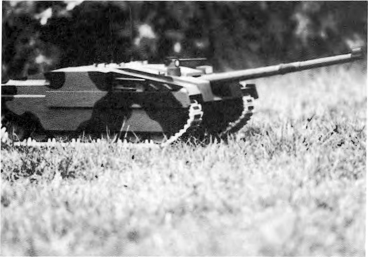
It was only of passing interest to Knutson that Cowdray’s principal pre-occupation seemed to be concerned with the electronics and calibration of the sights, lasers and guns of replacement Lions. The Brigade Commander knew full well how vital it was that their 120 mm guns (and also those of the Chimeras in the Anti-tank Squadron) should be assured, if possible, of scoring a first round hit, and that silent zeroing was not foolproof. But when the subject was raised, he felt bound to veto setting up targets at 1000 metres range to confirm zeroing. It was perfectly all right to splash laser beams about but it required but little imagination to guess the outcome of a sudden outbreak of tank gunfire in an allegedly secure rear area. Not only might all kinds of rumours, scares and panic be set off among friendly forces and the civil population, but there was always the danger of somebody on their side getting killed, and that would harm the Alliance. So silent zeroing was the order of the day.
Over a coffee served by an attentive staff, the main topic of discussion was future operations with emphasis upon the Corp’s counterstroke — which hourly appeared more feasible and likely. In company with the CTR’s Operations Officer, Capt John Goodman, and the Intelligence Officer, Lt Jim Fuller, Knutson and Cowdray studied the latest enemy positions etched in red symbols on the map in the command post. Fuller had up-dated it a mere thirty minutes ago, based on the latest INTSUM [intelligence summary] telephoned down by G2 [intelligence staff] at HQ [headquarters] 7 CMBG. It showed even more clearly how off-balance the enemy’s posture was. On the face of it, more inviting than ever to a classic counter-blow. As Fuller pointed out: “At 1200 hours today, 10 August, 94th Motor Rifle Division’s attempt to advance against TANNESBERG (0690) had been held up by the Americans 20 kilometres to the eastward.”
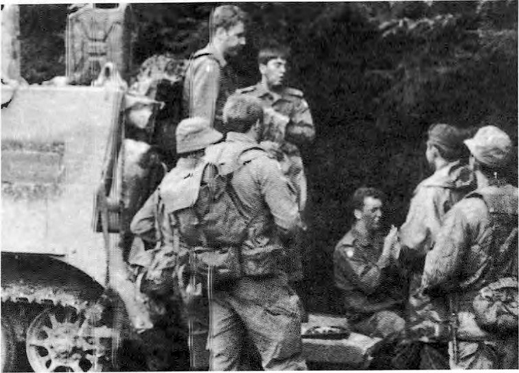
“But the drive past NEUNBERG (1069), south of the SCHWARZACH stream — which is a tank obstacle, sir — continues on a frontage of about twenty-five kilometres… That’s 79th MRD [motor rifle division], as I think you know, sir. They’re pushing towards SCHWANDORF (9067) and SCHWARZENFELD (9274) and should be up to the NAAB river by tonight.”
Knutson nodded; that was what the Americans wanted, to let the Fantasians become canalised among the extensive complex of lakes prior to reaching the broad NAAB.
Fuller continued: “G2 is sure that they have two MRD’s up but has lost track for the moment of the third MRD, which had a bad time yesterday, it seems. But the tank regiment with its T80s is still hanging back for some unknown reason and, in any case, appears to be following their left flank MRD away to the south. Finally, sir, there’s nothing about the T80s of the independent tank battalion. Its not with the tank regiment and the current thinking is that its close by NEUNBERG, perhaps in company with the third MRR [motor rifle regiment].”
“Looks good,” remarked Cowdray. “Like a gap opening up behind the leading MRRs, as if they’ve got their problems too. Give it an hour or so and there’ll be quite a gap somewhere around NEUNBERG. And a long neck sticking out ready for the chop!”
The Brigade Commander sat silently plunged in thought while Cowdray, whose ideas were racing ahead, also held his peace. Then Knutson spoke his mind aloud, weighing the future task from on high while thinking two levels down to company/combat team level:
“Subject to what 51st Armored have in mind for us and a lot more consideration in the meantime, Brian, I think I can foresee what we might be in for tomorrow in place of sleeping-in late.” In staccato sentences and with pointing finger, he outlined a southward advance by 7 CMBG, with two battle groups up, aimed at a crossing of the SCHWARZACH on a frontage of about eight kilometres with a view to seizing the high ground beyond. Thus establishing a very serious threat to the communications of the 79th MRD and its entire security, if the Americans joined in with the rest of 51st Armored Division.
“You can take it, that if I am asked to do something like that, the Vandoos, with your A Squadron, will move down the right flank. No point in thrusting armour into that thick wooded country beyond ZANGENSTEIN (0475). You’ll be here on the left and I’ll probably give you two companies of Patricias. I’ve already warned them. You’ll want at least that amount of infantry if you move on two axes and have to cut your way through those woods to the north of NEUNBERG, particularly if the enemy has infiltrated there by that time.”
“Pardon me, sir,” interjected Fisher with urgent boldness. “We have recently received some info from the polizei that there are enemy elements right there and, so they say, scattered about all the way along the route coming this way.”
“Thank you, Jim,” acknowledged the Commander. “You’ve passed that on, of course?”
“Yes sir.”
At that Knutson handed Cowdray a list showing what other attachment would be made to his Battle Group, all of them standard.
“How long have we got before we go?” asked Cowdray, his mind on his Regiment’s training programme which looked now on the verge of extinction.
Knutson shrugged. “Not before first light tomorrow, I’d say. Could be mid-day. You’ll hear as soon as I know, in the usual way. The telephone line is laid, I take it?”
The Commander rose to leave. Henceforward, in conditions of electronic silence, the main communication link between HQ 7 CMBG and its units would be by land line, liaison officer or messenger. But with all his comanding officers now apprised of his hopes and intentions, Knutson’s place was back at HQ ready to translate into execution the now eagerly expected order to attack; to seize the initiative instead of being pushed around. And now, too, his subordinates wished to be left to themselves to prepare their part in what might well turn out to be the crucial phase of the battle, the counterstroke, which might convince the enemy he had nothing further to gain. The blow which, all being well, would so roughly handle him as to induce a calling off of the invasion, thus pre-empting the nuclear exchange which all feared might ensue should the Fantasians win the next round.
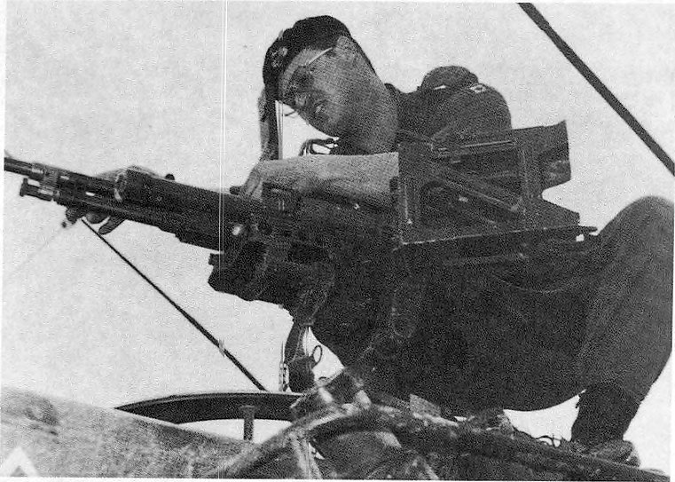
3 A Fantasian Motor Rifle Division Extended
Major General Valentin Pikhtin, the commander of 79th Motor Rifle Division (79 MRD [motor rifle division]), was also mindful of a potential threat to his extending right flank as 67th Motor Rifle Regiment (67 MRR [motor rifle regiment]) steadily advanced in parallel with 99 MRR on the left. As throughout 10 August and, unknown to him, 7 CMBG [Canadian Mechanized Brigade Group] concentrated menacingly to the northward. The threat was rated low and precautions taken were minimal. Fantasian doctrine, which insisted upon strict maintenance of the aim along with dismissal of secondary distraction, was deeply ingrained within Pikhtin. He would relentlessly pursue the enemy to his front, hustling harder and faster. With sublime confidence he counted upon his own 52 Tk Regt soon catching up with his leading MRRs ready to exploit their success. And for the badly mauled 92 MRR to reorganize and come forward again next day. Moreover, he was assured by the commander of the neighbouring 94 MRD that its pause away to the north was only a temporary one. Soon it would overcome a handful of stubborn Americans, catch up and again cover 79 MRD’s northern flank. Yet, if all else failed, reflected Pikhtin, he had 33 Indep Tk Bn up his sleeve in company with 92 MRR, to cover his right flank if it extended unprotected along the SCHWARZACH stream beyond NEUNBERG.
Pikhtin concurred, therefore, with the routine precautions adopted by Colonel Alexander Zaitsev, commanding 67 MRR. For Zaitsev planned merely to post the smallest of sub-units over the as yet intact bridges across the tank-proof SCHWARZACH and merely prepare them for demolition, just in case an enemy raid from the north materialized. To amplify these measures, which were designed to provide longer warning of any developing enemy advance, and also possibly inflict delay, Pikhtin ordered the establishment of observation posts and ambush positions by BRDM [Soviet-designed armoured scout car] and BMPs [Soviet-designed infantry fighting vehicles] of the divisional reconnaissance battalion. They were to overlook the routes through the woods to the north of the stream. For although he reasoned this was fairly secure territory since it had already been infiltrated by parties of infantry from 94 MRD, it was better to be safe than sorry. Yet the commitment represented little more than a gesture, the diversion at the several bridge sites of nothing stronger than a BMP infantry section, with either a T80 tank or a Spandrel as tank destroyers. Neither Pikhtin nor Zaitsev bothered to go see for themselves because their attention, as doctrine very rightly insisted, was fixed upon the spearheads which were palpably defeating an enemy who showed no wish to stand and give battle against 79 MRD. The likelihood of a trap was overlooked by both.
Nor was Pikhtin stirred to alarm when, later that evening, it became evident 94 MRD was conspicuously stalled and that his own 52 Tk Regt was again prevented from following up along the divisional centre line. Fortunately, 67 MRR was five kilometres past NEUNBERG without meeting much resistance and the trouble afflicting 52 Tk Regt (all of them, as usual, the fault of the Army Commander and his staff, it seemed to Pikhtin) must soon be overcome. Moreover there was a total absence of evidence to suggest a serious threat to his right flank; just an agent’s unconfirmed report that mentioned armoured vehicles moving into the WITTSCHAU (0195) region, troops which were thought to be American come to stiffen resistance to 94 MRD. As for 52 Tk Regt, it now turned out that it had been held back because the Army Commander originally wanted it as a reserve against an anticipated enemy counter-attack in the south, but which had yet to develop. But now its progress was checked by traffic congestion caused by an aggregation of difficulties: from priority given to logistic traffic in an endeavour to overcome the undeniably worsening supply problems at the front; exacerbated by blockages at bottlenecks created by enemy demolitions and interdiction from air and from ambushes. The engineers were doing their best to put the lines of communication right, but their task was vastly compounded when devastating air attacks broke the principal bridges over the river REGEN. As a result Pikhtin was told that 52 Tk Regt might be further delayed from joining him in strength until first light 11 August. By which time his leading elements should have reached the NAAB; always supposing nothing else threw his plans out of joint. He consoled himself that both leading MRRs had their T80s in company and that 33 Tk Bn was across the REGEN with its T80s. But his confidence was not quite as ebullient as the day before.
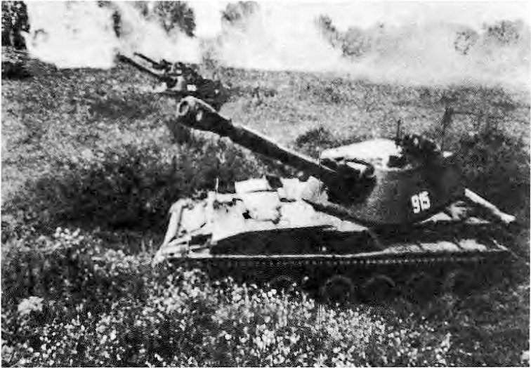
Far more worrying to Pikhtin than the enemy threat, was the overall depletion of his division’s combat strength. Fighting had been fierce from the outset and losses in men and equipment greater than expected. The leading 67 and 99 MRDs were thirty per cent under-strength, the 92 MRR at only sixty percent of full strength with its tank battalion reduced to fifteen T80s. 52 Tk Regt also had taken a bit of a beating and had only about seventy of its ninety-four T80s running. Admittedly the divisional artillery was in good order and amply backed-up by the usual, generous attachment of guns from Army and Front resources. Rather too generous, Pikhtin now ruefully reflected, since the strain upon supply of all kinds was most noticeably embarrassing with artillery ammunition. Expenditure had been high in face of strong, enplaced enemy opposition. By first light 11 August, his deputy commander for the rear reckoned, first line stocks would have been replaced but the levels at second line were liable to be in doubt, dependent upon the repair of the REGEN bridges and any other forms of enemy interdiction. Until the logistic situation stabilized, Pikhtin had to conclude that if a bounced crossing of the River NAAB failed, the chances of making a set-piece assault of this formidable obstacle were less rosy, let alone inhibited in exploitation, if 52 Tk Regt did not catch up. And finally, Pikhtin had realistically to reconsider the combat quality of his troops. They had fought well but deficiencies in training, particularly of the newest conscripts, had been exposed. This had thrown a heavy stress load upon the regulars and older hands who, like their opposite numbers in the enemy units, were showing the effects.
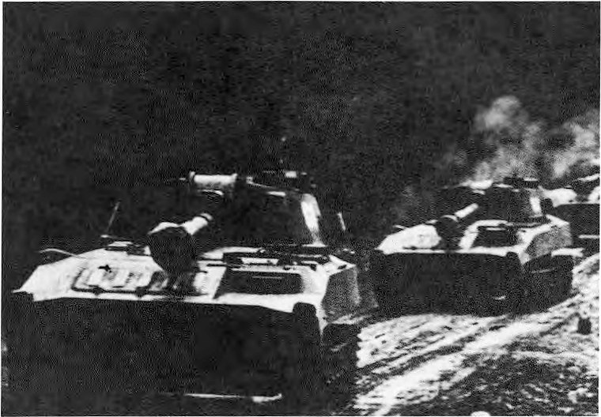
So Pikhtin, who was tired himself, spent part of the night 10/11 August between catnaps, spurring on his weary MRRs — ruthlessly demanding they let nothing stop them from reaching the NAAB, through the close and tortuous terrain, by first light. Insisting, too, upon pain of dire retribution, that they brush aside those trivial ambush parties and ignore, at whatever cost, the mines holding up their progress. He bullied to marginal avail; fatigue, inertia and enemy harassment took their toll of who were close to the edge of exhaustion. The advance slowed down, its spearheads still short of their objective at first light. Similarly there was little comfort from 52 Tk Regt’s commander, Colonel Eduard Lysevich, despite numerous enquiries in forceful style; repair of the bridges over the REGEN had been delayed and the armour would not cross until later in the morning. And 94 MRD’s liaison officer at his headquarters was to endure an uncomfortable interview explaining how it was that the formation he represented had advanced hardly at all that night. As for Pikhtin’s deputy commander for the rear, he spent a most unhappy ten minutes telling his commander that the persistent delay in bringing forward ammunition was not his fault, but caused by the same bottle-necks which held up the armour.
Pikhtin’s urgings generated ripples of concern throughout and beyond his command, a high proportion of them carried by radio and gleefully monitored by the EW [electronic warfare] Troop attached to 7 CMBG Signal Squadron. Throughout the night these valuable gleanings from the ether where transmitted to the Electronic Warfare Coordination Centre (EWCC) at the Brigade ICAC [probably Intelligence Collection and Analysis Centre], where they were synthesized, along with a multitude of reports from other sources, to produce all source intelligence and passed upwards through intelligence reporting channels to 51st (US) Armored Division and eventually XV (US) Corps. As the new intelligence was received at each level, a picture of the enemy’s progress and difficulties began to emerge and was placed before the respective commanders. Systematically a picture of the enemy’s progress and difficulties began to emerge. Adroitly XV Corp’s Commander called for renewed air attacks upon the REGEN bridges in an endeavour to aggravate the enemy’s main traffic problems and, as an extra dividend, widen still further the gaps that already were opening between his leading and following formations at the front. Shortly after 0500 hours on the eleventh, at the glimmer of first light, tactical reconnaissance from aircraft and a US Army remotely piloted vehicle (RPV) produced the essential confirmation of enemy discomfort. The bulk of enemy armour appeared still to be east of the REGEN, though beginning to move, and only one bridge was open across the river.
With this dramatic information presented to him with appropriate drama by a contented intelligence staff, the Corps Commander judged the moment to strike had arrived. Within minutes the warning order, long ago drafted, was on its way to an impatient 51st Armored Division Commander, whose G2 [intelligence staff] had already made just such a presentation and whose Chief of Staff was wondering why they were not already moving! The counterstroke had begun.
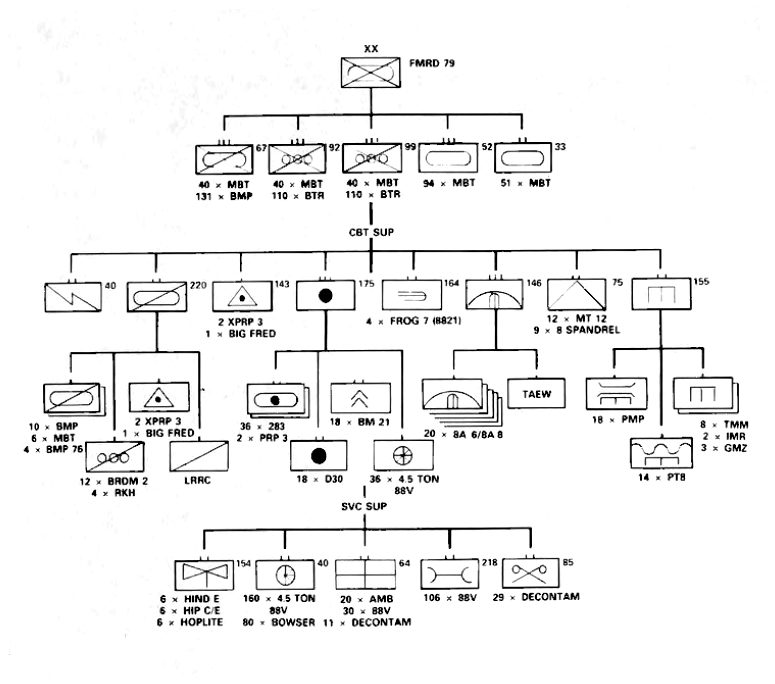
4 Warning Order
Stand-to at first light on 11 August was enlivened by a menacing breach of discipline by the commander of a Gepard point anti-aircraft gun protecting HQ [headquarters] 7 CMBG [Canadian Mechanized Brigade Group]. A Fantasian fighter of unidentified nomenclature has been picked up late, at close range, on the Gepard’s radar and enthusiastically engaged by the gunner despite specific instructions from G3 [operations staff] (Air) that weapons hold was in force. The blast of fire from the twin 35 mm guns might well have gone unnoticed by the Fantasian pilot, or he could have seen the tracer’s flash or received hits. Either way, a danger to the brigade’s security, by disclosure to the enemy, was created since the experience of the past few days had shown that if one anti-aircraft weapon opened fire others tended to copy its example, on the assumption that a deliberate attack had been made and self-defence was justified. No amount of apology or excuse could aquit the gunner of having fired carelessly on his own initiative in the absence of the detachment commander (who was visiting the latrine); for by no stretch of imagination was that fighter bent on attack. The weapons hold order had been imposed by the Americans with the intention of minimising enemy inquisitiveness over this sector. Now everybody at brigade headquarters held his breath, dreading the feu-de-joie to which they had accustomed. But fortunately only a solitary infantry APC’s [armoured personnel carrier] 30 mm chain gun in the middle distance took up the theme. And happily the aircraft did not return to re-examine the area. Yet nobody could know what photographs he might have taken during that pass, or if his surveillance devices had picked up information which might prove valuable to a zealous Fantasian intelligence officer seeking clues.
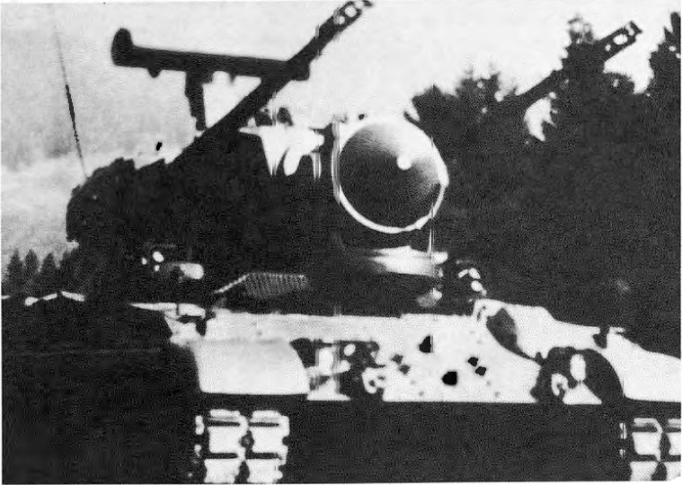
The realisation that hopes of a rest day could safely be abandoned spread through 7 CMBG’s combat units when, shortly after 0830 hours, the word went round squadrons, batteries and companies that sub-unit commanders had been called to unit headquarters for orders, and that everybody was at two hours notice to move. For the CTR [The Canadian Tank Regiment], as at all regimental and battalion headquarters, the warning order starting all this activity had come in by telephone from brigade. Captain John Goodman, the Operations Officer, who happened to be on duty in the CP [command post] at that moment, took it down in person. It was an order precise in its standard form, which had followed the routine communication channels from XV Corps, to 51st Armored Division, to 7 CMBG and thence radiated to its units. To BGen [Brigadier-General] Charles Knutson’s commanding officers it was the positive indication that the attack he had discussed but a few hours ago was on. The warning order sent by 7 CMBG at 0820 hrs read:
This provided commanding officers with the essence of the warning orders they now passed on to their sub-units, and contained sufficient information for Cowdray to formulate the outline of the operations order he would shortly give. In the case of CTR it was a matter of sending the warning order to squadrons, less A Squadron which heard through the Vandoos, its affiliated infantry battalion, and to call for an orders group at RHQ [regimental headquarters] at 1130 hours. This message was also relayed to the officers commanding the sub-units which were already nominated to be under command or in support of CTR battle group — to A and B Companies from 5 PPCLI [Princess Patricia’s Canadian Light Infantry], the Field Troop and Armoured Troop from 7 CER [Combat Engineer Regiment], the Brigade Anti Armour Squadron and to C Battery 7 RCHA [Royal Canadian Horse Artillery].
With the minimum of fuss, despite the exciting implications of the order, officers and men began systematically to prepare for combat. Throughout the CTR’s location, this injected an even greater sense of urgency into completion of work on vehicles and equipment, after having to decide which jobs might safely be left undone, while mechanics finished off work in progress and turned to stowing their own carriers and armoured recovery vehicles (ARV). Crews with experience of battle took just that much more care about stowage, about preparation of weapons and every minute detail upon which their ability to hit hard and yet survive depended. Newcomers worked with an eye on the old hands, learning by emulation what the meaning of attention to detail really was. It was the same with the rest of the battle group, with a nearby troop of Chimeras from the Anti-armour Squadron; the two companies of Patricias working on their carriers, the sappers of the Field Troop; the crews of the two armoured engineer vehicles (AEV) and the two armoured vehicle launched bridges (AVLB), whose lumbering bridging vehicles would soon be embarked upon their first operational assault mission: also the gunners of 127 Air Defence Battery RCA [Royal Canadian Artillery], the 7 RCHA’s four batteries of M 109A2s, that would be providing that heavy fire power to which the entire brigade, looked when nothing else would suffice to hit the enemy hard. But like everything else, the guns remained under cover, their designated firing positions surveyed but unoccupied. When the warning order said “No mov before 1230 hrs” it meant just that. The demands of security in the interests of surprising the enemy were paramount.
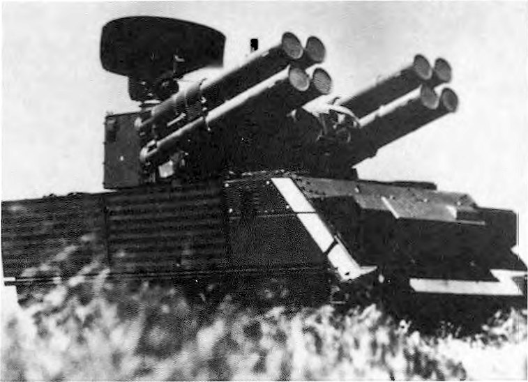
While LCol [Lieutenant-Colonel] Brian Cowdray studied the latest intelligence summary (INTSUM) and in consultation with his Operations Officer and Intelligence Officer, sketched with chinagraph on the map, the RHQ staff were setting up the Rastatte’s dining room for the forthcoming orders group (having ensured that all civilian residents were cleared from the vicinity) and readying materials for the reproduction of such written orders as might, possibly, be required, and such traces as undoubtedly would.
Elsewhere squadron commanders, having checked that liaison officers were on hand to accompany them to the orders group at RHQ, were taking advantage of the brief spell available to stroll round their troops, probing for short-comings unnoticed and for deficiencies as yet unresolved. But, most important of all, evaluating morale and imparting words of encouragement to their men, the majority of whom guessed that the next few days were likely to be a culminating test of their skill and resolution. Typical of the line taken by his colleagues was that adopted by Major Bart Watson, commanding B Squadron. To the assembled men of 1 Troop, who had finished stowing their Lions by the time he reached them and were brewing coffee or writing brief letters home, he tried to impart reassurance while answering their questions about what would happen next. He sensed that their natural anxieties and fears needed to be assuaged and that the best way of doing so, in the circumstances, was to put over the vital importance of what they were about to be called upon to do. He tried to explain why the dangers they would be facing were worthwhile and not at the bidding of some harum-scarum ploy on the part of senior commanders.
“Look,” he said, “most of you at some time or another have been on exercises when the story line’s about the enemy having shot their bolt and, here we go, one mighty shove and, before you know where you are, they’re running hell bent for home. Well, its more than a figment of RHQ’s imagination, you know. Most of you probably do know, already, that we’ve often played that kind of game because, if we’re going to win the war, there must come a moment when the Fantasians are made to feel licked. It’s a time, too, when we’re telling him that we’re not going to be shoved around any more. From now on we’re doing the shoving.”
He paused. “Well that’s where we are now this time. The CO [commanding officer] was saying only yesterday that the intelligence guys are putting it about that the bunch we’ve been up against are on their last legs. Stands to reason, if they were not they’d be a lot farther west than they’ve got. So the chances of pulling it off are good. And just tack on to the one thing that’s most important of all. If we pull this off. If we shake ’em rigid, its not just they might not come back for more. Like as not there’ll be no need to go nuclear — and that for me is — right on!”
They agreed for a variety of motivations — anything from a sense of duty to that of some soldiers who wanted to pay off a grudge against the enemy for what he had started, and to those among the latest arrivals who, in their sincere greeness, desired to justify their training and their sense of manhood.
5 Principles and Plans
It was with some gratification, founded in the mindfulness of vital time saved, that Knutson read the message from Commander 51st US Armored Division, confirming that the outline offensive plan they had discussed on 10 August was on. Foresight had paid off handsomely, not only by encouraging short cuts in the preparation and distribution of orders, but also by forestalling the assembly of a full brigade orders group, in electronic silence; there were, of course attractions in favour of calling an orders group, Chenier the G3 [operations staff] argued; it got more people in motion at one time. But the Commander, having indicated his intentions to all COs [commanding officers] beforehand, had enabled them to lay their own plans and, above all, settle upon the grouping of their combat teams in the event of the most likely course of action. Time was saved in the conveyance of what now needed only to be fragmentary orders from Brigade HQ [headquarters] to out-stations, and granted his subordinates additional time to brief their own subordinates. The more time saved, the less the haste — and there was no virtue in hurry if errors were to be minimized, as Chenier strongly insisted. Moreover, as he also irreverently remarked, “Good as it might be for promotion prospects, it would be a shame, as well as fatal to the operation, if all that top brass was caught and killed in a huddle. It has happened before, you know sir!” As indeed the Commander, an avid history buff, was aware.
The axis of advance that Knutson had negotiated with the American Commander, the boundaries within which 7 CMBG [Canadian Mechanized Brigade Group] would operate and the objectives to be seized, fitted neatly the capacity of his formation. Although problems had been solved by hard bargaining and commonsense on the part of both generals, in effect, the American had been guided by the principle of thinking two rungs down the ladder of command, attempting to get the best out of his ally without extending the available battle groups beyond their capability. Driven by the will to win, he nevertheless saw little point in falling short of his goal by avoidably over-stretching 7 CMBG in its first major offensive operation. He guessed shrewdly that the urging of national pride would ensure something better than a one hundred percent effort by an ally.
It was the estimation of ground which, more than any other factor, dictated the plan Knutson adopted and which the staff were now converting into a trace to illustrate fragmentary orders in note form. Misleading as it would be to suggest that he, the G3 and the G4 [logistics staff] ticked off the Principles of War from a check list. Nevertheless those ancient rules were being complied with by the G3 when he drafted the notes. Governed by the training implicit in the manuals and staff college teaching, a disciplined conformity, allied to a proper pride in staff duties, helped ensure accuracy when the tyranny of time prevailed. One day historians might notice that the Principles of War were observed on this occasion.
Knutson’s Selection of the Aim had been steered by Commander 51st US Armored Division. 7 CMBG would seize bridgeheads across the River SCHWARZACH with a view to exploiting rapidly in a southerly and easterly direction. He reckoned that Maintenance of Morale would be achieved by the very fact that this was to be the first major offensive action to seize the initiative. Security he had insisted upon before they entered the assembly area and in his expressed determination to permit only minimal movement and impose strict electronic silence until the last moment prior to the advance to contact starting. Concealment and the sheer momentum of that advance he hoped would be enhanced by the approach coming from an unexpected direction, to astonish and throw the enemy off balance by Surprise.
Concentration of Force demanded the deepest attention in coping with numerous, sometimes conflicting factors, including time and space. There had to be a compromise between the basic aim of hitting the enemy with superior numbers and fire-power at the vital points; the need to keep the movement of traffic within the capacity of minor roads, to prevent traffic jams; and the avoidance of funnelling such a conglomeration of vehicles into a confined area that they attract enemy attention and invite intensive bombardment — worst of all to be rated a suitable target for a nuclear strike, if matters happened to deteriorate to that state. By allocating two routes to each of his leading battle groups and placing the CTR [The Canadian Tank Regiment] battle group, armour heavy with three of its four tank squadrons, on the left (where the terrain was more open than on the right), and sending the Vandoo battle group with a single squadron into the more heavily forested terrain on the right, Knutson hoped to achieve the right balance. All being well there should be sufficient infantry with each battle group to deal with the woods to the north of SCHWARZACH and yet retain sufficient strength to cross that stream by coup de main or hasty attack, providing the enemy was caught off balance. But he had also to take into account that the enemy might be ready and did manage to hold the line of the stream in strength. It was with that eventuality in mind that he instructed CO 5 PPCLI [Princess Patricia’s Canadian Light Infantry] to plan for an assault crossing through the CTR sector if the need arose.
Within Concentration of Force abided the principle of Economy of Effort. Precise judgement of the exact elements required to satisfy the arm without overtaxing the resources of his brigade, or of denying it maximum options to overcome the unforeseen. All these contributed to that vital principle and attributed a Flexibility of mind and action. An analogy with the coaching of a hockey team sprang to mind with the deft shuffling of players of different characteristic and skills to satisfy variable combinations in constantly changing combat situations.
By the same token, it followed that if Knutson, as coach, was to call the changes in time to the demands of Economy of Effort and Flexibility, he had also to adhere to the principle of Co-operation. In this he not only bore in mind an indoctrinated insistence upon co-operation between the fighting elements within 7 CMBG, but co-operation too with flanking formations, with allies and with civilian authorities over whose ground they were fighting; also with and between the administrative services. Already, for example, a liaison officer was located at the headquarters of the US brigade in the line to the east of the assembly area, tasked not only to glean early warning of any dramatic change of situation on that front but to keep the American commander informed of Knutson’s intentions, and to act as a channel of information to prevent misunderstanding and avoid confusion, when 7 CMBG moved southwards to pass across the American brigade’s lines of communication. And links were being formed, too, with the local civilian officials in the interest of, among other things, intelligence and security.
Finally, Knutson had to measure the effects of Administration, the benefits which might be obtained from making inspired use of resources and the restrictions which might be imposed by blockage of routes or supply shortages. In this drafting of the service support paragraphs for the fragmentary order, G4 relied mainly on tested, standard procedures and layout, in an endeavour to ensure that 7 CMBG never would be looking over its shoulder for supplies, fuel and ammunition; that the repair and replacement of damaged equipment would be unrestrained; and probably most important of all in its humanitarian contribution, that the medical teams of 7 Fd Amb were amply supported in their care of the wounded. Administrative incompetence was the short way to undermine the Maintenance of Morale.
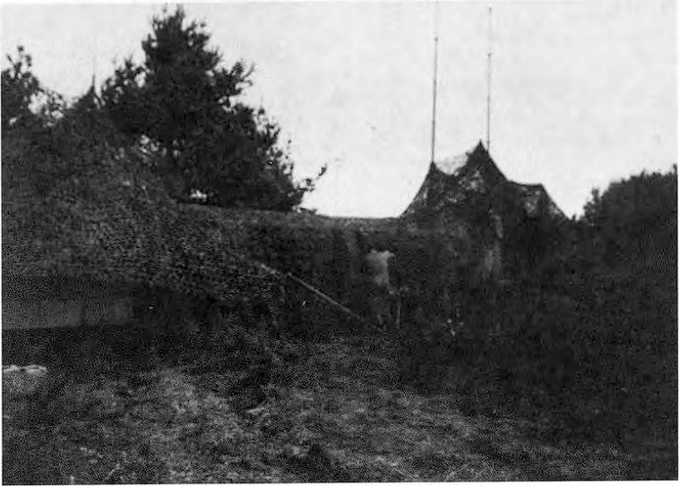
It was left to the staff to prepare and disseminate the orders, which were based upon advice from the arms and service advisors and their staff. CO 7 RCHA [Royal Canadian Horse Artillery] in the adjacent Fire Support Coordination Centre (FSCC) the CO 7 CER [Combat Engineer Regiment], the SO [staff officer] (Sigs), the CO Brigade Recce Squadron and the CO 7 Fd Amb and 7 Svc Bn all contributed. Knutson, of course, had collaborated from the start with LCol [Lieutenant-Colonel] Bob Laird, commanding 7 RCHA, and LCol Ed Blake, commanding 7 CER, in the formulation of his plan. Together these two had played a big part in settling the fire support plan and the allocation of engineer effort in the knowledge, stemming from tradition and inherent power, where the success or failure of an operation lay.
To Major Paul Legrange, commanding the Recce Squadron, Knutson addressed special and forceful advice, underlining with fierce conviction how much depended upon the Bobcat recce vehicles. Boldness must be the key word, he had insisted, when emphasising the importance of the squadron’s mission as covering force to the brigade; audacity to fulfill its multiple tasks of making contact with the enemy, and uncovering his secrets by close reconnaissance along four routes, with a view to helping seize vital bridges over the SCHWARZACH intact.
“To use a phrase by Winston Churchill, Paul”, he had summed up. “Safety first is the road to ruin in war. You’d be surprised how many lives have been lost through timidity.”
Which was all very well, thought Legrange, as he nodded assent, when you also took into account the need for stealth and skill when trying to unveil carefully guarded secrets from an alert enemy, while travelling in a thinly armoured recce vehicle armed with a 30 mm chain gun. Which was one reason why he has asked for, and been given in support, the troop of TOW [tube-launched, optically tracked, wire-guided missile] Under Armour (TUA) belonging to the Anti-armour Squadron. With that on call, his Bobcats might at least be able to scare off such enemy heavy armour or guns as could impede his troop feeling its way deftly and perilously into the unknown. He did, therefore, obtain from Knutson an assurance that helping to seize the bridges was of lowest priority, merely an opportunistic extra!
Before focussing his mind wholly upon tactics, Knutson also took the opportunity for another chat with LCol Alec McGill before the CO of 7 Svc Bn went back to the Logistic Operations Centre in the BAA [brigade administrative area]. By seeking answers to a few searching questions, he meant to reassure himself that all was well without getting involved in the detailed process, which was the responsibility of a well paid LCol. Satisfied, he added a few words of thanks spiced with guidance and sense of ambitious optimism which everybody had need of at a crucial moment such as this.
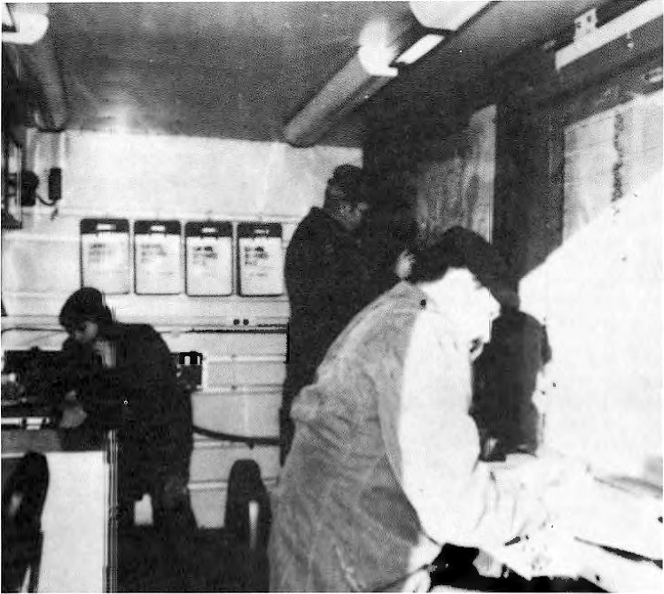
“Have it in mind, Alec. This business might go better than we envisage. If you’ve not already thought of it, imagine we might get on better than hoped for. Get in among ’em real deep, I mean! OK?”
Which McGill took as a hint about pushing the BAA forward when the time was ripe — which meant earmarking a suitable locality, perhaps in the present assembly area. No sooner had he got back to the Logistic Operations Centre indeed, than he instructed his 2ic to go forward and, as was his duty, reconnoitre the layout which might be adopted. For although McGill gave consideration to leaving the BAA where it was and forming also a small Forward Logistic Group (FLG), he preferred not to do so since there would be a weakening of the BAA along with the disruption of the normal administrative command and control arrangements. Whatever happened, the 2ic’s reconnaissance would not be wasted if, eventually, an FLG did prove advisable in support of some unforeseen special mission. Furthermore, his acquaintance with places where replenishment points for supplies and resources were likely to be established was sure to be valuable.
6 Orders and Optimism
When the squadron and company commanders walked into RHQ [regimental headquarters] CTR [The Canadian Tank Regiment] and glanced at the traces handed out by the IO [intelligence officer], feelings of relief mixed with tense anticipation overwhelmed an earlier sense of doubt. Shortly after dawn a prolonged and robust roll of gunfire to the east had hinted at renewed enemy pressure upon the Americans. Could it be, they had asked themselves, that they might after all have to shore up a tottering front? Not so; the firing had died away and was now only intermittent and no closer. The blue chinagraph combat team centre lines, enclosed within black boundaries, pointed aggressively southwards. Broken blue arcs, depicting the projected objective lodgements which intruded into the flank of marks in red chinagraph, indicated the fullest extent of enemy penetration. Annotated, too, were the details which the CO [commanding officer] had so accurately foretold the previous evening — the groupings, line of departure, the availability of which, at this stage, would shorten the ensuing orders group and make it easier to understand. Moreover, copies of the traces could be carried back at once by the LO [liaison officer], who had accompanied each squadron or company commander, to the waiting battle captains, troop and tank commanders who could then mark up their maps ready for their orders group.
The members of the CO’s orders group arrived at least fifteen minutes before the notified time in order to indulge in a priceless gleaning of information from the intelligence sergeant and the Signals Officer, who provided an up-date in their own spheres of activity, besides chatting informally to the two Patricia company commanders, the CO of the Anti-armour Squadron (each of them old friends), and a sapper captain they had not met before, who was in command of the Field Troop and representing the Armoured Engineer Troop from 7 CER [Combat Engineer Regiment]. At 1055 hours precisely, Jim Fuller, who as IO was responsible for staging the orders group in the Rastatte’s dining room, asked the officers to take their places in the semicircle of chairs round the operations map. A minute later they stood as Cowdray, his 2ic, Major Don East, and the Ops Offr, John Goodman, accompanied by Major Reg King, the battery commander of C Battery 7 RCHA [Royal Canadian Horse Artillery], entered.
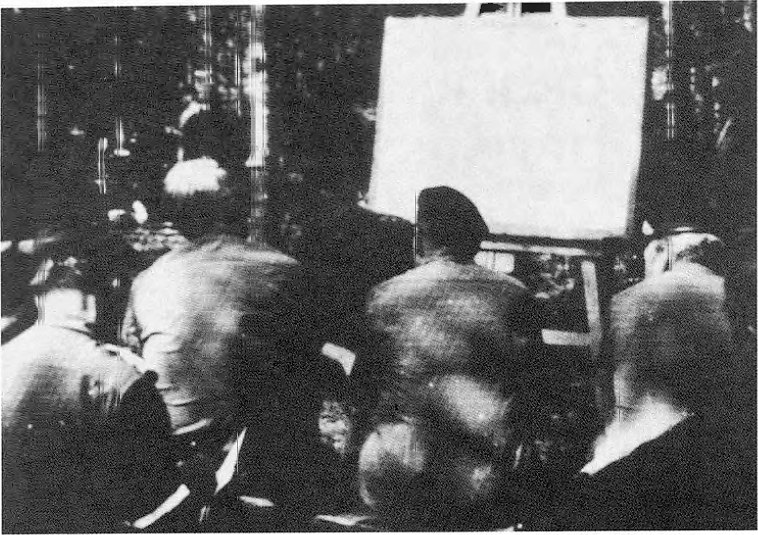
Time was short, a mere one hundred minutes before the leading combat teams were scheduled to break cover and move towards their lines of departure.
Already, Cowdray knew, the Brigade Recce Squadron would be preparing to move ahead of them all. The briefest of introductions, including a welcome to Captain Hank Williams of the sappers, prefaced the oral orders. Fuller opened with the Enemy Forces paragraph by referring to the latest INTSUM [intelligence summary] (already issued), merely adding, “No change from that, sir.” Speaking authoritively from notes, almost in monosyllables in the prescribed sequence, Cowdray got into his stride, glancing intently at each officer addressed to check the words were going home, allowing questions only if it was apparent his meaning was not clear — an extremely rare event.
His notes are reproduced at the end of this chapter and copy long established procedures. Ever a supporter of innovation and, when necessary, improvisation, Cowdray was keenly aware that under the stress of battle it was preferable to retain the confidence of his subordinates by asking them to undertake only those tasks with which they were familiar through frequent practice — and that simplicity was golden. It was one of his rules that, as in theatre, rehearsal was crucial and that no stage producer changes the play at the moment the curtain is about to rise on opening night. Rehearsal for the advance to contact, the hasty attack and its aftermath had been the underlying motive of so many pre-war exercises. It would be madness to diverge from a familiar format, particularly since the Brigade Commander had given him adequate resources to fulfill the task. The improvisations, if and when needed, would only be at the dictates of an unfolding situation, moulded at times, no doubt, by the violence of the enemy reaction. With that in mind he was pleased to have been able to enhance the striking power and flexibility of each leading combat team with its balanced armour/infantry force, from the strong reserve comprising a complete squadron of Lions, three troops of Chimera and a section of anti-armour APCs [armoured personnel carriers] from the Patricias. It was comforting, also, to realise that in the forthcoming battle (in which he considered, the application of direct fire-power from the longer ranges by his tanks was preferable to risking valuable Lions by charging to close range) the volume of indirect artillery support on call was impressive. At that moment he could not envisage a specific task for the crushing carpet of fire deliverable by the multiple rocket launchers (MLRS), since he hoped to storm the heights beyond the SCHWARZACH without pause for a deliberate assault. But the battalion of 203 mm heavy howitzers from 94 US Regiment was extremely welcome, particularly for counter bombardment, and the promise of fire from the majority if not all the surviving thirty-four 155 mm medium howitzers of 7 RCHA was never to be despised.
C Battery’s commander withheld comment until Cowdray invited him to deal with the artillery sub-paragraph. King described continuous fire support plan to cover the advance to contact and the initial attempt to seize a bridge or two over the river. Requests for supplementary tasks from sub-units, he said, must be submitted to RHQ and by the FSCC [Fire Support Coordination Centre] as soon as possible for incorporation in the plan being hatched at the FSCC with HQ 7 CMBG [Canadian Mechanized Brigade Group]. “But time’s short and targets must be kept to the minimum,” hinting, some thought, that the combined wisdom of he and Cowdray had probably taken care of every eventuality. Later, in fact, OC B Squadron did make a request for two additional tasks, one focussed upon the left sector of the extensive crest line dominating ANDREA, the left axis of advance, the other across the road where it bisected the forest in the approaches to MITTERASCHAU (1072). Both were accepted and included in the final fire task list.
Only at one other stage did Cowdray allow anybody else to speak during his delivery. That was to invite Major Stan Muller, commanding HQ Squadron, to point out that A1 echelons would remain in normal attendance under command of their squadrons, but would be augmented by one M548 fuel vehicle for the long advance to contact; that A2 would remain in its present location in the assembly area under the control of G4 [logistics staff] at Brigade; and that, except in the most extraordinary circumstances, he saw little prospect of the latter coming forward in the next twenty-four hours, the replacement of emptied vehicles within A1 taking place in accordance with the normal rotation procedures and, for the most part, at night.
Synchronisation of watches (conducted by Major King) was followed by questions which were perfunctory. Cowdray pointed out that, as time was short and each of them would want as long as possible to give their own orders, (yet still leaving time for explanation of the operation to their men), they should raise only vital matters. He would visit them prior to start time to iron out any outstanding difficulties. This was not the time for discussions as, sometimes, had enlivened the preliminaries of peace time exercises. Only Major Henry Calmat, commanding the Anti-armour Squadron, had a serious query. With three of his four troops of Chimera TD [tank destroyer] now under his personal command in the CTR battle group, this was his first opportunity to exercise command in battle; since previously each of his troops was parcelled out under command of battle groups during the defensive operation on the BÜHL plateau.
“In what circumstances, Colonel, and with whom, or where, do you maybe see fly bunch doing their stuff? It sure would help if I knew, cos I’m told that being in reserve is the best way to draw the toughest job because you get shoved in where things have got fouled up!”
“OK, Henry,” said Cowdray with a laugh. “I’ll see what I can do. Chances are, if all goes to plan, you won’t be needed until we reach the river. Than you’re likely to find yourself pushed up onto the high ground where, if the Fantasians have reacted in any sort of way, you’ll find trouble like T80s. Course, if we get stuck at the river, if for example, they blow all bridges, then it’s certain you’ll be supporting a deliberate attack by the Patricias. And like as not at night. OK?”
The tank squadron and infantry company commanders had more pressing matters on their minds; how, within the short time available, were they to co-ordinate their joint activities, give orders to their subordinates and supervise their combat teams launching into battle across ground they were virtually unable to reconnoitre? They arranged co-ordination by rapid exchanges of views after the CO’s orders group, before racing back to their harbour areas. The drills they would adopt were ingrained by doctrine; mainly they concentrated upon where and when each would take command of their respective combat teams. A study of the map showing that on both axes, such was the apparent openness of the ground and the tactical situation, the squadron commander should be in charge and that, very likely, not until they reached the thickly wooded area to the north of the river, would the infantry take over.
It was around 1150 hours before sub-unit orders groups began and 1210 before each was completed. Therefore 1220 before troop and platoon commanders were sitting down with their subordinates for a brief outline of what was going on and what could be expected. Meanwhile camouflage was being removed, final stowage completed, and the men beginning to mount prior to starting up and moving to the line of departure to take their place in the pre-arranged order of march. To Sgt Al Rankin in 1 Troop, B Squadron, like most other Lion commanders, there was little time for reflection. Nominated by his troop officer, Lt Tom Gray, to be point tank, and therefore leading vehicle of the entire combat team (a dubious honour some might think) he had to use imagination based on study of the map alone to decide how best to move. And he got it slightly wrong by reaching the conclusion that the terrain ahead was far closer and the ranges shorter than it actually proved to be. An experienced commander, he made a point of spending a few minutes explaining to his crew what they were in for, trying to put across that the job, though a tough one, looked reasonable, lifting their hearts a little by pointing out that they might have been relieved of the lead before real opposition was encountered. There was the comforting fact, he reminded them, that the Bobcats from the Brigade Recce Squadron would be out searching ahead and bumping the first trouble; and that their exposed left flank, to some extent, would be covered by a patrol from the CTR Recce Troop’s Bobcats. And if luck was on their side, those same Bobcats might even bounce the river without being spotted. But he didn’t really believe that, and nor did Lt Gray. So it might be up to them to help the Patricias across in a hasty attack with an AVLB [armoured vehicle launched bridge] doing its stuff.
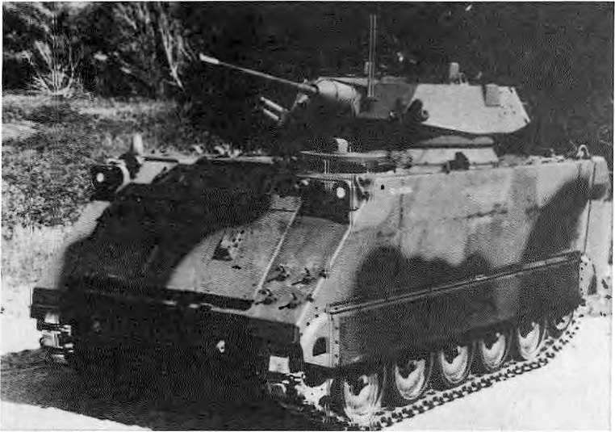
Gray had pointed the obvious danger spots; the villages and woods and the several defiles that would have to be negotiated with care, and yet in haste with the risks involved; above all, that chunk of high ground dominating the river. Letting his radio operator command the tank as it followed Gray’s Lion to the junction with the squadron axis, Rankin endeavoured to memorize the route ahead and formulate reactions to situations which might evolve. Experience implied that meticulous knowledge of the ground, as related to the map, was often fundamental in making the correct tactical decision when the unexpected happened.
The assembly of the combat teams was a tightly run affair. Throughout, the battle captains of both B and C Squadrons were alive to and anxious about the dangers of a last minute rush creating such confusion that an unsettling start to the operation might have dire consequences. Into the correct order of march they had to slot a diverse conglomeration of many vehicles from different sub-units, converging from several hides onto the axis before crossing the start point. After watching the Bobcats of the Brigade Recce Squadron and a section of TUA [TOW Under Armour] from the Anti-armour Squadron go through, the battle captain of B Squadron, Capt Chester Downton, had to ensure that the elements of the advanced guard — tanks, troops, infantry platoon, squadron and company HQ, FOO [forward observation officer] and sapper section — were in the precise order demanded by his Squadron Commander. Thereafter, due to his own absence among the advanced guard, he would have to leave it to sub-unit commanders, the Patricia’s second-in-command, the remainder of the tank troops and of the sappers, including the AVLBs and AEVs [armoured engineer vehicles], the armour squadron, the Patricia’s anti-armour section and the air defence sections with their Blowpipes to fit in at the right time and place. He realized, too, that Gepard and ADATS [Air Defence Anti-Tank System] detachments from the Brigade Air Defence Battery would also have to find their way forward as they extended cover over the advancing columns; as also would such important gunner target acquisition (TA) by the Support Battery to ferret out information and locate enemy guns and mortars when they opened fire.
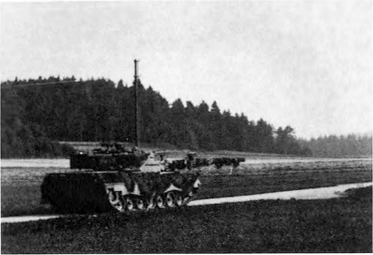
There were anxious moments when things went wrong and the initiative of individuals, using their military sense, as well as CTR military police using their authority, was vital in averting monumental foul-ups. Traffic control, allied to concealment, was vital to success. Captain Hank Williams was particularly anxious that the various sapper vehicles, among them the clumsy AVLBs, should find their places without blocking the roads, and amused by the irony of a Patricia platoon getting in the way of an AVLB, when it was approaching a difficult corner. As a newcomer to the CTR battle group he wanted to make a good impression, so he hoped Colonel Cowdray had not noticed his tardy arrival at RHQ — and only slightly relieved by the Operations Officer’s mirth at his discomforture.
Traffic control and forming-up would have been a lot easier but for the essential discipline of electronic silence. It would have been so reassuring for controllers if only a flow of reports and necessary directions could have been transmitted freely by radio. The telephone network, already in the process of being closed down to unit locations, was inadequate for the purpose. Just because a secure radio link existed down to platoon/troop level was not sufficient reason to allow chat on the air: it only required radiation of a few signals of relatively short duration to present the enemy electronic warfare interceptors with a flourish of signatures, from which revealing deductions could be drawn about both the location and intention of 7 CMBG. As it was, a heavy load rested upon signals officers, WOs [warrant officers] and NCOs [non-commissioned officers] to curb the slightest indiscretion by careless users. At every briefing and every opportunity at every level of command, strict warnings had been repeated; keep your sets on stand-by until electronic silence is cancelled. “Keep on banging that into your signallers and do NOT forget it yourselves. Fingers OFF pressel switches. No idle chat. Think before you speak. The enemy will be listening. Don’t forget it!”
It was helpful to all (including the monitors of security) that Cowdray managed to accomplish so much by visits in his jeep to each of his combat team commanders: To see their condition for himself and help them (to the extent of telling both Patricia company commanders that he had actually seen their rearmost platoons on the move); to verify they understood their tasks; and to discover that both FOOs (Captains George Hinton and Bill Cramer) had delivered copies of the latest fire plan from 7 RCHA to their respective squadron and company commanders. Satisfied that arrangements were under control, he arrived back at RHQ shortly before H hour amid a rising throb of engines announcing both columns were approaching the line of departure. As he passed Don East, the 2ic put his head out of his Lion’s cupola to give a cheery all’s well wave and then popped back inside where he was monitoring the Brigade command radio net with particular attention for the first sound of trouble from the Brigade Recce Squadron which had crossed the line of departure thirty minutes ago. John Goodman smiled too, when the CO entered the command APC, with a “Nothing to report sir” that spoke volumes.
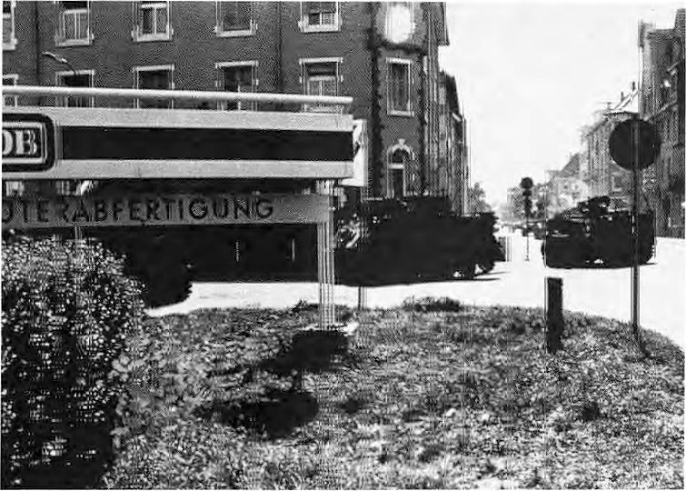
“In that case John, I think I’ll have a swig of that coffee you have there and then get into my chariot. I’ll move in three minutes.”
7 Covering Force Makes Contact
WO [warrant officer] Walter Gage was suffering from prickles up and down his spine, plus the too familiar sensation of void in his stomach which told of his sense of self-preservation being stimulated. The funnel-like approach between dense woods to the south of SALLACH (1078) looked ominous; surely this must be the place where danger lurked? Indeed, as leader of three Bobcats from 1 Troop, Brigade Recce Squadron, he had been delighted (and a trifle amazed) with the relative uneventfulness of the journey since leaving the line of departure. In fulfilment of their mission to conduct a route reconnaissance down ANDREA, they had slunk past TEUNZ (1084) whose high loom dominated the surrounding country side, and reached NIEDERMURACH (0980) without a shot fired. Which was roughly what his troop officer, Lt Rocky Poynton, had foretold after hearing the latest buzz, hot from G2 [intelligence staff] at HQ [headquarters] 7 CMBG [Canadian Mechanized Brigade Group] through the lips of Major René Legrange, OC [officer commanding] of the Brigade Recce Squadron. “Clear to NIEDERMURACH,” was the message, “You’ll probably find some Americans there, so look before you shoot.”
Bound by the rules of electronic silence (despite possession of burst radio for passing vital messages), Gage and the rest of the Bobcat commanders found command and control in the exacting role of covering force very difficult. Forbidden to use radio in an exhaustive, stealthy and vital search against time for a hidden enemy, they were reduced to asserting command and control by a routine drill employing, for the most part, only hand signals. Permitted to use one way communications only in dire emergency, while hunting up and down lateral roads, their first indication of danger was almost sure to be a deadly burst of shooting with its all too likely consequences.
So when they reached NIEDERMURACH, somewhere about 1415 hours, and found the village and a party of American MPs [military police] in a most welcoming mood, their faith in the G2’s and their OC’s estimate was reinforced; their expectations raised by the inhabitants’ calm belief that there’s not a Fantasian within ten kilometres of here. This the MPs confirmed in so far as places west, north and east were concerned. They were doubtful, however, about how it was to the south, where Gage and his Bobcats were going; although seeing people working in the fields and tending their livestock beyond the village was reassuring. Nevertheless, it was with a pronounced caution, after a hasty consultation with his other Bobcat commanders, that Gage entered the closer and more intricate terrain on the narrow road to SALLACH, KOLMHOF (1177), BACH (1075) and MITTERASCHAU (1072). A sharpened wariness stimulated his alertness to the point of obsession when he noticed that the fields beyond KOLMHOF were empty of people and the road devoid of traffic.
When it came, the shock was not a bit what he expected. A warning was relayed from a sceptical Legrange over the air, of enemy tanks in his rear to the north of NIEDERMURACH, where, so recently all had been peace and relatively quiet. The news had been heard by Legrange over the brigade command net and also monitored on the B Squadron CTR [The Canadian Tank Regiment] net, a report instantly relayed from RHQ [regimental headquarters] based upon a contact report by one of its combat teams. Sgt Al Rankin in the forefront of danger leading the vanguard B Squadron, had suddenly spotted something threatening on the other side of the valley leading into NIEDERMURACH. On impulse he had transmitted a contact report:
“2, this is 21 Bravo. Contact. Grid 089816. Two tanks moving east. Am observing. Over.”
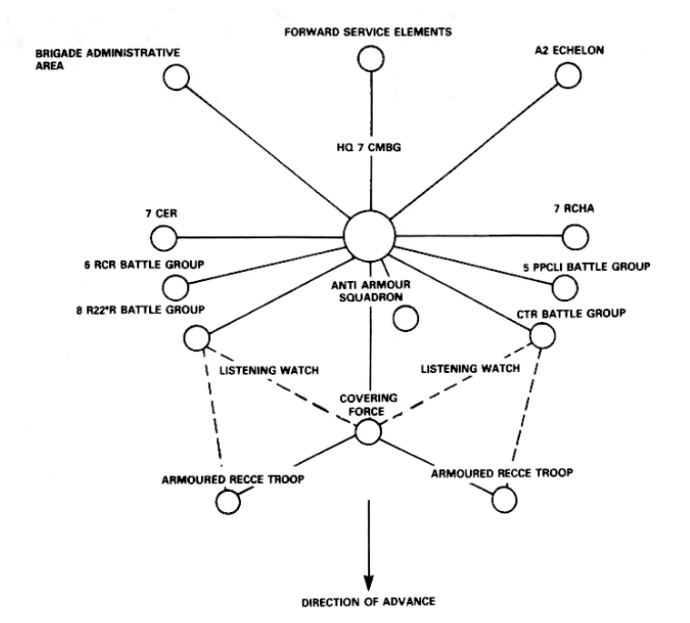
It had been a snap reaction to an apparently deadly threat. The two tanks at two thousand metres motoring fast towards NIEDERMURACH, his own destination, could easily, amid their cloud of dust, be a pair of T80s. Anxious and momentarily disoriented, and also forgetting that C Squadron would be moving down nearby route CLAUDETTE in the direction of NIEDERMURACH, he took pride in being first to claim contact with the enemy. Yet doubt prevented his opening fire a moment after he spoke into his microphone. For one thing he wanted to let the range close to fifteen hundred metres to ensure a kill; for another he had misgivings about identification. One tank at long range looks very much like another and his gunner was extremely doubtful when, having been pointed by Rankin at the target and completed laser ranging and laying, he said with due temerity:
“Sarge, they’re Lions! They’re ours!!”
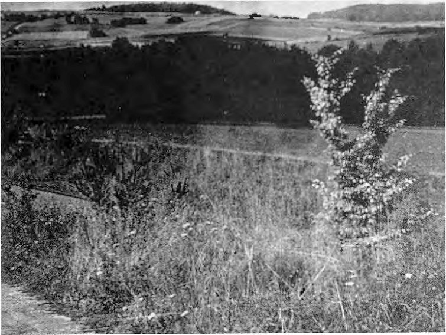
That was a serious breach of discipline: delay for debate in a tight combat situation is rarely admissible. But it gave Rankin an excuse to pause. Apologetically he came up on the air three minutes later to admit he was wrong.
But the damage of far greater moment than the loss of a Lion by friendly fire (no matter how regrettable) had been done. The slick efficiency with which CTR’s rear link re-transmitted the report over the brigade command net released pentup desires in several out stations, not least of all the Brigade Recce Squadron, to chat among themselves. Contact with the enemy offered a legitimate excuse to break electronic silence. Commanders of Bobcat patrols and leading combat teams found irresistible reasons to communicate by radio instead of by hand signals the closer they drew to the SCHWARZACH. The enemy heard Rankin’s message too and noted its repercussions: within ten minutes G2 staff at HQ 79 MRD [motor rifle division] were drawing disturbing conclusions.
“Of course,” remarked the G2 in person to the Chief of Staff, “there can’t be any of our tanks up there, not even from 94 MRD if all they say is true. So some American has been a mistake. But what worries me is the extent and nature of the traffic now being broadcast up around NIEDERMURACH and closer even than that, according to direction finding. To me that’s a combat team for sure — maybe much more — and it’s moving against our flank.”
“At first MGen [Major-General] Valentin Pikhtin was not unduly alarmed. Nevertheless he took the precautions of verifying with his staff, and with Colonel Zaitsev of 67 MRR [motor rifle regiment], that the measures to protect and, if necessary, demolish the crossings over the SCHWARZACH had been completed. Unhappily the answers were disquieting. Only the bridge at NEUNBURG had so far been demolished, while preparations to blow those to the westwards were delayed to the extent that, beyond ZANGENSTEIN (0475), nothing had been done at all. Likewise, the positioning of bridge guards and of outposts beyond the north bank had been tardy. Only the routes from MITTERASCHAU (0972) and DENGLARN (0876) as yet enjoyed the cover from light forces they warranted. Angrily, Pikhtin let his displeasure be known along with crisp orders to rectify the omissions immediately. Yet, at the same time, he declared unwillingness to permit demolition of the bridges until the situation had clarified. He desired still to maintain a threat to the northwards. In any case, such was the good news from his left flank, he still could not believe that the enemy would for much longer be held fast on this front. For the latest report from CAA [Combined Arms Army] spoke of dramatic progress on 79 MRD flank by 37th Tank Division, with every indication that, here at last, was the clean breakthrough they had been expecting. Nevertheless, Pikhtin prudently warned the battered 92 MRR and the intact 33 Indep Tk Bn to prepare, at short notice, to intervene along the SCHWARZACH. The automatic interaction within the opposing military systems had changed the face of this evolving confrontation.
Sensibly appreciating that the cancellation of electronic silence had been premature, Brigade Recce Squadron reverted to managing without radio communications as they continued their advance. That postponed the moment they could speak without constraint only slightly until one of WO Gage’s Bobcats, poking its nose out of BACH (1075), received two rounds of 73 mm shot, one of which missed and the second of which struck a glancing blow on the glacis plate. As the driver was reversing smartly into cover, smothered by the smoke from all eight smoke grenades, Gage put out the contact report, suggesting it might be a BMP [Soviet-designed infantry fighting vehicle] firing from the woods immediately to his front, supplemented by the routine announcement that he intended to explore ways round to the flanks.
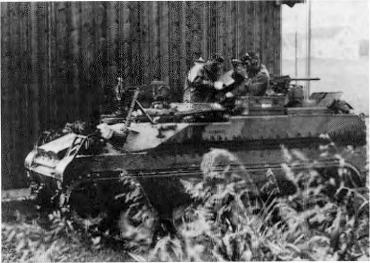
But a few minutes later and there came a repeat performance from the half troop investigating CLAUDETTE; this time at the price of a Bobcat set on fire to the south of DENGLARN. At once there was a fundamental change of mood. Commanders at all levels in 7 CMBG began to assert their authority over the air, demanding information about enemy dispositions while endeavouring to maintain the rate of advance. Legrange briefed the OC of the Kiowa helicopters assigned to him, asking for a search of the entire wooded frontage confronting both ANDREA and CLAUDETTE axis and, if possible, early information of the state of the bridges over the SCHWARZACH. G2 asked the ICAC [probably Intelligence Collection and Analysis Centre] to investigate the river’s length and the ground beyond as soon as possible.
Legrange prepared for battle as best he could with light forces: ordering forward two TUA [TOW Under Armour] in support of the leading troop of Bobcats; sending up the mortar troop, as additional support, to a base plate position near WANGERN (0977) from whence the 120 mm mortars could reach out almost as far as the SCHWARZACH; also instructing the support troops to probe along the tracks and trails intersecting the woods between BACH and DENGLARN.
Simultaneously Cowdray, sitting in his Lion’s turret, listening to the 2ic relaying every scrap of relevent information from the Brigade Recce Squadron to the combat teams. He took an early opportunity to speak to those combat teams himself. He insisted they should overtake the covering force and brush aside the enemy outpost line, and he ordered his Operations Officer to co-ordinate this with Legrange. The exhortation drew from one tank commander at least, who heard it, the wry comment, as he complied: “Typical RHQ!”
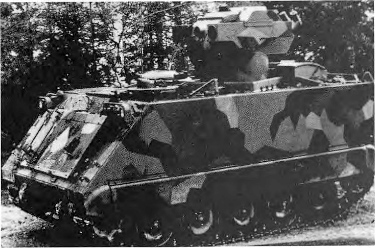
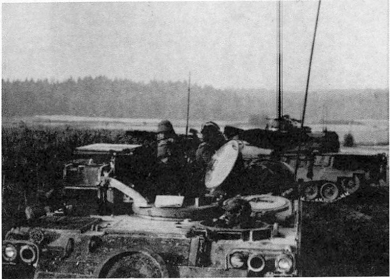
But Cowdray was thinking beyond the desire for CTR to comply with its orders without need of a chasing from the General. He took it for granted that the enemy must now be alert to the threat and that, from this moment onwards, opposition surely would increase. Therefore his action must be pre-empted before it became too strong.
8 Hasty Attacks
Apart from monitoring reports from the combat teams and through the gunner net, (passed to him by the OC [officer commanding] of C Battery whose command carrier was parked near Cowdray’s Lion) there was little as yet that the CO [commanding officer] of the CTR [The Canadian Tank Regiment] battle group could do except urge his subordinates into hasty attacks, aimed at capturing the bridges over the SCHWARZACH. The machinery set in motion by his original orders was getting into top gear. So far there was no need to introduce changes. Yet foremost in his mind was the dire necessity to take those bridges at low cost, bearing in mind that 7 CMBG’s [Canadian Mechanized Brigade Group] principal aim was the capture of the vital ground beyond. In his command Lion, a tactical bound behind OC C Squadron on CLAUDETTE, and listening to the radio nets including B Squadron, he was alert to a risk that one or both of his vanguard commanders might become embroiled in an unprofitable action with enemy outposts.
At first sight it did look as if C Squadron had the better chance of capturing its initial objective. The route to the class 60 bridge at SCHWARZHOFEN (0773) traversed relatively open country and the woods to the south of DENGLARN offered several tracks to assist in the by-passing of defiles. Yet the very obviousness of this approach had, naturally enough, inspired Zaitsev, the Commander of 67th MRR [motor rifle regiment], to give highest priority to the laying of charges, not only under the main class 60 bridge but also the old class 20 in the village centre. Even as McCarthy was calling for fire to be laid by 7 RCHA [Royal Canadian Horse Artillery] on the positions from which the Bobcat had been destroyed, and the troop of Lions in the vanguard was manoeuvring to by-pass the opposition, the enemy BMP [Soviet-designed infantry fighting vehicle], which had caused the damage, was being pulled back at speed to the safety of SCHWARZHOFEN. The three rounds per gun, fire for effect, which erupted among the woods to the south of DENGLARN thus landed in unoccupied territory, although this prompt application of fire-power, as insurance against unnecessary losses, met with Cowdray’s full approval.
Artillery, as Cowdray and every other informed member of 7 CMBG appreciated, was the key to the approach and the assault across the SCHWARZACH. Already LCol [Lieutenant-Colonel] Bob Laird had leap-frogged his four batteries of M109s from their initial locations in the assembly area to the positions he had planned for them in the region of NIEDERMURACH/ ROTTENDORF/ENZELSBERG (0680). They could find useful cover there; be well connected by roads and tracks for ammunition supply; and be well within range of the brigade’s main objectives across its entire frontage, reaching nearly ten kilometres deep into his rear. At the same time it was encouraging to learn that both batteries of 1/94 FA [Field Artillery (US)] would soon be surveyed in and ready with its 203 mm pieces (assisted by locating radar once the sets from the TA [target acquisition] Battery were brought forward into position) to deal as a matter of priority in counter-battery tasks against enemy guns, once they disclosed themselves.
Controlled at vital points and through bottle-necks by the staff, with the help of the military police, the two advanced guards of 7 CMBG — CTR and Vandoos — surged southwards. Where the leading sub-units had hidden, A and A1 echelons moved in, to be followed after nightfall by 7 Svc Bn FRG [Forward Repair Group] to deal quickly with vehicles in need of repair, and by petrol and ammunition points from which the echelons, mainly those belonging to the artillery and armour, could replenish. Spaced out in temporary hides or actually on the move behind the vanguard, lay the residue of the advanced guard in the CTR sector: Lions, infantry APCs [armoured personnel carriers], followed by RHQ [regimental headquarters], the advanced guard HQ [headquarters], then D Squadron’s Lions, the Chimeras of the Anti-armour Squadron, AEVs [armoured engineer vehicles] and AVLBs [armoured vehicle launched bridges]. And finally, still in their original locations waited the main body of 5 PPCLI [Princess Patricia’s Canadian Light Infantry] and 6 RCR [The Royal Canadian Regiment], ready to move. Indeed, when the tale of contact reached LCol Ken Parker, CO of 5 PPCLI his immediate reaction was to assume the worst and take off in his jeep, with his Intelligence Officer and the BC [battery commander] D Battery, towards NIEDERMURACH on the assumption that it must be his Battalion’s turn soon. And intermingled among the all were elements of air defence going about their business to provide protection when called for, scanning for hostile strike aircraft, or (particularly in the case of the Blowpipes) lurking in wait for some errant Fantasian helicopter, searching for information or easy prey.
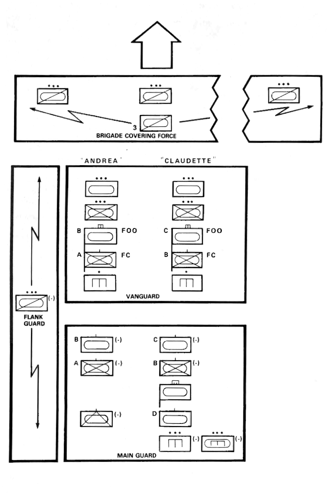
But the attention of every senior officer from corps to division, brigade and battle group was focussed upon the events unfolding before the SCHWARZACH, where the Brigade Recce Squadron was caught between cross fire and cross interest. Attempts to find ways around the flanks of the opposition facing CTR were abortive, except along narrow tracks leading through the woods between BACH and DENGLARN. The slightest move into the open drew fire from enemy light forces, which skilfully denied themselves as targets to the Bobcats’ 30 mm guns and the missiles. On both ANDREA and CLAUDETTE the Bobcat patrol commanders told the respective squadron commanders what they had found, and then either remained in observation or, with Kiowas assistance, searched wider to a flank for a way through to the bridges. By agreement with the CTR, however, Major Legrange committed a Bobcat and the APC (Dozer) of the support troop in an attempt to breach the enemy screen by infiltration through the woods towards ZIEGELHOF (0873). This party set forth on its furtive mission at about the same time as renewed bursts of gunfire from left and right announced the commencement of hasty attacks to dislodge the enemy from ANDREA and CLAUDETTE; and far more exciting it seemed to Legrange, his troop with the Vandoos reported they were in sight of ALTENDORF and that the bridge over the SCHWARZACH appeared to be intact.
A glance at the ground told Bart Watson, as study of the map had indicated, that this was no place for him to be in command. Tersely over the radio he told Greg Weston, A Company Commander:
“This is where you take over.”
And Weston, who would have been astonished had it been otherwise, at once by secure radio from his APC, put a preconceived plan into operation. A warning order, in the prescribed sequence, had Tom Gray’s 1 Troop moving into turret down positions covering the vanguard frontage; and Lt Jack Carter’s 1 Platoon driving up in their APCs to an attack position east of BACH in dead ground south of the stream, ready to make a dash for TRADHOF hamlet (116749) and the edge of the wood beyond. Calling George Hinton, the FOO [forward observation officer], to his side, Weston spent an invaluable three minutes designing a fire plan by direct discussion over the map. Within two minutes Hinton was on the radio to C Battery’s CP [command post] and FSCC [Fire Support Coordination Centre]. He called for concentrations of fire from H-3 on TRADHOF and on a known enemy position where the track entered the wood at 104752; also for tasks on call against FRAUENHÄUSL (114743) and KATHERINENTHAL (108741). Although both tasks were within the simultaneous capacity of C Battery’s two troops, (amounting to nine howitzers) the Battery Commander had to refer the matter to 7 RCHA’s FSCC along side HQ 7 CMBG, because similar support was being requested simultaneously by the Vanguard on CLAUDETTE axis. With quiet satisfaction LCol Laird complied with ease. Both A and D Batteries had but thirty minutes before completed forward re-deployment and were operational in the vicinity of NIEDERMURACH, from whence they could comfortably support the advance well beyond the SCHWARZACH. Nearby they would late be joined by C Battery and later by B Battery, since both these were almost firing at maximum range. In support of CTR battle group’s hasty attacks Laird allocated D Battery in support of CLAUDETTE and A Battery in support of ANDREA axis. Additionally, the group of three 120 mm mortars, which had been attached to B Company, were also ordered to lay and maintain a smoke screen along the edge of the wood facing BACH, while the assault across open ground was in progress.
Weston’s choice of a left flanking attack had been largely influenced by the uncertain nature of the ground on the right flank, where ponds and marsh featured on the map, and by a sense of security for his left. For already reports from the Brigade Recce Patrol, which was examining PRACKENDORF (1275), declared it clear. His plan was simple; to seize the confluence of tracks at FRAUENHÄUSL with 1 Platoon, prior to bringing forward the remainder of his company from the main guard to advance, supported by 1 Troop, upon KATHERINENTHAL and clear ANDREA axis through the woods to MITTERASCHAU.
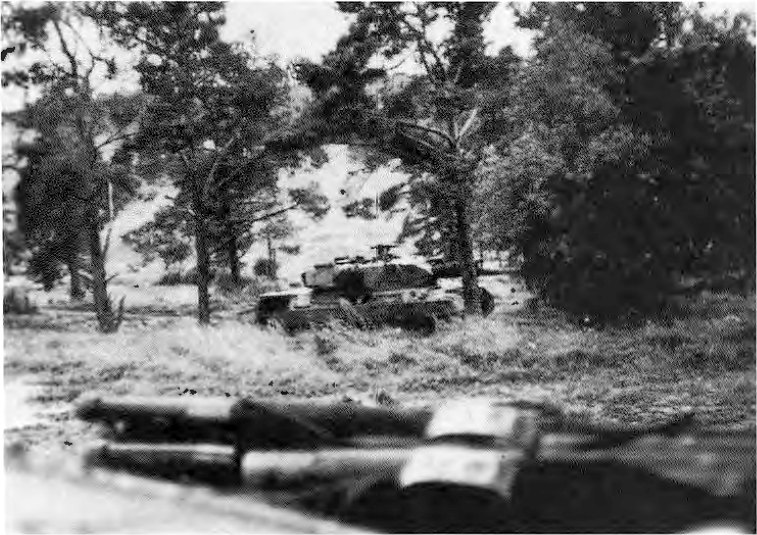
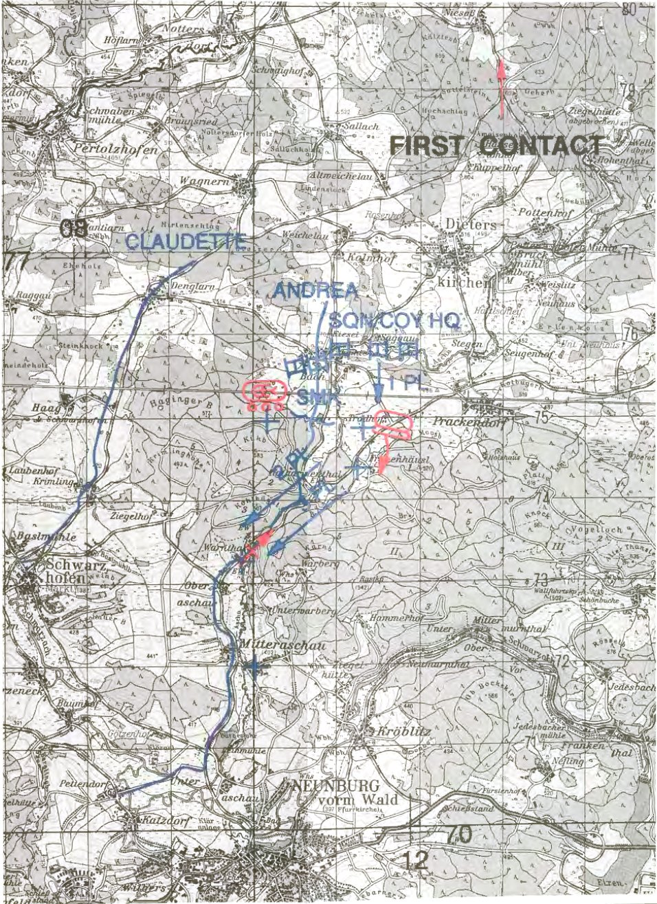
The transmission of this plan was monitored with approval by Cowdray at the same time as a similar plot was being hatched to reach SCHWARZHOFEN along CLAUDETTE. Eagerly he asked Legrange, via the brigade radio net, to send Gray’s Bobcat Patrol close behind the 5 PPCLI attack, with a view to helping with a coup de main against the bridge at PETTENDORF (0870), if the opportunity arose. At the same time he instructed his own Recce Troop to establish, as quickly as possible, a flank guard from PRACKENDORF through the woods to MITTERASCHAU — an order which both B Squadron’s battle captain and A Company’s Second-in-command acknowledged on the regimental net and passed for information to their respective commanders.
As the first rounds of 155 mm whistled overhead and landed with morale boosting crumps on and around their targets; and as smoke began to blossom from 120 mm bombs along the edge of the right woods, Carter led his APCs to the crest line to enable each section commander to have a good look at the way ahead before setting forth. Meanwhile, Hinton was making adjustments of fire where he deemed the concentrations were slightly off target, and Gray was ordering his Lions to hull down positions. He was joined by his squadron commander who was only too anxious to watch developments and take part too in support of the advance.
Mutual planning of tank/infantry co-operation had taken place already according to the well known drill. Two Lions leapt off into the lead at H hour, forging ahead of three carriers which followed in line abreast. The eight hundred yards to the first objective at TRADHOF was covered rapidly, the Lions taking up the chorus of fire from two hundred yards, no sooner than the artillery concentrations ceased. Overtaking the tanks, the APCs, with 30 mm guns shooting, drove right up to their objective without receiving a shot in reply, the infantry dismounting to clear the battered buildings with slick efficiency. Meanwhile a BMP, which had incautiously put in an appearance out of TRADHOF, was detected, lased and knocked out first shot by Gray whose gunner’s expertise was renowned throughout the Regiment; which was why Gray clung on to him! And the Spandrel mounted on a BRDM [Soviet-designed armoured scout car], which had drawn attention to itself earlier on at grid reference 104752, received such a blasting from D Battery that its commander gave up the unequal attempt and felt lucky to escape in one piece.
Within ten minutes the dismounted infantry were stalking through the trees in a covered approach to FRAUENHÄUSL, while their APCs went into hiding and the tanks stood by, waiting to shoot up the villages and woods should the need arise. But the terrifying concentrations of shell fire and the roar of so many fighting vehicles had convinced the Fantasian commander that it was time to go. He was not dug in. He had imposed delay as ordered and had reported events. It was simply bad luck that, while making his escape through KATHARINENTHAL, two of his men were wounded by high explosive from Sgt Rankin’s 120 mm gun as he moved slowly down the road from BACH.
Satisfied that phase one of his plan was complete, Weston called forward the rest of A Company to KATHERINENTHAL where the men dismounted on either side of the road and fanned out into the woods. They had conducted operations such as this often enough during training but this time caution was far more pronounced than in peacetime. Platoon and section commanders kept their voices unusually lower; the men seemed to tiptoe; the rate of advance was unhurried, despite urging over the radio from Weston. This was ambush country, all the more sinister the deeper they explored it. But it was not until they were in sight of WARNTHAL (099733) that their fears were realized. Machine-gun fire hit the leading section of 2 Platoon, killing the master corporal commanding, wounding his signaller and driving the rest to ground. A moment later mortar bombs landed among the trees and the men of both platoons, who were close by the road, took cover, while those at a distance from the fight eased round to a flank.
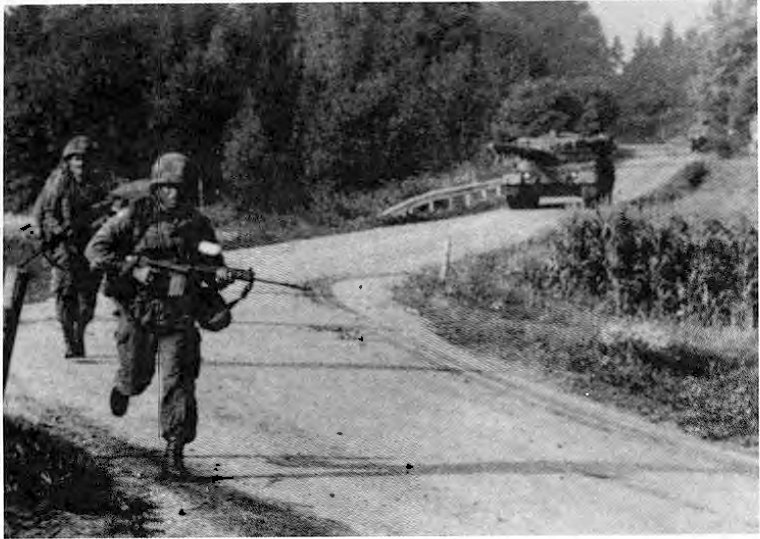
Impatiently Weston waited for reports, telling Hinton to stand by for the prearranged concentrations on WARNTHAL and asking him at the same time if the TA Battery had picked up the enemy mortars for quick counteraction. A report was five minutes coming — the time it took the platoon commander to crawl forward to shout to the men of the pinned down section and find out what little they had seen and heard. By the sound of it there was little barring the way; a tank would probably settle the matter providing sufficient infantry escort was provided to keep down the heads of any brave Fantasian who felt like using his RPG [rocket-propelled grenade launcher] 7 or RPG 18. Already, in fact, a Lion was crawling up the road, its commander, Rankin, inquiring of the platoon commander the situation over the B set. Together they might have settled the matter without additional help, but Weston was in a hurry to breakout towards the bridges and sensed that, small though the opposition apparently was, this was no time for half measures. Besides, he wanted to save his own men’s lives. Asking Hinton to drop three rounds per gun on WARNTHAL, he was co-ordinating the timings of that with the platoon officer’s estimate of readiness to assault in ten minutes. The only doubt in Weston’s mind, in fact, concerned mines. None had been discovered but that meant nothing, even if they were hastily surface laid. As insurance he asked Watson to send forward a Lion with a roller system attached to deal with anything found on the road, which Watson supplied along with another Lion with plough attached, just in case it was needed. Again, no half measures when lives and time were at stake.
The Fantasian outpost commander at WARNTHAL delayed his withdrawal a moment too long. He had hoped to inflict just a little more delay upon the enemy, a few more casualties to slow them down, still more while he made his getaway. But the Americans, as he took them to be, reacted a lot quicker than he expected and the shells which suddenly rained down on the little village pinned him down. Debris was blasted everywhere; fire broke out, its smoke in the light breeze intermittently obscuring the appearance of the Lion so that, even as there came a lull in the shelling, a single 120 mm shot went from end to end through his BMP, reducing it to scrap iron. All he could do was crouch behind a wall and watch the enemy going systematically about his business.
In the woods all around he could hear voices and the occasional shot. The enemy tank, meanwhile, shifted position, fired its machine-gun but came no closer. Presumably its commander had spotted the mines he had laid across the road. He heard the sound of movement in the woods farther round the flank. Soon he would be encircled but still he could see nothing except the tank. Yet now another tank had appeared, with a ponderous wheeled device he recognized as a mine roller. Nearby he saw one of his men bravely rise to his feet with an RPG 18 and take aim. But fire he did not. A crackle of small arms fire from a nearby thicket cut the man down and the roller tank come on, detonating the mines and raking the houses with fire until, suddenly, he could see men running among the buildings, hurling grenades through doors and windows. It was all over. The handful of his rearguard were raising their hands and throwing down their weapons. An example he immediately copied.
Hardly waiting to consolidate its hold upon WARNTHAL, A Coy pressed its advance to the far end of the village and the woodside edge. From there they could see open country and MITTERASCHAU and the high ground of the main objective within striking distance. The Leopards were joining them with Watson to have a look at the ground and reassume command from Weston. In close attendance was a CTR ambulance APC from the Administrative Troop to pick up the wounded (friend and foe alike), to carry out essential first aid before evacuating them to the unit medical station, which was already in BACH, and for tagging and evacuation by 7 Fd Amb Evacuation Platoon. With the same little convoy went the prisoners of war, under escort of infantry, for handing over to the Regimental Provost, to await collection by the Brigade Group Military Police Section. Their war was over, but initial information they could provide was instantly tapped by the CTR’s Intelligence Sergeant. With a rapid and successful examination he established and reported back to G2 [intelligence staff] their unit identification — confirming that it was 79 MRD [motor rifle division] blocking their way. Later the prisoners of war would be brought back to the cage and handed over to the Americans for much more thorough interrogation.
By this time, too, the Fantasian intelligence staff could estimate the threat in its worrying clarity. A plethora of radio intercepts and direction findings had identified the four pronged enemy advance — signatures which indicated at least two strong battle groups on the move. Moreover, there were characteristics gleaned from several uncoded radio transmissions particularly from the Vandoos, which suggested these were the same Canadians who had previously put up such a stiff fight on the BÜHL plateau. It was helpful, if not comforting, to see where they were again. To both the divisional commander, Pikhtin, and Colonel Zaitsev, 67 MRR, the news was fateful in prompting a change of strategy. Zaitsev was told that the bridges over the SCHWARZACH must be blown as soon as the flank guard had been withdrawn and must not fall intact into enemy hands. Meanwhile Colonel Yuri Kotler, commanding 92 MRR, and Major Anatoly Stepanov, CO of 33 Indep Tank Battalion, were ordered to combine an improvised force to strengthen the line of the SCHWARZACH with particular emphasis upon holding the vital ground, which a study of the map suggested, was centred on the threatened triangle SCHWARZHOFEN — LENGFELD — NEUNBURG.
Stepanov, renowned for his thrust and impetuosity, wasted not a moment. Leaving it to his 2ic to co-ordinate the assembly of his tanks with 92 MRR and their move to LENGFELD, he shot off in a BRDM to examine the situation along the SCHWARZACH first hand, dreading what he might find. On the way he took the liberty of directing every straggling tank, gun or party of infantry and engineers he met towards his own destination — a heterogeneous collection of men and machines, mostly belonging to 67 MRR, and including three T80s. Setting up a collecting point on the western outskirts of NEUNBERG at the road junction near LENGFELD Barracks, with instructions to feed his motley crowd, he drove to PETTENDORF, taking with him a truck-load of sappers with explosives he had commandeered. At the bridge a party of engineers was just beginning to lay charges while some ten infantrymen were making a gesture at digging trenches around the hamlet. After expending a few choice threats he had the infantry digging faster and the engineers, supplied with extra explosives, laying charges feverishly. And the young officer, who was appointed bridge commander on the spot, was left in no doubt what would befall him if the demolition charges were not ready within minutes and if the enemy managed to seize the bridge before it was blown. And at that Stepanov had raced on, visiting each of the bridges as far as SCHWARZHOFEN to apply the same treatment.
If the effect of the Fantasian screening force had been important in winning time there is no doubt that Stepanov’s dynamic intervention was decisive. Bridges, which were virtually defenceless before his arrival, almost at once became miniature bastions manned by garrisons with a sense of purpose. The arrival of a T80 in the vicinity of KATZDORF augmented morale enormously when its presence became known to the young officer at PETTENDORF. Pikhtin would have been delighted if he had been aware of the revolution which had taken place, but might have been a lot more pleased if a similar spirit of urgency had invigorated the garrison at ALTENDORF.
9 Coup de Main
The Canadian drive for the bridges resumed as soon as they had flushed out or eliminated the wilting Fantasian screen. C Squadron’s team direct against SCHWARZHOFEN and which, by the nature of the open ground, remained under armoured command throughout, made rapid progress once the defile through the woods south of DENGLARN had been seized. But it was disappointing to see the main road bridge on the town’s outskirts erupt in flame and smoke before they were within striking distance, and simultaneously to hear an explosion at the town centre which told of the old bridge’s demolition. So Majors Angus McCarthy and Fred Brown had to settle for holding on local vantage points and beginning the investigation of ways and means of crossing the river against strengthening opposition. By the look of it, as McCarthy reported to Cowdray within minutes of having reached a good observation on the ASCHAUR BERG (079725), this would be a job requiring a deliberate assault. Moreover, bursts of machine-gun fire from across the river and loud bangs down by BAUMHOF and SCHWARZENECK (0771) advertised an active defence and the demolition of bridges there, neither of which were visible from where he lay hidden.
The Vandoos were much luckier at ALTENDORF. Taking a chance and benefitting by a mainly covered approach, which carried them into the village’s outskirts, a patrol of Bobcats, with the vanguard hard on its heels, made a dart for the bridge and found it still intact. Heart in mouth, the commander of the leading Bobcat sped across to the far bank, shooting up several gaping Fantasians standing around in the open while the patrol commander loosed off against another enemy party, which was busy completing demolition arrangements beneath the bridge. It was a spectacular coup de main in the finest spirit of boldness, made possible by the tardy arrival of and the explosives to the site. Within minutes the platoon of Vandoos, which drove flat out across the bridge to complete a foothold among the buildings and woods beyond, had taken control of the immediate approaches. Unopposed, the sapper detachment was able to consolidate the situation by throwing the charges they found into the water. Therefore, when the main Fantasian bridgehead party arrived, intent on preventing an enemy crossing, it became involved instead in a grim fight to contain the Vandoos within their initial lodgement, their resistance stiffened by the intervention of a T80 from the direction of ZANGENSTEIN and a steadily mounting volume of artillery and mortar fire. Thrilled as they were at their triumph, the Vandoos quickly drew the conclusion that, against an enemy who was being reinforced, they would have a stiff fight on their hands in the densely wooded slopes looming up ahead.
Boldness was the chief virtue of CTR’s [The Canadian Tank Regiment] attempt on ANDREA to capture the bridge at PETTENDORF (0860) by coup de main. When Lt Gray studied the prospects of advancing down the long white track crossing the bare water meadows to the bridge site, and estimated the threat posed by anything located on the ridge beyond, among the barracks and from the outskirts of NEUNBURG, he felt compelled to tell Bart Watson that the chances of getting away with it were slim. But Watson had his orders and a plan which he had discussed with Hinton and Gray before hand. If, they had cogitated, the ridge line was so dominant, they should screen it off with artillery smoke while the Lions, followed at once by a platoon of PPCLI [Princess Patricia’s Canadian Light Infantry] and the sappers, rushed the bridge. To Watson, when he too saw the approaches, the attempt looked dodgy but worthwhile. Success now, even at the price of a troop and a half platoon of APCs [armoured personnel carriers], might well save immense loss during a later deliberate assault with all its ramifications. Capture this bridge at once and extend the lodgement along the bank towards SCHWARZHOFEN, and the way would be open to the vital ground at LENGFELD that evening. Brusquely Watson ordered the original plan to be put into operation at once. In aid he called up two Lion troops to give support and asked Hinton to shell PETTENDORF when Gray reported he was about to move.
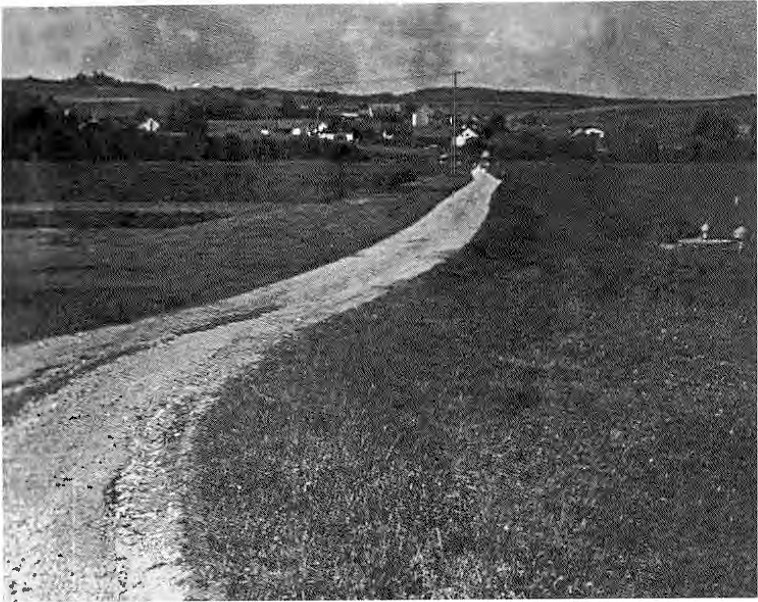
Gray decided to attack two tanks up, while Sgt Rankin lay back to shoot anything emerging from PETTENDORF. He elected to move in person along the road with the other Lion in line abreast to his right. All three tanks broke cover when the gunner smoke screening the barracks seemed thick enough and as the first rounds of 155 mm shell burst on PETTENDORF. At full throttle they charged, Gray unintentionally taking the lead when his companion was delayed in crossing the narrow stream midway to the river. A hundred metres behind came the APCs, their 30 mm guns peppering the tree line flanking the bridge site. Gray was half way there when the bridge blew up, but so excited by now that he made no attempt to veer away. He kept going, barely conscious of the enemy fire he was attracting, or that Sgt Rankin’s tank was out of action after being struck by a Spandrel, fired from the crest above PETTENDORF. Moreover he gained a measure of safety by moving into the cover provided by the river bank trees, where he gambled on finding the river was fordable where the banks were open on both sides.
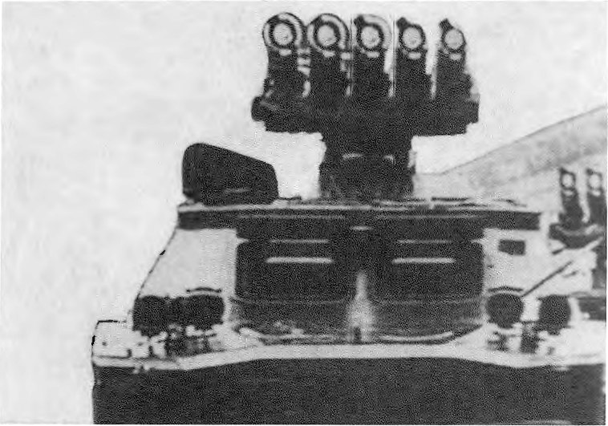
No such luck! The river looked deep and quite obviously the opposite bank was too steep to allow a Lion to get out of the water. A hit from some kind of hostile weapon (which did not penetrate) shook his resolve. The sight of the carriers behind coming under shellfire convinced him that nothing more could be done. Calling over the radio that there was no way across and that he was withdrawing, Gray nevertheless continued to engage the enemy from his exposed position while his other tank and the APCs put down clutches of smoke grenades and turned to make their escape.
Watson was very disappointed but in no position to argue. He had personally dealt with the Spandrel launcher which had damaged Rankin’s tank but could not see what was shooting at Gray from KATZDORF. So he called on Hinton to maintain the smoke screen on the barracks and asked for still more smoke in front of NEUNBURG. Then he saw Gray’s Leopard flash, shudder and emit an ominous cloud of smoke. The automatic vapour fire extinguishers did their work instantaneously, but Gray’s driver had died when the 125 mm shot penetrated and the rest of the crew were wounded, the gunner seriously. As the survivors bailed out and began to crawl to safety, everybody on the spot strove to extricate the men and vehicles exposed in the open. Local smoke came down in clouds from tanks and fast retreating APCs. Hinton, without being asked, was dropping 155 mm smoke on KATZDORF. And at Watson’s order, the ambulance APC was rushing up to rescue Gray and his two crewmen as they crawled through the long grass.
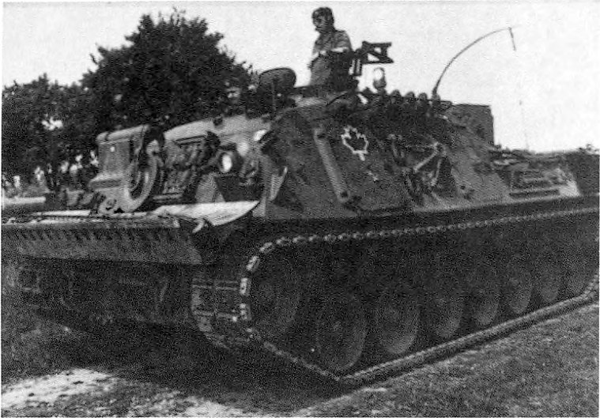
There was one bonus from the debacle. Before Gray was shipped back with his crew to the unit medical station, he was able to give Watson useful information about the river: the difficult profile of the banks which would probably prevent a vehicle getting out of the water on the other side; the fairly sluggish current which might not hamper boating; and a guess at depth as over 1.2 metres, meaning Lions would require preparation for deeper wading. Above all a width of less than twenty metres, permitted spanning by AVLB [armoured vehicle launched bridge].
And with that Watson had to be content for the time being as the battle entered its next phase.
10 Deliberate Attack — Planning
The Fantasian reaction to the abrupt appearance of a strong Canadian force along the SCHWARZACH and the loss of the bridge at ALTENDORF was both swift and predictable. 67 MRR [motor rifle regiment] was ordered to seal off and destroy the ALTENDORF bridgehead at once (thus deflecting that regiment from its main purpose and, to some extent, conceding already the Canadian aim); 33 Indep Tank Battalion and 1/92 MRR were told to expedite their move to NEUNBURG, LENGFELD and SCHWARZHOFEN and make perfectly sure there would be no further incursions there. At the same time urgent calls went out for air support and for every artillery unit within range. FOOs [forward observation officers] were sent to obtain comprehensive observation across the threatened ground and harass the enemy with every gun and mortar which could be brought to bear. By 1900 hours, Pikhtin believed a reasonably strong barrier would be established from NEUNBERG to ALTENDORF, with the eager Stepanov, CO [commanding officer] of 33 Indep Tank Battalion, in command of the vital sector between SCHWARZHOFEN and NEUNBURG. By last light at 2100 hours, he reckoned, the position would be secure. Come the dawn the ALTENDORF bridgehead would be eliminated. Then he might even contemplate counter-attacking this most unwelcome diversion, if the Army Commander agreed. With that offensive action in mind he took the step of telling 52 Tank Regiment to detach a battalion of T80s to HOFENSTETTEN (0168) from whence it could strike readily at ALTENDORF if required. Aggressive though Pikhtin’s intentions were, the fact remained that 79 MRD [motor rifle division] had momentarily lost the initiative and been thrown back on the defensive.
7 CMBG’s Initiative and Plan
To a considerable extent Brigadier General Knutson and, through his staff, the units under command were apprised of the Fantasian reactions. A US RPV [remotely piloted vehicle] had detected 33 Indep Tank Battalion almost as soon as it broke cover. A few minutes later it had found the reinforced battalion from 92 MRR starting its approach march northwards. Meanwhile a gradual increase in shelling of the approaches to the river announced the improvised Fantasian artillery programme. As yet it was merely a nuisance; in due course almost a welcome manifestation to the quiet men of the 7 RCHA’s [Royal Canadian Horse Artillery] TA [target acquisition] Battery which was already deploying its counter mortar radar and sound ranging equipment. Soon the radar would be passing back information of hostile mortars to the CP [command post]. In about three hours, all being well, sound ranging would be ready to join with US Army locating radar in locating artillery targets for the Canadian 155 mm howitzers and the 203 mm pieces of 1/94 USA Artillery Regiment, tasked for the vital counter-battery role. In the meantime the peanut RPV programmed by 7 RCHA’s FSCC [Fire Support Coordination Centre] in consultation with G2 [intelligence staff], would fill the time gap in searching for enemy gun positions as well as the approaching reinforcements. The never-ending hunt for intelligence was being stepped up by both sides as the gunners entered into a classic duel which, with mounting fury, would provide the percussion to the orchestration of the impending grapple, concluded by the arbitors of assault and mobility.
Winning the artillery battle was vital to Knutson’s original plan. Initial failure to cross the river on the run, the loss of surprise and the report of difficult terrain and significant opposition, convinced him that a renewed hasty attack would probably fail and prove costly. The deliberate crossing and breaching of a water obstacle, he had have preferred to avoid, was inevitable. He remained, however, resolved to stick to his original intention by making the main effort in CTR’s [The Canadian Tank Regiment] sector. There had been a temptation to switch to the Vandoo front and exploit the bridgehead at ALTENDORF, but a report on the stiffening enemy resistance in difficult terrain, as seen by him from a Kiowa and described by the CO of the Vandoos, was dissuasive. He would comply with doctrine and military common sense by letting the ALTENDORF situation act as the mandatory diversion to deceive Fantasians as to where the main blow would fall.
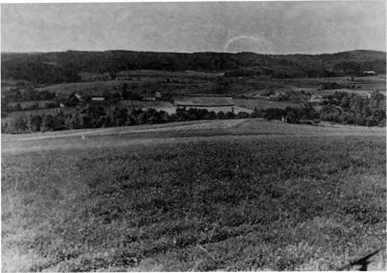
“Keep up the pressure and use every trick in the game to keep them thinking your’s is the big one,” Knutson had told the Vandoos. “Bluff as only you know how. But keep the stakes low. I’ll need you for something else later, maybe. Like putting in a real push when things start cracking open on your left. Think about that.”
The brigade commander was extremely attentive to Cowdray when at 1800 hours he landed in the Kiowa at RHQ [regimental headquarters] in the CTR’s new location at 2 ZIEGELHOF (0873). Two fleeting examinations from tree top height (the pilot, who had lost a few friends the past few days, paranoic over the missile peril) of the CTR sector had given him an impression, but only an impression, of the CTR’s sector. Cowdray was awaiting him, having returned but five minutes ago in his Lion from an almost leisurely study of the ground from a magnificent observation post by the edge of the wood at 083721. From there he had scanned practically the entire panorama of his battle group’s frontage, everything in fact, except for the strip down by the river at PETTENDORF. What he had to say further convinced Knutson that it was within CTR’s boundaries that the deliberate assault must be made. “All the bridges have been blown,” said Cowdray, “and the river is a tank obstacle along its length, though you can’t see much of it from our side through all those trees growing up out of the banks. Dead thick they are in most places. I’ve not been to have a look at PETTENDORF yet, but from what Bart Watson says, that’s a bastard down there overlooked with bare approach and covered by fire. He’s lost two tanks already and is down to three troops now.”
Knutson nodded. He knew it from monitoring of B Squadron’s net.
“Its no better at SCHWARZHOFEN,” went on Cowdray. “Wide open approaches with no cover. Shelling like crazy. Thick growth down by the water. Not on.” He paused and pointed at the map. “That’s where I’d go, sir. Right there between BAUMHOF and SCHWARZENECK. OK, the trees grow up all along the river like everywhere else. But those woods on our side lead right down to the road and its not far from there to the water’s edge. Unless, sir, you feel like a bit of a gamble and have a grab with heliborne troops; though I would say that was chancing it. No saying what’s hidden among those trees. Wouldn’t take many SA 7s or the like to ... eh?”
“Forget the helicopters, Brian,” rejoined Knutson. “Anyway they’re not to be had, except our own Kiowas and there’s not enough of them and they won’t be keen. But OK to your first scheme. That’s for me too. But you’re not the one to do it. You know that. As of now the CTR becomes Force in Place and the Patricias move in as Bridgehead Force. I’m sticking to my plan, Brian. So you wait for Ken Parker. He’s on his way down with his reconnaissance group right now with Andre Radisson. Your D Squadron, of course, will work with the Patricias as usual.”
Cowdray had been expecting it. He was disappointed but knew it was according to the book and that, with the force at his disposal, he might not be able to cope with the complexities of an obstacle crossing, probably made by night, against opposition.
“Right, sir. Two questions, if I may ... By day or night? And aren’t we getting all a bit cramped around here when the Patricias move in? It’ll be two battle groups in five map squares, give or take.”
“Coming to that,” said Knutson. “We sure are presenting a mighty tempting target to the enemy. There’s no indication yet that he’ll go nuclear, but you may be interested to hear that, up north after the British and Germans put in their first counterstrokes last night, they’ve used chemical for the first time. I hope I don’t have to remind you that, according to what we’ve always been told, that means the Fantasians can be on the verge of going nuclear. Keep it to yourself for the moment, but pass it around to the guys to be on the alert and tighten up on NBC [nuclear, biological and chemical] precautions; IDPALOW still, however. We must thin out a bit right here. This is what I want. It’s to do with bamboozling the Fantasians a bit too. Have your left flank make a demonstration threatening NEUNBERG, like as if they’re trying to get round along the river to the northward. But tell them not to get too deeply stuck in because you will need them later tomorrow when the breakout begins. Keep mighty quiet round here and send Angus McCarthy’s squadron over to the Vandoos’, somewhere the otherside of RAGGAU (0776) there: it’ll all help spoof the enemy that it’s ALTENDORF we’re really after. Dig in round here and lie low, but be ready to help the Patricias all you can when the time comes. I’ll leave Henry Calmat’s Anti-armour Squadron with you (less the troop of TD [tank destroyer] with the Vandoos, of course) and give him back his TUA [TOW Under Armour] from the Recce Squadron too. Incidentally the latter is to go into brigade reserve now. Oh! One final thing. I expect the Patricias will want to know a lot more about what its like round about BAUMHOF. So you’d better have Fred Brown’s Company over there on the right get ready to send out a patrol as soon as possible, to have a look in plenty of time before it gets dark, and help Ken Parker finalize his plan.”
“I heard that, sir,” said a voice from the doorway to the command post.
“You made it quick, Ken,” replied Knutson to the Patricia’s CO. “OK, come here and I’ll fill you in. This is what I want you to do.”
Briefly the brigade commander reiterated what he had already told Cowdray before giving instructions to Parker; clear guidance in outline (but in the prescribed, formal order) which were noted by the G3 [operations staff] (Ops) who accompanied Knutson, as well as by both COs. Instructions which, as soon as Knutson flew back to his command post, now in its new location near PERTOLZHOFEN (0778), would be confirmed to all concerned over the Brigade command net. The Brigade Signal Squadron had kept pace with the advance by the pre-planned positioning of radio relays to maintain signal traffic the length and breadth of the formation’s greatly expanded sector.
With D Squadron CTR, the Engineer Field Troop and the Armoured Engineer Troop (all presently under command CTR) were now about to be transferred to Patricia’s command. With D Battery 7 RCHA in direct support and the rest of the artillery in support, 5 PPCLI [Princess Patricia’s Canadian Light Infantry] Battle Gp was to pass through CTR battle group and seize a bridgehead over the SCHWARZACH, as the firm base for CTR’s subsequent break out. It was pointed out by Knutson that the bridgehead should encompass the expanse of open ground beyond BAUMHOF and SCHWARZENECK, with exploitation inclusive the woods. Yet, as much as possible, avoid direct observation from the high ground surmounted by LENGFELD Barracks.
“With the two companies you presently have under command,” said Knutson, “plus your own combat support company, the sappers and D Squadron, and with CTR, as force in place, giving support, that should do. In the time available I do not expect you to attack until after last light. But I do insist that you complete your task and establish crossings over the river soon enough to enable CTR to move into the bridgehead with ample time to break out at first light; earlier if possible.”
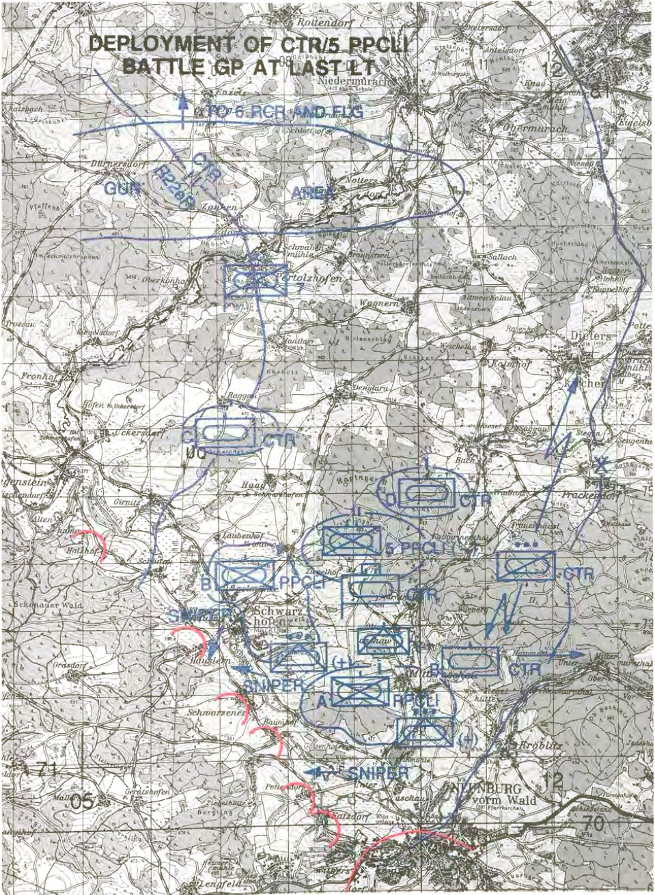
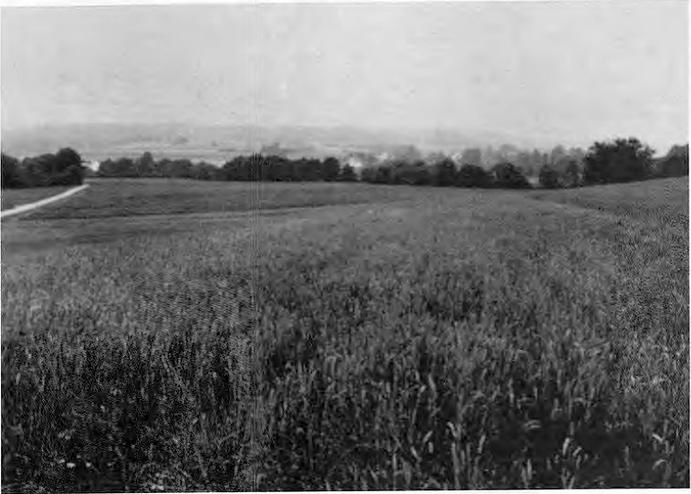
Battle Group Planning
When Knutson departed, Parker and Cowdray got down to immediate business before the former went forward with the other members of his reconnaissance group (his IO [intelligence officer], the OCs [officers commanding] of D Squadron and BC [battery commander] D Battery) to study the ground and make a plan. Parker accepted, on the evidence, that the probable assault would be centred on BAUMHOF, but he wanted to learn a lot more about the approaches before making a final choice of crossing place. Cowdray undertook to order a patrol by B Company which would seek answers to key questions posed by Parker; the state of the routes down to the river, the configuration of the river itself and the best possible crossing places for either wading, boating or even driving straight across in APCs [armoured personnel carriers] and in particular bridging sites. With AVLB [armoured vehicle launched bridge] in mind, therefore, Cowdray decided to send a member of the armoured engineers with the patrol. From Cowdray, Parker heard the location of the CTR’s elements, a recommendation of good observations posts, information about those routes already discovered and the extent and nature of enemy opposition so far encountered. They agreed that the present location of RHQ CTR would serve as their joint headquarters for the impending passage of lines, the co-ordination of the subsequent co-operation in support of each other and as the traffic control centre during the crossing itself and its aftermath. The respective 2ics would play the leading roles in those centres, freeing the COs to concentrate upon the battle. At the same time Parker began imposing his stamp, the infantry imprint, upon the operation, to told Cowdray that the sniper section from his combat support company was on its way and its skilled marksmen would hide as close as possible to the enemy, partly with a view to disturb Fantasian composure but also to acquire as much additional information as possible about hidden enemy positions along the river line. With the foundations laid, each CO went his way; Parker with his Reconnaissance Group to the chosen observation post; Cowdray to put in train the redeployment on his battle group to comply with direct support to the Patricias to complement Parker’s plan when it was announced. Meanwhile the terrain to the north, as well as that in enemy territory to the south, was all in movement as actors in the drama to come entered the wings off stage.
Build Up of the Bridgehead Force
No sooner had the 2ic received orders to lead 5 PPCLI battle group to its selected assembly area among the profusely tracked woods to the north of ZIEGELHOF, than it was on the move, with priority granted it by HQ [headquarters] 7 CMBG [Canadian Mechanized Brigade Group], along CLAUDETTE. There it would meet up with D Squadron and the sappers, who were already in that vicinity to prepare for the night river crossing, they had been warned to expect. There, too, 7 CER’s [Combat Engineer Regiment] support squadron would deliver the assault boats and such stores anticipated by the chief engineer for the task in hand. Already the sniper section had departed, along with members of the CO’s orders group, C and D Company Commanders, the fire controllers and the OC of the anti-armour platoon.
On the way, the Patricias passed through 7 RCHA’s deployment area, hearing the occasional shoot in progress and being encouraged by the excellent performance of a Gepard, located for point defence of both the guns and the route traffic control post outside NIEDERMURACH, in shooting down an aggressive fighter bomber and driving off its companion, in company with other Gepards nearby. The air defence battery had almost completed its re-deployment, its point missile troop Blowpipes having mainly moved ahead with the leading combat teams; its gun troop’s Gepards chiefly concerned with protection of the gun area and defiles to within about five thousand metres of the forward edge of the battlefield; and the air defence/antitank system (ADATS) of the area missile troop extending their reach beyond the forward edge of the battle area, thus protecting the entire 7 CMBG area (in conjunction with several US Army air defence equipments already in location) right back to the original assembly area, where virtually only 6 RCR [The Royal Canadian Regiment] and the Forward Replenishment Group remained in hiding. But already, at the behest of G4 [logistics staff], trucks of 7 Svc Bn were moving in small packets, constantly on the alert against air attack, filtering to RCHA’s ammunition point and also to troop positions, building up stocks against the expenditure of the extensive firing which must soon take place.
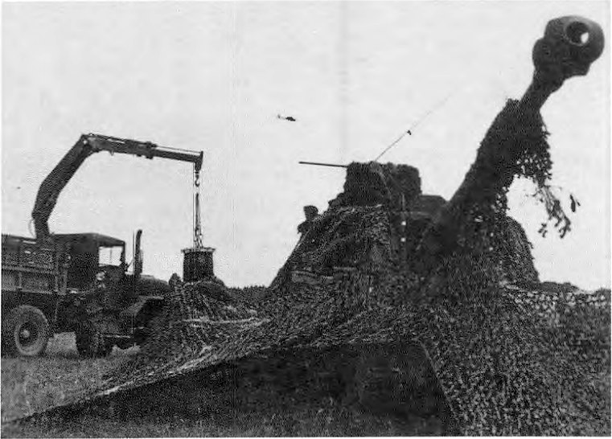
The BC of the Composite AD [air defence] Bty at the FSCC was extremely busy, coping not only with control of the brigade air defence facilities in conjunction with the US overall command, within the 51st US Armoured Division’s boundaries, but also involved with 7 CMBG’s G2 and G3 in the planning and implementation of information gathering and with an air contact team for strikes at priority targets. And the targets which most exercised the Americans at that moment were the approaching elements of 92 MRR and 33 Indep Tank Battalion. These were top of the list for strikes by A 10, Thunderbolts, which had just been made available from corps resources.
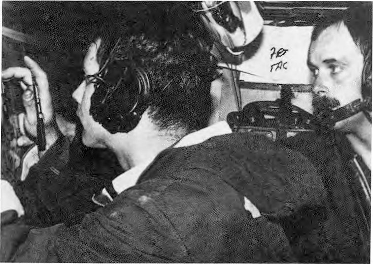
The enemy reinforcements and their route, tracked by an RPV and occasionally confirmed by the EW [electronic warfare] Troop’s intercept and direction finding of careless radio transmissions, were of great interest. If they arrived unchecked and in strength to the south of the SCHWARZACH, they might make 7 CMBG’s task so much more difficult and costly, perhaps thwarting it altogether. It was as yet another means of containing this threat that multiple rocket launchers were given priority of movement down ANDREA to a position south of BACH, from whence they could harass and delay the advancing enemy tanks as well as joining in the counter bombardment programme with scatterable minelets.
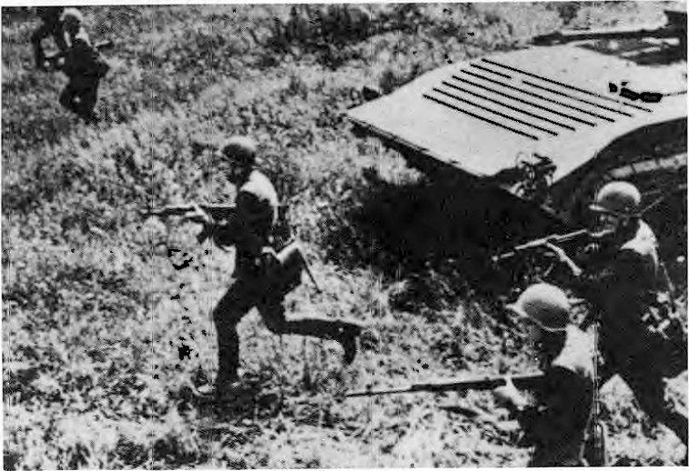
To some extent also, and in accordance with the brigade commander’s deliberate diversion and dispersal plan, adjustments were taking place at the front. Without disclosing themselves, the Anti-armour Squadron troops were occupying positions which overlooked the SCHWARZACH valley. One Chimera tank destroyer troop was in the vicinity of Point 417 (093714) overlooking NEUNBURG and PETTENDORF, a second on the high ground to the east of SCHWARZHOFEN from whence it could shoot into 5 PPCLI’s prospective assault sector as well as, to some extent, bring under fire the ground to the west in the region of SCHONAU (0573); the third in reserve but tasked particularly to reinforce the right flank troop when the Patricias attacked. Meanwhile the TUA troop was split, Major Calmat allocating four detachments on the right flank and three on the left, standing by to pick off enemy tanks sniping from the far crest, or trying to interfere with the assault. In all honesty, Calmat had more confidence in the tank killing capability of his Chimeras’ 120 mm guns than in the TOWs [TOW missiles]. He committed TUA only at this stage because they could engage while almost fully defiladed. The Chimeras, which could not, he preferred to reserve as a surprise package for the main battle.
As the Chimeras took their places, nearby infantry were either digging in at the front or remaining under armour in concealed APCs in the rear. Meanwhile the Lions of B Squadron were pulling back behind MITTERASCHAU, ready to demonstrate with a platoon of Patricias in the direction of MITTERMURNTHAL (1272). Simultaneously, C Squadron’s Lions retired through DENGLARN to RAGGAU with a flourish the watching Fantasians could hardly fail to notice. While CTR A1 echelon vehicles came forward to top up the tanks with fuel and what little ammunition they needed, as the commander of B Squadron’s ARV [armoured recovery vehicle] looked speculatively from a distance at Sgt Rankin’s abandoned Leopard and tried to work out how best to recover it when night fell.
The Patrol
With barely two hours daylight remaining, the thoughts of a majority of those laying plans were fixed upon the forthcoming night. It would be no exaggeration however, to say that Sgt Pete Jones, the AVLB commander detailed to accompany the three man patrol from B Company 5 PPCLI, would have much preferred it was dark already. For the steep slope down to the road looked forbiddingly bare in broad daylight and the open fields beyond too perilously exposed. But the young lieutenant leading the patrol was no newcomer to this game. In fact he had been chosen for the job for his expertise; a celebrity status which had been prestigious in peacetime exercises but which had begun to pall a trifle at war. His route carried them stealthily alert through trees, where Fantasians might easily lurk, to where the roadside at 082717 adjoined the river. Darting across the road and back on the instant, while the infantrymen prepared to give covering fire, Jones instantly saw this was no place for any sort of crossing; the ground dropped sharply, six metres or more to the water level below.
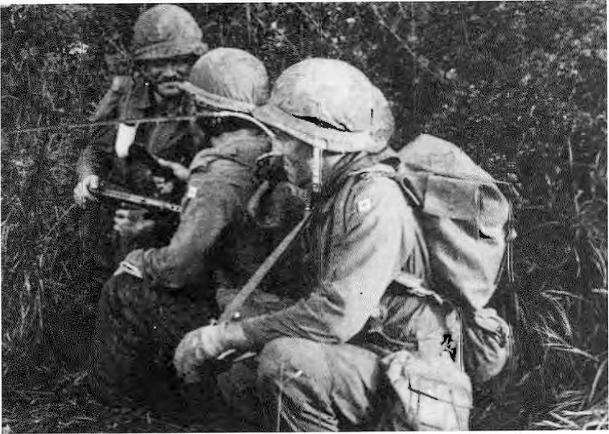
Turning left and searching cautiously eastwards, the patrol leader made use of cover from trees, longish grass and folds in the meadow to get closer to BAUMHOF than he had anticipated. Confidence grew when nothing happened; they actually crawled to within about one hundred metres of where the bridge had stood, but which now was a tangle of broken timber. It was all so quiet, so quiet that one of the infantrymen thought he could hear rushing water. “Rapids,” he whispered. “Maybe,” said the officer, “but no way of getting closer to find out.”
“Right on,” Sgt Jones murmured with relief, as they crept back the way they had come, looking for a better viewing place where they could estimate the river’s width and the nature of its closest approaches and bank. But that was impossible without taking suicidal risks or using more time than was permissible. Their CO wanted information and wanted it quickly. On the other hand, he had insisted the enemy should remain in ignorance of any Canadian intent on this sector: “So don’t get seen and don’t get caught and if you get caught keep shut,” had been the order. The best they could do was go back to the road and look around from where it was raised up a bit above the field. From there they could see gaps among the tree barrier, wide enough to permit the launching of assault boats from one side to the other. No doubt, correctly guessed the patrol leader, an accurate estimate of the width would be obtained from other sources — maps, photos, TV pictures or civilians.
He was cogitating about crawling closer for a better look, when the machine-gun opened up on them; it sounded mighty close with a clatter of bullets overhead from the direction of BAUMHOF. That changed a few minds as they cringed in cover. The patrol leader decided to call it a day, first radioing back a report to ensure that what they had learnt reached CO 5 PPCLI; then creeping away to start the next task, the identification of a route, covered from view if possible.
There was, it seemed to him, one practicable approach to the only feasible crossing place close by the demolished BAUMHOF bridge. It proved easy. The woodland track marked on the map not only existed, it was wide and solid enough to carry the largest of vehicles, including the bridge-layer with bridge mounted. Sgt Jones commented on how steep it was in places; but it would be driving downhill which, even in the dark, “could be feasible with care.” They climbed back to the top, checked in with the usual recognition drill through a vigilant B Company section, and were whisked off in a waiting jeep to RHQ for debriefing.
11 Deliberate Attack — Synchronisation
By the time LCol [Lieutenant-Colonel] Ken Parker and his reconnaissance group had completed their examination of the area to be assaulted, from the observation post which Major Fred Brown of B Company 5 PPCLI [Princess Patricia’s Canadian Light Infantry] had discovered, they were crystal clear about the way to tackle the crossing of the SCHWARZACH and the extent of the bridgehead that 5 PPCLI battle group must seize. They had been extraordinarily careful not to attract attention to themselves, partly because they did not want to advertise the nearby presence of Capt Bill Cramer, (C Battery’s FOO [forward observation officer], in his hide at the edge of the wood), but largely because the less the enemy saw of reconnaissance parties the better, in the interest of the deception plan. With that in mind, Parker had already decided to place a virtual embargo on detailed reconnaissance by his sub-units, even if enough time became available for that purpose.
In Parker’s estimate of the ground there was no ideal crossing place. On neither side of SCHWARZHOFEN were there suitable approaches and at BAUMHOF, where covered approaches, on the face of it, looked good, the hamlet was a bottleneck. Moreover it seemed likely that LENGFELD Barracks overlooked the only reasonable crossing place at the end of the white track; a deduction in due course partially confirmed by the patrol’s radioed report. Nevertheless, concluded Parker, with the agreement of Major Chris Hapgood, BC [battery commander] of D Battery, and Andre Radisson, of D Squadron, BAUMHOF was the best place, subject to sapper concurrence on the practicability of the approaches and site. To satisfy the Brigade Commander and CTR [The Canadian Tank Regiment] battle group, the bridgehead would have to take in the golden wheat fields beyond BAUMHOF and SCHWARZENECK and include the cross road at 059715, coupled with clearing the woods to gain access to GERATSHOFEN (0570), and beyond if possible. Initially, however, Parker resisted any temptation to expand the bridgehead towards PETTENDORF since he anticipated strong opposition from there. On the other hand, he recognised the vital importance of first securing the line of departure (which had to be the NEUNBURG — SCHWARZHOFEN road) by the CTR Force in Place, and placed emphasis on the need to hold the line of the river/wood in the vicinity of 084710, a position which one of his snipers would occupy within the next hour or so.
Parker was back at the joint battle group headquarters shortly after 1915 hours with an outline plan in mind, one upon which he went firm when the patrol’s report reached him, and after he had discussed the matter with Cowdray. The CO [commanding officer] of CTR battle group was faced by two vital tasks.
First, as commander of the Force in Place, he had to control all movement up to the line of departure or, better still, the obstacle: also to provide direct and indirect fire support of the Bridgehead Force for so long as was deemed workable. There was a short debate between the two commanding officers as to the precise dividing line of responsibility for movement control. The final solution came down in favour of making it the river line. In the ambient light of the half moon it would be easier for watchers in the supporting Force in Place to track progress of the assault across the river line than across the road. And because Cowdray would have some of his own infantry down by the road, out at the river bank at 084710 and among the buildings of SCHWARZHOFEN, he preferred there should be no indistinct boundaries of responsibility leading to accidents in the dark.
Second, as commander of the Pursuit Force, Cowdray had to plan its launching through the Bridgehead Force when the right moment arrived. Working on the assumption that 5 PPCLI managed to seize all its objectives before 0500 hours, first light next day, 12 August, he intended to pass the right flank combat team (C Squadron/B Company) through GERATSHOFEN to LENGFELD and PISSAU (0668), with a view to out-flanking NEUNBURG via PENTING (0866) and beyond. Very properly, he tended to set objectives beyond the attainable. When the time was ripe, the B Squadron/A Company combat team would be called forward to maintain the momentum of the success he believed would be his. Indirect support would be provided by the artillery in accordance with his original orders which, after all, were merely being endorsed by an on-going operation. Direct support, above all, the attack upon such enemy armour as might occupy the LENGFELD barracks ridge, would be undertaken by the Anti-armour Squadron from its present positions. That squadron would not shift to the far side of the river, to provide flank protection, until the advance had got beyond LENGFELD. By which time, no doubt, 51st US Armored Division would be entering the expanding bridgehead. But the BAUMHOF crossing place worried him. It was much too confined and too well overlooked from the barracks. He asked for a second bridge to be laid at SCHWARZENECK, as soon as the enemy had been driven back and for the sappers to concentrate on the development of this route instead of the BAUMHOF one; a request supported by the OC [officer commanding] Field Squadron who had arrived at the joint HQ [headquarters] to supervise the engineer effort. Effort which, by no means incidentally, would also contribute to the passage of 51st US Armored Division through the Canadian lines once room had been won in the bridgehead.
When Cowdray joined Parker for the latter’s orders group, it bothered him that so many key officers were present in a barn that was almost in sight of enemy artillery observers. Warnings of danger came from hostile artillery fire which occasionally struck road and track intersections and ZIEGELHOF was close by a track intersection. The spectacular shooting down of one of a pair of inquisitive enemy helicopters by a Blowpipe added to his anxiety. What if the other helicopter had seen them standing about in admiration of the scene? And how much were the enemy gleaning from their RPVs [remotely piloted vehicles] which must surely be searching the ground in the same way as the friendly RPVs were hunting Fantasian targets? Both commanding officers were present in that building, along with nearly everybody in higher authority with the exception of CTR staff and DCO [deputy commanding officer] 5 PPCLI. They were:
To Parker’s credit he wasted not a moment. There were none to spare. He had set H hour for 2200 hours. It was now 2000 hours and his sub-units had yet to receive their orders and move to the attack position in darkness across ground not yet reconnoitred.
The mission was succinct. 5 PPCLI battle group would seize and hold a bridgehead within the boundaries of the trace already issued by the operations staff.
The execution would be in two phases: Phase 1, C Coy was to establish a bridgehead at BAUMHOF and expand it to the cross roads at 074712 and to SCHWARZENECK and HAUSLERN (0672); Phase 2, D Coy was to pass through C Coy to seize the cross roads at 059715 and the exits from the woods to the north of GERATSHOFEN. CTR battle group would provide direct and indirect support from its present locations. D Squadron CTR, under command, was tasked to cross the river by bridge not later than the conclusion of Phase 1. 7 RCHA was to fire concentrations on BAUMHOF, SCHWARZENECK and LENGFELD Barracks during Phase 1 (Parker having discarded a silent attack as impractical) in support of Phase 2 or as defensive fire in event of an enemy counter-attack. D Battery was in direct support throughout. Mortar platoon 5 PPCLI was to lay smoke along the false crest line, centred at 077708 during Phase 1; then be prepared to support the attack on HAUSLERN and the cross roads at 059715. Engineers were to crew assault boats during Phase 1 and lay a bridge at BAUMHOF, prior to establishing a second crossing place at SCHWARZENECK as soon as possible. Reconnaissance Platoon, Military Police and Pioneer Platoon of 5 PPCLI were to come under command 2ic CTR to help implement movement control. Anti Armour Platoon 5 PPCLI would remain in reserve until called forward into the bridgehead.
Under co-ordinating instructions, Parker reaffirmed H hour at 2200 hours, but symbolic of the synchronisation between his Battalion and the tanks, he asked Don East, the CTR 2ic, to issue the details of crossing control from the assembly area to release line on the far side of the obstacle; a task which East performed with the minimum words and mainly by reference to the schematic that he had already handed out. He drummed home, however, the system of route marking by tape and by shielded lights and re-emphasised what Parker had already insisted upon; until the artillery opens up at H — three there must be no lights and minimum noise.
That almost completed the formalities. Service support and command and signals remained as already detailed in the original unit orders. The co-ordination of CTR and 5 PPCLI arrangements were being undertaken through the two 2ics. Questions were few, cursory and briefly disposed of. In conclusion, at Parker’s invitation, Cowdray outlined his ideas for the breakout. Shortly before 2030 it was the usual Good Luck pleasanteries as they made for their vehicles and sped to their waiting commands in the depths of the nearby wood.
Each squadron and company commander had about sixty minutes in which to make a plan from the map, prepare and issue his orders to a waiting orders group, and check that his command was in the right order of march, ready to move. It was an extremely tight schedule. Likewise, Don East had to confirm the traffic control arrangements to his team and send forward the 5 PPCLI marking parties at 2100 hours when darkness was upon them. They would be guided by the patrol commander who, having reported to Cowdray and Parker, was the ideal man for this task. And already that patrol commander’s report was having its impact on Parker’s plan — or rather upon the manner of its execution by C Company 5 PPCLI — in tackling the river crossing.
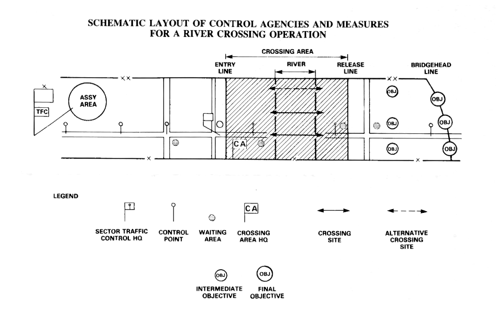
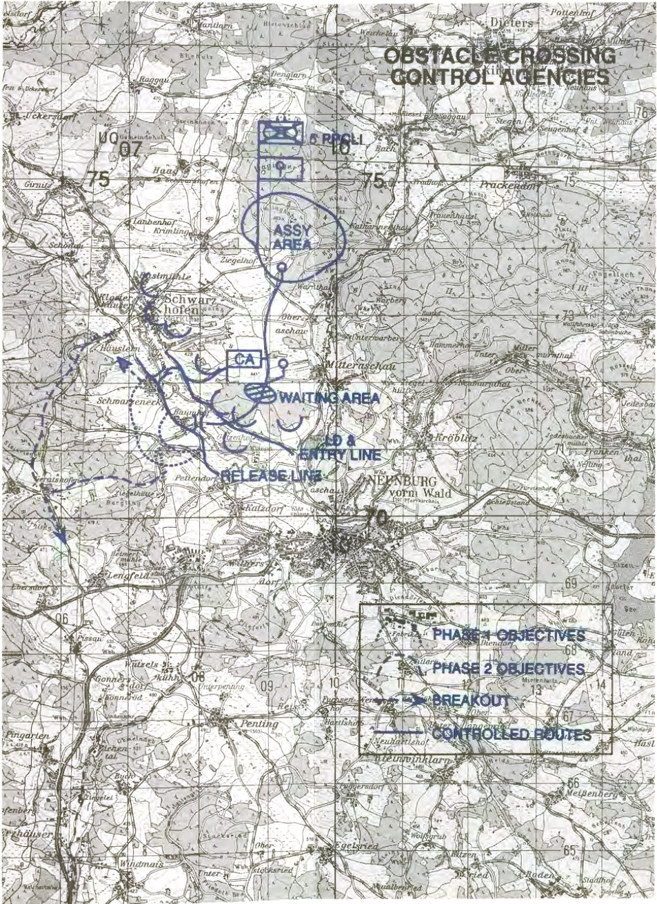
All along Major Chuck Grant had painted in his mind an image of assault with one platoon up, aimed at BAUMHOF, advancing on foot, in company with the sappers and helping to carry the inflatable assault boats. The shortness of the crossing reduced the load to be carried; since only paddles would be necessary and not the out-board motors. But, reflected Grant, if the rapids that the patrol had mentioned were fordable, it might be possible to dispense with the boats altogether. Trouble was, nobody was sure about the rapids and nobody had tracked down a local inhabitant who knew. So when issuing orders to his platoon leaders and the sapper sergeant in charge of the boats, Grant kept the choices open and depended upon the patrol leader, whose help he needed up to the last moment before crossing the line of departure. In the absence of permission to carry out a close personal reconnaissance of the assault place, that patrol leader’s eyes and memory had to be his in formulating his plan and orders.
To belie any insistence upon, but also to underline the part artillery would play, the guns began to speak vociferously as company and squadron commanders began to issue orders. Both sides, already better provided with information about each other from the various agencies of TA [target acquisition], began exchanging shots in the preliminaries of counter bombardment. A MRL [multiple rocket launcher] detachment joined in with a roar of rocketry as it put down scatterable mines on a positively detected battery of 67 MRR [motor rifle regiment], temporarily neutralizing it. This was a duel between guns in the open: nobody had found time to dig in the weapons. Damage was caused, notably to the out-numbered Russian batteries. Meanwhile, a troop from 7 RCHA was specializing in harassing 33 Indep Tank Battalion and 1/92 MRR as they drew closer: slowing them down, causing consternation with DPICM [dual-purpose improved conventional munitions] and inflicting a few vehicular casualties among the BTRs [Soviet-designed wheeled armoured personnel carriers] and lighter vehicles, but hardly embarrassing the T80 unit which lost only one tank temporarily immobilized.
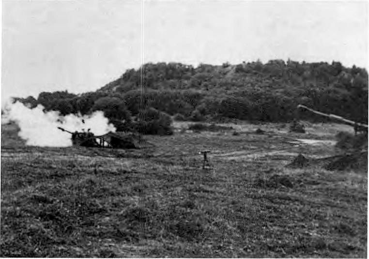
Beneath the canopy of shells swishing overhead, Grant issued orders in the assembly area. Some among his followers in C Company felt it was a mite too rushed. But time was short and, to save it, Grant showed his second-in-command the trace of the traffic control layout and instructed him to start 1 Platoon on foot at 2100 hours to the waiting area, where they would find the four assault boats already positioned by the sappers. He began his orders at 2045 hours to a group consisting only of the three platoon commanders, his second-in-command and Company Sergeant-Major, the signaller and the sapper sergeant in charge of boats. They lasted fifteen minutes and were going on even as 1 Platoon, led by its sergeant, who found his way with the help of passive night vision goggles, was moving through the gloom of last light.
Having outlined the scope of the battle group’s operation and adopted as his mission “capture of the Phase 1 objectives you see on my map here”, Grant expended a lot of trouble ensuring that 1 Platoon commander, Andrew Boydon, and the sapper sergeant in particular, knew well their task was in making the initial crossing upon which everything else hinged. He insisted upon a very stealthy approach to the line of departure and demanded the utmost determination when crossing the fields to the river. He spoke of the white track, which should act as a pointer to the embarkation place, and warned them to keep off it for fear of mines.
“And when you reach the water don’t just count on the boats. OK, the sappers will inflate them in five minutes or so, but don’t hang around. Take a look for those rapids. If they’re fordable, shallow enough, use ’em. Get across and get in among those buildings just as soon as the guns lift.”
He permitted 2 and 3 Platoons to drive in their APCs [armoured personnel carriers] to the waiting area, reserving it to his discretion, based upon the state of the track, whether or not they proceeded down the track to the river on foot or mounted. For obvious reasons of mobility, protection and fire power, he hoped they could remain mounted, but he had also to take into account the priority of movement, which had to be given to the AVLB [armoured vehicle launched bridge] and AEV [armoured engineer vehicle] and the sappers who would be needed on site; and even, maybe, a Lion with mine roller or plough should mines be encountered. Initially he intended to control the operation from the waiting area; then moving with the leading platoon to the line of departure, but remaining there from shortly prior to H hour until the majority of his company was across. Whereupon he would set up between BAUMHOF and SCHWARZENECK as D company began to pass through for Phase 2.
Grant’s first disappointment occurred at the waiting area. He could not find the patrol leader upon whom, he believed, so much depended for information. Nobody knew where he was. In fact, he was already half way down the slope with members of the Recce Platoon and the Pioneer Platoon, supervising marking of the route and removing any possible obstructions that might hamper the men and vehicles, which soon would be passing. The presence of his Commanding Officer, Ken Parker, was some recompense, even though Parker was undergoing needlings of doubt because he suspected he had set H hour too early. He sensed his leaders were being rushed and that error might result. Should he defer for thirty minutes? Perhaps an hour? “Order, counter order, disorder,” went through his thoughts. Time out! Exude an impression of utter confidence to his subordinates — right or wrong!
“I’ve a bit of good news for you, Chuck,” he said. “That sniper down there by GOTZENHOF reckons there are rapids down-stream. Came up on the air and said so. Can’t see ’em though. Take it or leave it. But meanwhile he’s seen nothing to pot yet. And any moment now that section from A Company should be with him to keep Fantasians’ heads down on the other side.”
There was no time for more. Already it was 2135 hours and 1 Platoon had yet to stumble down a dark slope under the canopy of trees, lugging the boats and guided only by lights and tapes. Grant decided to lead with his own signaller and with Andy Boyden of 1 Platoon, telling the FOO from D Battery to hang back and join him later at H minus five down by the road. “No point getting everybody in the know killed at once,” he explained. Parker watched them go and returned to his jeep to sweat it out. Away to his right he thought he saw the dark silhouettes of Don East’s crossing area HQ vehicles moving to their battle position near 084721, from whence they could overlook almost the entire assault sector. To his relief the command radio link had fallen silent. Chatter might indicate trouble brewing. Also it had been a comfort when, at 2120 hours there broke out a spasm of shelling over by ALTENDORF and a flurry of shots from all manner of weapons — indicating that the Vandoos were carrying out their obligation to do all in their power to attract enemy attention in their direction. Drowned by the noise of the gunfire, the arrival of C Company’s APCs, advancing slowly at low revolutions to the Waiting Area went almost unnoticed by him. Unobtrusively they were guided into position by a sergeant of the Recce Platoon who then reported their arrival by radio to East at Crossing Area HQ.
In some respects it was East who now stood at the real hub of the two battle groups. Through the radio net of 5 PPCLI’s Recce Platoon he could control the flow of traffic from the Assembly Area control point to the Waiting Area control point, or anywhere else he chose to assert control through one of that platoon’s Bobcats. By monitoring the regimental command nets of the CTR and the 5 PPCLI, as well as those of selected combat teams (as of this moment C Company 5 PPCLI was his chosen subject at that level) he was able to relate the activities of the entire battle group. He could formulate a pattern of movement which reduced the chances of chaos, and ensured each of the many elements concerned could be fed into the stream of combat, at the right place and the right time. Spread before him in the CTR command post were maps and diagrams illustrating all the relevant detail. Nearby, 5 PPCLI command post provided radio back-up. A short distance away waited his Lion, ready for when he reassumed his function as alternative commander of the CTR battle group in the breakout, at which moment 2ic 5 PPCLI would take over Crossing Area HQ.
As of 2140 hours, he was content that C Company PPCLI had reached the Waiting Area but worried it might be behind schedule in making for the line of departure. He ordered the AEV forward to the waiting area at 2145 and brought D Squadron CTR to ten minutes readiness to move. But he began to worry seriously about C Company when the sound of explosions among the trees to his left rent the air. That, he thought, must surely upset C Company, perhaps delay them fatally at a crucial moment. And what did it mean? Had the enemy smelt a rat and was this the overture to severe disruptive action?
12 Anatoly Stepanov Smells a Rat
Somebody on the Fantasian side had smelt a rat! Not at the presentation of concrete evidence of threatening enemy intent by a sense of incredulity — at an absence of any definable enemy activity at all. Major Anatoly Stepanov, having carried his primary reconnaissance of the NEUNBURG-SCHWARZHOFEN sector allocated to him and having put in train the defensive measures immediately deemed essential, had sat back to assess the enemy threat as displayed — and at 2000 hours had found it amazingly passive. From the perimeter fence of LENGFELD Barracks, which poured smoke from fires burning in two of the blocks, he studied the ground across the valley and tried to imagine what he would do in the enemy’s place, if called upon to make a flank attack against 79 MRD [motor rifle division], in its present posture south of the SCHWARZACH. Up to the juncture when the enemy vanguard had closed up to the river line and that unfortunate penetration had been made at ALTENDORF, the pattern had looked logical enough. If it had been a Fantasian operation there was little doubt that not only would the ALTENDORF success have been exploited with utmost vigour, regardless of difficulties of ground, but also a very determined and, perhaps, expensive attempt made to cross the river near SCHWARZHOFEN. That it had not happened, after what had been only a minor rebuff by derisory Fantasian opposition, was hard to understand. Either this local enemy effort was a devious bluff or something much more sinister portended.
True the ALTENDORF situation continued to loom. There the enemy pressed; urgent calls from the extended 67 MRR [motor rifle regiment] demanded reinforcements; and the artillery battle, that raged, was doing the Fantasians no good at all. It was trying to Stepanov that, as he fed patently inadequate forces into the defence of his sector, Colonel Zaitsev persisted in attempts to filch them for ALTENDORF, under the pretext they would decisively swing the scales. “Was that what the enemy wanted?” Stepanov asked himself. If so, was it possible that it was a diversionary preliminary to the real enemy effort at SCHWARZHOFEN or NEUNBURG within the next few hours, probably that very night? Yet evidence of this was virtually nil.
What was known in support of his fears?
In the vicinity of SCHWARZHOFEN there was virtually nothing to be heard of the enemy — except for a sniper who had, but a few minutes ago, shot an infantryman in HAUSLERN. Occasional glimpses of people in the wood surmounting the village were probably artillery observations posts. Most of the tanks that had moved in had now moved out and the latest report from an RPV [remotely piloted vehicle] said they had gone to RAGGAU. Poised for ALTENDORF? Possibly. Then there had been that patrol skulking about near BAUMHOF, that one of his men had fired on. What were they up to? Could be important, he reasoned, for there were few better covered approaches to the river than there. It was the place he would chose for a crossing. Added to which there was RPV evidence of vehicles in the woods to the northward, a likely hide no matter what the enemy’s intentions. Yet it was NEUNBURG which seemed most attractive to the enemy. Sightings of men and vehicles in and around MITTERASHAU and distinct indications of a push developing eastwards from the village, through the dense wood, suggested it. Why there? It did not look a very promising area for an attacker. But it could not be ignored. Finally there was the distribution of enemy air and artillery effort. Strikes by aircraft and artillery against his own tank battalion and the MRR were to be expected, and maybe it was only accidental that they seemed to have caught a far higher proportion of air attacks, than had the tanks of 52 Tk Regt farther over. As for counter battery fire, it seemed fairly evenly spread, without anything like the emphasis on one particular sector — such as was falling in disproportionate quantity upon ALTENDORF. Nevertheless, the counter battery exchange was going the enemy way, the big 203 mm shells terrible to endure.
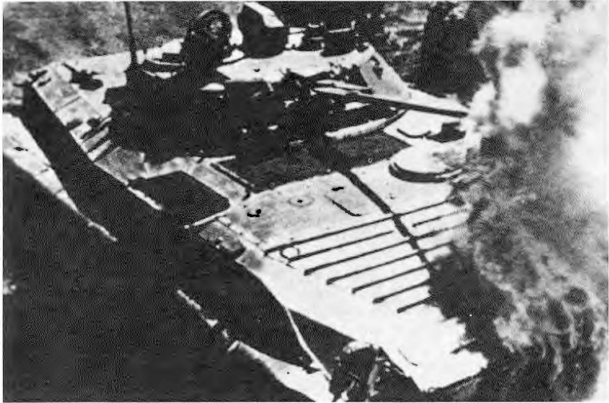
It occurred to Stepanov that the sector he would attack if he was the enemy was centred on BAUMHOF — the only one in which the enemy apparently was uninterested. Furthermore, it was only when, at this moment, he studied the ground that a fundamental difficulty came to his attention — one which, incidentally, had not yet occurred fully to the Canadians opposite, from a study of the map. The slope leading down to the river from the vital LENGFELD crest was convex in profile. To apply direct fire to potential crossing areas meant sighting defensive positions on a big forward slope, one which would swallow men, machines and weapons to no great advantage. Indeed, men unprotected by earthworks would be sitting ducks for a concealed predator across the valley. To make matters worse, such reverse slope positions as presented themselves to the south and east of the LENGFELD crest were wide open and difficult to defend — extremely vulnerable to an opponent who had seized the crest as a firm base for infiltration towards 79 MRD’s main axis to the southwards, or towards PENTING and beyond.
Stepanov concluded, in some state of gloom, that he could spare but few of the resources at his disposal to holding the river line; that he should, however, do everything possible to restrict enemy penetration into the woods fronting GERATSHOFEN; but that he must concentrate the maximum mobile force available to deny the LENGFELD crest to the enemy. He, therefore, retained the entire 33 Indep Tank Battalion (now whittled down to 42 T80s by air and artillery attack) with the BRDM [Soviet-designed armoured scout car] Spandrels, BTR [Soviet-designed wheeled armoured personnel carrier] SA 7s and ZSU [Soviet-designed self-propelled anti-aircraft gun] 23-4s in support, arranging with 1/92 MR [motor rifle] Battalion (made up to about eighty percent full strength by reinforcements from the rump of the weakened 92 MRR) that it should hold the river line (absorbing elements of 67 MRR already in place). At the hinge, NEUNBURG would be garrisoned by one company with two T80s plus the T80 already there; a second company would be spread from KATZDORF to HAUSLERN, with infantry detachments in each of the four hamlets; the third company, on Stepanov’s insistence, holding the woods west of BAUMHOF/SCHWARZENECK and GERATSHOFEN with eight T80s under command. Direct artillery and mortar support would be provided by the D 30 Battery and the 120 mm mortars, although Stepanov had already been assured by the Divisional Commander that, if the need arose, the full weight of the artillery slice would be brought to bear rapidly in the sector — but without being informed what that amounted to or how well it was supplied with ammunition.
With characteristic energy, Stepanov urged his sub-units into hurriedly occupied positions. But his attention was chiefly fixed upon his own 33 Indep Tank Battalion and the supervision of the company commanders in the reconnaissance and planning of their provisional tasks at LENGFELD. Only upon the infantry holding GERATSHOFEN did he expend much time, and then simply to make sure it understood that 33 Tank Battalion depended upon it for maximum delay, should any enemy get among the surrounding woods.
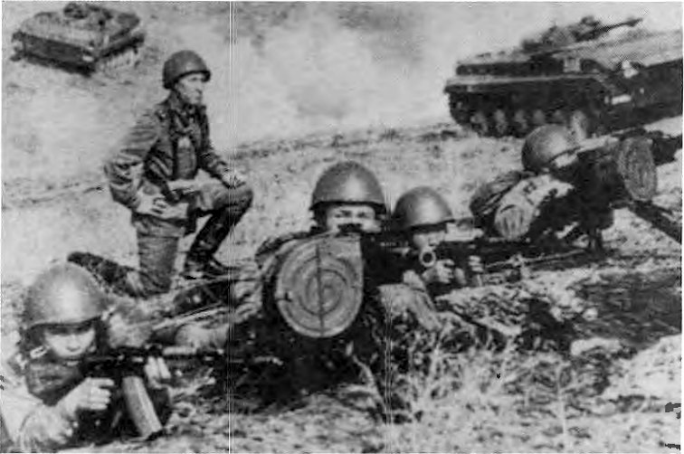
He knew that if the enemy chose to attack him that night the chances of holding were slight. For there was barely enough time for the men to familiarize themselves with their positions and arcs-of-fire, let alone dig in sufficiently to withstand a strong bombardment and assault. The best he could do was badger the already hard-pressed gunners into agreeing to an ambitious list of defensive fire tasks on every threatened point he could think of and try to find a way of throwing the enemy’s plan out of gear — if indeed an attack plan existed at all.
It was with the latter in mind that he ordered the D 30 battery and the 120 mm mortar company to periodically lob a few shells and bombs upon potentially sensitive enemy localities — such as track junctions and likely forming-up-places. Starting, so far as the mortars were concerned, with the tracks marked on the map as leading through the trees to BAUMHOF. Speculative fire, he conceded, was perhaps wasteful and maybe it would provoke dreadful retribution from the enemy, whose counter-mortar radars had already been found by Fantasian EW [electronic warfare]. But a feint to make the enemy show his hand might well be worth the risk. And, while on the EW subject, he also asked for jamming of enemy radio nets to his immediate front if a serious attack developed — a request which was received with some reservations by intelligence at HQ [headquarters] 79 MRD, who were equally keen to learn all they could of enemy intentions from monitoring those same nets.
13 Deliberate Attack — The River Crossing
Six rounds speculative 120 mm mortar bombs — the ones East heard with disquiet — landed with rending crumps in the tree tops just to the north of the NEUNBURG-SCHWARZHOFEN road, and proved as good an investment as Stepanov could have hoped for. It laid low only five men, including two who were vital to C Company’s enterprise. Chuck Grant and the patrol leader he sought would never meet; both were dead. Lt Andrew Boydon, saved from injury by his steel helmet, which deflected a splinter and threw him sideways, was shaken — and for a while unable to grasp what had happened or what to do. All around was confusion compounded of profanity, wounded men crying out in pain, shadowy figures crouched in shock or beginning a furtive drift from the carnage. Amidst chaos key men and older hands stood like rocks — his own platoon sergeant and the sapper sergeant most solid among them as they imposed their personalities by shouts, persuasion and example upon the frailest spirits. They compelled waverers to stand fast while a semblance of order was reimposed and they awaited Lt Boydon’s lead.
It was at this point that CO [commanding officer] 5 PPCLI’s [Princess Patricia’s Canadian Light Infantry] influence and the traditions of his Regiment paid off. If the truth be known, LCol [Lieutenant-Colonel] Ken Parker himself was suffering awful traumas of doubt. News of the disaster reached him at his command post with stunning rapidity via the gunner net, through the adjoining FSCC [Fire Support Coordination Centre], after a very cool observation post officer reported by manpack radio. Although Chuck Grant had told Harry Davis to hang back, the gunner had stayed within one hundred metres from the late company commander and was almost at once aware of what had happened. It was he who found the shaken Boydon at the roadside and brought him back to his senses with a suggestion that was tantamount to an order.
“The preliminary shoot begins in five minutes or so Andrew, you know. Do not ask to delay it. That might be awkward!”
Boydon took the hint and reassumed command. To Davis:
“We’ll go. Stay near and let’s get out of here fast before they do that again.”
To the two sergeants and the section leaders in the loudest voice possible:
“Get a grip. Line your men up. Follow me when I say. See that white track there? That’s the way we go like I said — 1 Section left, 2 right, three stay back and support until I say. The guns start shooting in less than five minutes. Get off your asses! Go!”
To the second-in-command over the radio, to whom Parker had already spoken by the same means, he gave a terse report of what had happened and his intention to follow the plan. And from the second-in-command, Captain Roger Dunstan.
“Roger, I am taking over. Will join you ASAP.”
It was this exchange which reassured Parker, whose immediate instincts had been those of a good company commander (as he had been but three years ago) to leap into a jeep and drive hell for leather to the front to take charge of a potentially ruinous situation. Probably he would have curbed those pernicious desires and kept his nerve, but now he could relax — somewhat. And Don East, monitoring the C Company conversation at crossing area HQ [headquarters], wondered if Dunstan would go by foot or APC [armoured personnel carrier] to the line of departure. In the tension of the moment he hardly expected to be told and assumed it would be by APC because it was safer and quicker. He only hoped it did not accidentally block the track. Dunstan went in the command and reconnaissance vehicle (CRV) (without announcing it), leaving behind the CSM [company sergeant major] in the command post to control the platoons in the waiting area and work the rear link to battalion HQ. Starting at 2159 hours, he was barely mobile before the guns spoke in earnest and, to right and left of the wood, into which he drove, two troops of the Anti-armour Squadron eased into positions of observation, just behind the crest. To battlewise commanders it was axiomatic that they treated the blackest night as broad daylight, such was their respect for the enemy’s night vision equipment. With panoramic II heads alone visible to the enemy, the Chimeras lay in wait for a worthwhile target to disclose itself — a vital potential contribution by the CTR [The Canadian Tank Regiment] battle group to the Patricias. And down by the river those Patricias under command of the CTR were rallying to the support of their own C Company in its moment of supreme trial.
It took a prodigious effort by Boydon, aided by Davis and by his own senior NCOs [non-commissioned officers], to point the sections roughly in the right direction, let alone in proper formation, before H hour. By one of those remarkable phenomena, which is sometimes induced by the need for everybody to readjust for a special task, he was assisted by a total cessation of firing at 2155 hours, a hush that felt as menacing as it was beneficial to Boydon in making himself heard and, to some extent, understood.
Even so, when the first rounds of 155 mm and 203 mm, supplemented by 120 mm mortar bombs, swished and rumbled overhead to explode with flame and thunder upon targets across the river, 1 Platoon was still in a state of irresolution — and Dunstan had yet to arrive. The men of B Company 5 PPCLI, who lined the road to secure the line of departure heard Boydon order his men to stand up and advance. In the half moonlight, by the flash of shells, they witnessed only a half-hearted response. Men, who had yet to recover from one shock, were further upset by the blast of their own guns, shooting, and made still more unsure by doubts over which direction to take. Number 1 Section lugging two assault boats, got off to a fair start, and on the correct bearing, because the platoon officer had spotted the white track and remembered that, after walking a few yards, he must strike off to the left in order to hit the correct launching position at the river. Number 2 Section veered well to the right and began to move almost at right angles to the track, diverging from the objective. With only one assault boat in their possession, they strayed in the dark without anybody in authority noticing it. Number 3 Section, with the platoon sergeant among them, stayed irresolute at the road side, waiting an order to move, which did not come at once.
Fortunately, as a result of the counter battery fire by Canadian and American artillery, the Fantasian reaction was, for the moment, subdued. Their gun positions were under accurate attack; their forward troops, also under fire and seeing virtually nothing of what was going on behind the river line trees, were fully neutralized. Stepanov, guessing that this enemy fire might well herald the assault he feared, called for defensive fire which materialized far too late to interfere with 1 Platoon. Indeed it was 2203 hours before Fantasian 120 mm mortar bombs began to descend in the vicinity of the line of departure and among the trees; and another two minutes before 130 mm shells began searching out possible forming-up-places, without distinguished success. By then 1 Platoon was beginning to stir itself as the result of Dunstan’s arrival by APC at the line of departure and his extremely quiet estimate of what was and was not happening, and what to do next.
Through his APC’s night vision sight, Dunstan was able to orientate himself from his previous study of the map and also actually pick out both leading sections as they, respectively, moved in the correct and wrong direction. To Boydon with Number 1 Section, he sent words of encouragement; to Number 2 a sharp order to halt, pick up new bearings and head towards the epicentre of shell fire pounding BAUMHOF. That way, he reckoned, they ought to arrive somewhere close by their intended crossing position. Then he pre-empted Boydon by ordering the platoon sergeant to lead Number 3 Section at least one hundred metres down the white track where: they would be better placed to take part in the fight; and they might be out of harm’s way of a renewal of the enemy mortar fire — a wise precaution which was fully justified a few minutes later by more bombs — which also prompted him to drive forward hurriedly to the bend in the track.
Immediate local action taken and seemingly complied with, Dunstan next decided that the moment had come to assume that utter disaster was not impending and that he must act on the assumption of success. Having used the track through the woods in his APC without much difficulty, he told the rest of the company to stay mounted (and thus best protected), and 2 Platoon to leave the waiting area at once and move to the line of departure, ready for instant exploitation when Number 1 Platoon got a foothold on the far bank. Encouraged by this, Parker chimed in. It was time to send the AVLBs [armoured vehicle launched bridges] and AEVs [armoured engineer vehicles] to the waiting area and for both D Company 5 PPCLI and D Squadron CTR (particularly the latter’s commander and the mine clearing Lions) also to move closer to the waiting area, ready to intervene if C Company continued to maintain progress. Listening in, East at once warned his traffic control stations of what was happening, reminding them to report any snag which might foul up the, as yet, quite orderly flow.
Boydon reached the river bank in commendably good order, but feeling lonely, worried as he was that his right flank section was apparently adrift. Telling the men to lie down while the sappers inflated the boats, he crawled forward to examine the bank and the water beyond through night goggles. It was reassuring that they seemed to have arrived undetected and that wide enough spaces among the trees enabled boat handling to take place. And so it proved, although there was one disquieting moment, just as the boats reached centre stream, when the section of Patricias ensconced among the trees two hundred metres to the left, opted to begin their contribution by opening fire on the now burning buildings of BAUMHOF. This they had been told to do once they saw the crossing taking place — but Boydon had forgotten all about it and, along with most of his men, momentarily feared the worst, particularly when several rounds of 5.56 mm from the C9 LMG [light machine gun] seemed to come awfully close. But the timing of small arms fire was useful, deterring, for a few precious minutes, the scared enemy infantry in and around BAUMHOF putting up their heads for a look as the artillery fire abruptly ceased.
It had been hoped 1 Platoon would be complete in its bridgehead before the timed artillery concentration on BAUMHOF lifted to the cross road beyond. The silence simply told Boydon he was behind schedule, a full one hundred metres short of the objective and at only one third full strength in face of an emplaced enemy. He might have felt slightly happier if at that moment he had known Number 2 Section to his right had just reached the site of the demolished bridge and, to the amazement of its leader probing along the bank, discovered the rapids they had heard about and discounted. Scarcely believing that nobody seemed to have noticed their arrival, Number 2 Section picked its way through dense trees, eased up to their knees in the swirl and, cheered by continuing bursts of fire from the left, crossed unhindered. Two minutes later a mightily relieved platoon leader heard about it over the air and was asking for a short repeat of artillery fire upon BAUMHOF before going on.
Both Dunstan and Parker realized that the gunners might not be able to comply with all that ease and speed. At once Dunstan vetoed the request but asked Parker if one of the Chimera troops could help, a request relayed to the CTR whose operations officer instantly passed it to the Anti-armour Squadron for immediate compliance. Calmat was ready. His right flank Chimera troop was already pointing at BAUMHOF and it took but a moment for two of them to open fire; putting down the heads of enemy infantry whose survivors were beginning to revive among the ruined buildings.
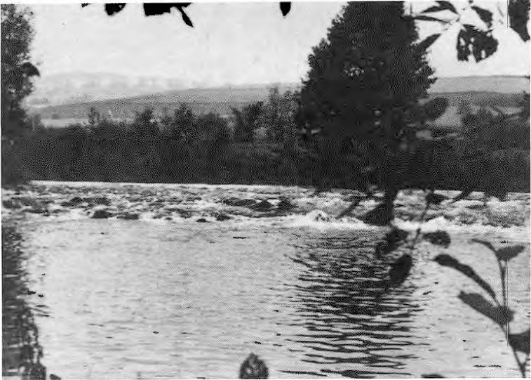
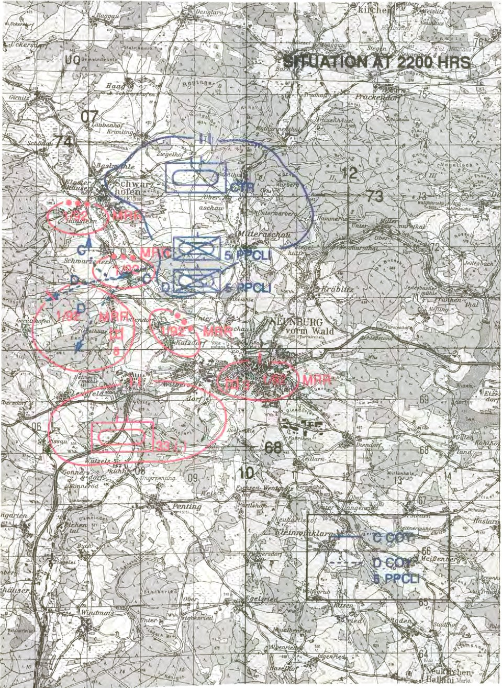
Dunstan was getting into his stride, uplifted by apparent success as the company commander he had not expected to be for several years to come. Ordering Boydon to “get up off his ass and get that spare section across right now”, he drove to the bankside to position his APC where it could give direct fire support over the heads of the advancing 1 Platoon. At the same time he told 2 Platoon to hurry, and for 3 Platoon to follow from the Waiting Area at once.
From the tone and urgency of Dunstan’s voice, Parker smelt success and the need to sustain momentum to the utmost. The sappers he now ordered forward, straight through the Waiting Area to the Crossing Site to lay their bridge and improve the approaches. Now too was the time to bring forward D Company from the Assembly Area to the Waiting Area and for D Squadron CTR to move up. Hearing all this, East intervened from the Crossing Area HQ. Enemy fire down among the trees was increasing and with it the danger that this vital artery might be blocked with any number of vehicles caught nose to tail.
“You could be setting up a bit of a jam down there,” he radioed to Parker. “Suggest divert your Call Sign 4 and Tango Call Sign 4 to right of present axis. I have guides ready.”
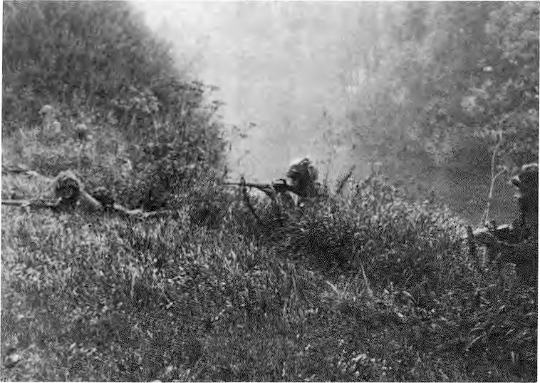
It was a timely reminder, but one Parker did not immediately embrace. He feared for vehicles travelling down the exposed slope to the west of the wood, as suggested. They might make easy targets. But East reassured him; the APCs and tanks would be difficult to spot against a background of trees. Moreover they would be motoring fast. Also the Chimera troop in place would provide direct fire support. Nevertheless, Parker demurred and witheld his consent until Cowdray, who had listened in, came up on the air to encourage his brother battle group commander and say that he had spoken to BC [battery commander] C Battery, who would put 155 mm fire on SCHWARZENECK at the crucial moments. At that Parker concurred. At some time or another he had to trust the Force in Place who, after all, knew more about his bit of ground than he did. And now Dunstan attracted his attention once more by the announcement that 1 Platoon was complete across the river, and that he was supporting it with 30 mm fire as it charged the devastated outskirts of BAUMHOF. Mentioning too, that the rapids really did exist but he was not at all sure if they were a suitable ford for vehicles, even though men had waded them. This, Capt Hank Williams of the armoured engineers acknowledged as he speeded up, leaving the lumbering AVLB to tentatively try the ticklish drive through the woods. For one thing, he could hardly bear to watch its progress, for fear something dreadful went wrong and fouled up the entire movement plan; for another, he had to trust the AVLB and AEV commanders, all of them experienced NCOs. But most of all, he needed to carry out a close reconnaissance of the bridging sites, to discover where to lay the first bridge and what work was needed on the site before the AVLB arrived.
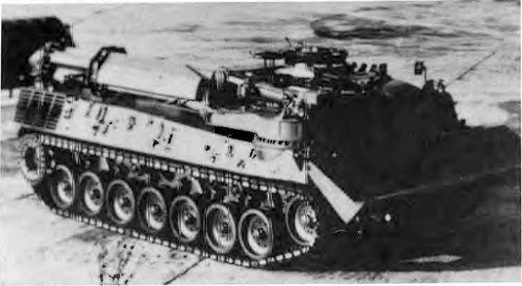
For a spell Williams was delayed by C Company’s APCs groping down the narrow track, and held back further when one of them stopped at the exit onto the road, after a clump of shells landed nearby. But it relieved Williams to see 2 Platoon’s APCs shaking out into formation on passage to the river — and concentrated his imagination enormously when the one which used the track blossomed from a mine strike, some thirty yards from its destination. As men spilled from it, shook out into line and lay down (without setting off further explosions), and the surviving three APCs on grass reached the river bank without incident, Williams concluded that the mines on the track were of the hastily laid variety, which could be cleared later. Yet he was extremely cautious as he approached the wreckage, which was all that remainded of the wooden bridge, since very likely mines had been laid there too. It was a mess. Yet so complete had been the demolition of such a frail structure, that he at once saw the solid concrete buttresses, upon which it had been built and which were practically free of obstruction, and might act as the foundation for the bridge layer. Clearly the gap was well within the twenty metres limit and happily the laying characteristics of the bridge, pushing forward would in no way be impeded by the overhanging trees, as might have been the case with overhead AVLB types adopted by other nations.
Without hesitation Williams radioed his recommendation that the AVLB should be laid here, adding a warning about mines with a call for a roller, and instructing the AVLB’s commander how to approach the site. Calling for the AEV also to join him on site to begin the clearance of trees and such improvements as might be necessary to the entrance and exit to the site and, foreseeably, work among the rubble of BAUMHOF should that too block the way out of 1 Platoon’s bridgehead. Laying of the bridge was becoming urgent. Major Stepanov upon the LENGFELD crest had spotted signs of a crossing taking place and was calling for artillery fire, most of it falling on the boat crossing place. It was undesirable for the infantry to debus and lose the benefit of armour. But until the bridge had been laid or the AEV had done work shelving the banks, APCs would be unable to cross. Already those of 2 Platoon, who had crossed by boat, had suffered casualties, prompting Dunstan to abandon attempts there and divert his men to the rapids where, for the time being, they could wade out of danger from observed fire. An astute diversion, which inspired Williams to investigate the feasibility of felling the bankside trees to open up a passage for vehicles; an investigation which showed such promise that he called forward a field engineer APC crew to begin work with chain saws and dozer blade.
Stepanov had his troubles too. The 155 mm shells searching the crest made life unpleasant, but he was set aback when one of his T80s, slinking from below the crest line, in an attempt to get clear of mortar smoke and improve its view of the enemy from a fire position on the forward slope, was picked off by a shot from the far side of the valley at a range, he judged, in excess of two thousand metres. It mattered not to him, or the deceased members of that exploding T80, that the blow came from a Chimera and not a conventional tank. The perils of that forward slope were laid bare and the problems of tackling an established enemy bridgehead multiplied exceedingly.
14 Planning the Breakout
Important to Brigadier General Charles Knutson as was the assault across the SCHWARZACH, it has to be said that his thoughts were divided between the reports of 5 PPCLI’s [Princess Patricia’s Canadian Light Infantry] progress and upon what must be done next. By 2230 hours it appeared that a foothold had been established in the vicinity of BAUMHOF, that the bridgehead was being expanded according to plan and, once the mine threat had been eliminated, an AVLB [armoured vehicle launched bridge] would be laid to enable tanks to cross. With relief he thought how subdued had been the enemy reaction so far. He guessed the deception plan had worked even better than hoped for, since enemy pressure at ALTENDORF against the Vandoos had in no way been relaxed — was even showing signs of intensification. But he praised the CO [commanding officer] of 7 RCHA [Royal Canadian Horse Artillery] to his face for the undoubted moderation of enemy artillery fire through counter battery fire, that continued to make life extremely unpleasant for each enemy battery which, in the dire circumstances, were compelled to deliver DF [defensive fire] and thereby draw retribution upon themselves. As yet, no counter attack against 5 PPCLI in any shape or form had been hinted at, let alone attempted.
In the circumstances, Knutson felt confident enough to bring forward 6 RCR [The Royal Canadian Regiment], his principal reserve, despite its reduced potency of only three understrength companies. By bringing it into the vicinity of PERTOLZHOFEN he would satisfy a number of likely requirements. It would give much needed protection to the nearby artillery positions, as well as to HQ [headquarters] 7 CMBG [Canadian Mechanized Brigade Group]. More far-reaching, it would be on hand, for its true reserve function, either to deal with any threat to 7 CMBG’s left flank (from whence had come a renewed flutter of enemy hostility but an hour ago) or to reinforce the forthcoming onward surge of his leading battle groups. In the latter context, Knutson already had it in mind that either the 5 PPCLI bridgehead might need bolstering or that NEUNBURG would have to be screened, or cleared when pursuit by CTR [The Canadian Tank Regiment] to the eastward commenced.
Prior to the issue of orders to 6 RCR, Knutson had been in consultation with G3 [operations staff] and G4 [logistics staff]. They had to prevent congestion on the roads which 6 RCR would travel and which already, under the cloak of darkness, numerous administrative units were using extensively — their flow made especially complex and subject to delays due to the conflicting requirements of 7 CMBG and the American brigade holding the line to the East. So far close liaison between the formations involved and unflagging efforts by Military Police of both nations implementing the traffic plan, had kept things moving nicely, although it would have been ridiculous to imply that all had gone entirely smoothly. There had been hold-ups at critical points, such as crossroads, when waiting time seemed unduly long. Here and there units had gotten ahead of or fallen behind schedule and clashed. On these occasions tempers might rise and a measure of nationalistic chauvinism surface. Then it was officers and the police who had to prove their mettle by sorting out the trouble. Injecting 6 RCR into this mixture would overheat the situation, as had long been foreseen. It called for some swift and frank discussions between the officers involved to persuade G4 that he must give a little to satisfy the needs of G3 — and it had also to be remembered that this was but the overture to intersecting traffic of even larger proportions. For the time was approaching when the mass of 51st US Armored Division’s vehicles would be roaring down these same roads, across those same critical points, as they passed through 7 CMBG in the next phase of the counterstrike. Indeed, it had been very much with that in mind which compelled Knutson to shift 6 RCR from the original assembly area since that piece of real estate would soon be needed by the Americans.
Major Pat Braddock, the G4, was in fact operating with a fair degree of spare capacity. He could afford to be generous with his colleague, Major Maurice Chenier! The routine topping-up of F Echelon by A Echelon had begun after last light at the same moment as packets of full supply vehicles were moving forward from the BAA [brigade administrative area] to the FLG [Forward Logistic Group] and from the FLG to the commodity points to replenish A Echelon vehicles later. Simultaneously, empty vehicles were making haste to return to the BAA for replenishment. According to Logistic Operations at HQ 7 Svc Bn, the system was working as well as might be expected, bearing in mind the increasing number of Americans cluttering up the roads and a certain quantity of civilian traffic that the German police were doing their best to prevent or divert. Sporadic air attacks also created stoppages and minor damage, and usually took place to the accompaniment of a firework display by Gepard and ADATS [Air Defence Anti-Tank System] with subsequent demands for ammunition re-supply.
Content, Knutson returned at 2300 hours to his own command post to hear the latest reports from 5 PPCLI, but also just in time to receive the Commander of 51st US Armored Division who had arrived to study progress for himself. Chenier presented a quick up-date:
“5 PPCLI have the best part of a company over the river and it’s going good. They’re into BAUMHOF and beyond and beginning to push out towards SCHWARZENECK. The sappers are laying a bridge right now and improving a sort of ford they’ve found down there. Rest of the battle group are moving up now. We’ve grabbed a few prisoners but no identification yet. Enemy resistance patchy, sir. Most of it up on the ridge there, up round LENGFELD, and probably in and about NEUNBURG too.”
Knutson took over:
“Going much as I thought it should. There’ll be a second company across soon, like as not with their APCs [armoured personnel carriers]. Tanks will be right behind them. If it goes on like this I’d say we’ll be up there at GERATSHOFEN somewhere about midnight. And we’ll be in HAUSLERN with another bridge over the river at SCHWARZENECK. That being so, I reckon to start moving the CTR battle group into the bridgehead about 0100 hours and go for LENGFELD somewhere about 0400. Providing the enemy lies low, eh? Can’t be sure of that, tho’. He’s got a lot of tanks hereabouts. They’re hanging in up there by LENGFELD and I’d expect some down in the woods too. Not like him to take it lying down. Even though he’s really gone to town over by ALTENDORF there.”
“Tell me about that!” said the American.
“He’s not budging an inch,” replied Knutson. “Being real mean. I’ve only got a company and one or two bits and pieces, including a few tanks across. And they’re going nowhere in those woods. But we’re holding. Just! And killing ’em.”
The American looked closely at the map with its red and blue symbols. Then:
“I’d thought about opening up river crossings of my own, out of the way of yours. Over near SCHONAU maybe. But if you grab that bridgehead as far as you mean and get going — clear that ridge and open tracks through those woods real fast — I might do worse than come right through you and just keep motoring straight for BRUCK. What do you say? Depends how much room you can find me. How quick you can spread out. Look, Chuck! I reckon if you can hold them at ALTENDORF and have PENTING by noon — earlier if possible — I’ll be coming through with all I’ve got and I’ll back it with more bridges about SCHWARZHOFEN soon as you say its OK.”
They discussed details. Most important was the setting up, alongside 7 CMBG’s command post, of a small G3 cell from HQ 51st Armoured Division tasked to: feed up-to-date information to Division HQ; help decide when the moment had come to cross the SCHWARZACH; and, to co-ordinate the complex passage of lines caused by the American units bisecting the embroiled Canadian battle groups. It looked remarkably tidy sketched on the map with neat arrows, blue symbols, boundaries and phase lines. Trouble was, the people represented rather distinctly in red were on the point of upsetting Knutson’s scenario.
As he left, the American said quietly, “I am sure you know that the NBCW [nuclear, biological and chemical warfare] threat has come a lot closer of late. They’ve used gas against the British up north. Did it after a counterstroke got moving. Mixed in some nerve stuff with it. You know! They’re likely to do it here too when you set them back. Just keep on your toes. I’ll do what I can. There’s a decontamination unit available and I’m having it set up around NIEDERMURACH for a start.”
This was not unexpected but disturbing nevertheless. And that was not all. For even as the Generals spoke and the expanding AVLB was crushing what remained of the ruined wooden bridge, something sinister moved among trees beyond BAUMHOF.
15 Fight for the Bridgehead
A critical but virtually inevitable hold-up, bearing in mind the enforced narrowness of 5 PPCLI’s [Princess Patricia’s Canadian Light Infantry] assault, had arisen at the crossing site. Compelled, by want of a bridge and by shelling of the boating site, to make use of the ford, and prevented, until the AVLB [armoured vehicle launched bridge] was laid or the ford was improved by the sappers, to leave their APCs [armoured personnel carriers] behind, C Company was delayed in fanning out. It was nearly 2255 hours before 2 Platoon was entering SCHWARZENECK, and 2300 before the sappers pronounced satisfaction at the laying of the AVLB, the arrival of which had been delayed by spasms of caution. For Parker, convinced by every sapper officer from Capt Hank Williams upwards, that to risk an AVLB on mines would be unwarrantable, had given way to the call for a mine rolling Leopard to clear a lane. And that Leopard had been none too swift driving down the slope, negotiating the road and rolling its way at 6.5 km/h to the bridge threshold. Meanwhile the field and AEV [armoured engineer vehicle] sappers had been felling trees and doing everything possible to improve the site.
The mine roller detonated nothing and the bridge was laid a mere fifteen minutes before Williams pronounced the ford usable by tracked vehicles. By then C Company was complete, on foot, on the other side, and 3 Platoon was following 2 Platoon prior to veering left to by-pass SCHWARZENECK and expand the bridgehead sufficiently to give D Company and D Squadron space to pass through. The first vehicles to use the bridge, therefore, were the APCs of C Company, led by Dunstan racing forward, he hoped, to add fire in support of the assault. It looked so easy. Enemy resistance was timerous in SCHWARZENECK which 7 RCHA [Royal Canadian Horse Artillery] had ripped apart. Not an enemy tank was in sight. Uplifted, Parker picked up the microphone to tell D Company to utilize the AVLB and drive fast through the woods to GERATSHOFEN. Then 1 Platoon’s Lt Andrew Boydon sounded the alarm.
“Engine noise to my front,” he called over the air. “Sounds like tanks — wait — is a tank I think coming from — wait — grid reference 072707. Am observing but need Ironside.”
Both Dunstan and Parker understood Boydon’s anxiety. With only short range anti-armour weapons (SRAAW) at hand, it was natural the platoon commander would call for help even though, in moonlight and close terrain, ambushes could be arranged. Parker did not hesitate. Telling D Company to remain where it was for the time being, he called OC [officer commanding] D Squadron CTR [The Canadian Tank Regiment], ordering Radisson to move Lions into the bridgehead at once to counter the new threat. Then speaking to RHQ [regimental headquarters] CTR, he asked for the Chimeras overlooking the bridgehead to be placed in his direct support, thus eliminating a waste of time relaying requests. Cowdray could not refuse. The cry by infantry for tanks to kill tanks struck its roots deeply in the past and in the instinctive (and by no means unreasonable) infantry sense of insecurity when faced by bullying monsters of seeming impregnability.
Armour’s reaction was instantaneous. As an immediate response, Radisson ordered the mine roller Lion, its task at the bridge complete, to cross the AVLB and join 1 Platoon in the anti-armour role. Next, a troop was told to pick up the guide supplied by Crossing Area (CA) HQ [headquarters] and go full speed for the bridgehead, to be followed by a second troop and then by Radisson himself. But for the moment he chose to stay on the high ground from whence he could more easily watch the evolving tank battle — if such there was to be — and also assume an element of control over the TD [tank destroyer] Chimera troop. For although Calmat had instantly complied with Cowdray’s orders to place a TD troop in direct support of 5 PPCLI, and to support C Company and its 1 Platoon in their moment of need, it was mutually agreed between Parker and Radisson that the Chimeras should be controlled by D Squadron, seeking to avoid misunderstandings and (as both Radisson and Calmat in their lofty air way might have put it) misuse of tanks and TDs.
In the opinion of Major Grigor Nanchinkin, CO [commanding officer] 1/92 MRR [motor rifle regiment], there were serious risks in the counter-attack which Major Anatoly Stepanov had insisted upon at BAUMHOF. Admittedly the very threatening situation called for drastic measures, but 1/92 MRR had hardly been in its new position long enough to prepare for a static role, let alone indulge in a night counter-attack, the preparation of which had preceeded little beyond the instructional stage, across ground they had barely seen. Liaison between tanks and infantry was sketchy; artillery and mortar support tentative in the planning stage and unlikely to have the overwhelming properties which Fantasian doctrine prescribed.
“Lunacy,” Nanchinkin had ventured to say to an officer barely his senior.
“Imperative,” had replied Stepanov, who privately agreed but who knew better how desperate the situation was and that his own reputation depended upon doing something positive. “If the enemy get set here and exploit — and everything we know about the Canadians tells us they’ll do just that — I tremble to think what will happen next!”
So they hatched a scheme and put in a platoon with three tanks directly supported by half a dozen 120 mm mortars and what was left of the 122 mm D30 Company. Also Stepanov promised to commit a number of his T80s from the LENGFELD ridge (now free of mortar smoke) in an attempt to quell the enemy tanks he felt sure would join the fire fight from the opposite side of the valley. Yet he did so with trepidation and warned the company commander concerned to take every precaution against the enemy anti-tank fire. For this, in his opinion, was not the critical moment, not the time to suffer heavy tank losses, when those same tanks would soon be required to meet a far more deadly threat on the vital ground itself.
Ditches and rubble gave 1 Platoon’s riflemen and machine-gunners a modicum of protection from enemy fire, though some among them would have preferred the armour and extra fire-power of their APCs. As it was, only those who crouched in what remained of BAUMHOF felt any benefit and even they were deprived of that essential mobility, which might have carried them away from the light bombardment now beginning to fall. For the arrival of Dunstan in his APC had already shown that the rubble was impassable to tracked vehicles: he had tried and was stuck, blocking the way. So the mine-rolling Lion was also prevented from getting through; its presence merely gave a boost to the Patricias’ morale in the village but not to the men beyond among the hedgerows. The call went out to the AEV to join the party, to drag Dunstan’s APC clear and begin work with the excavator arm and dozer blade on the tangle of ruins. As a result the main anti-tank defence rested, after all, upon point blank shooting by 1 Platoon’s SRAAW; on the Chimeras trying to pick out targets at some fifteen hundred metres through their TI [thermal imaging] sights; and upon D Battery whose FOO [forward observation officer], well forward in his APC, conducted a hastily-arranged defensive fire (DF) shoot against what he took to be the enemy’s axis.
In so far as the infantry aspect of the skirmish was concerned, the two sides made only irregular contact. Of the two Fantasian T80s which came in sight of 1 Platoon, one was damaged at one hundred metres by a SRAAW(H), and the other, stopping to shoot at the apparent Canadian position, was seen, hit and set on fire by a Chimera. With the result that two BTRs [Soviet-designed wheeled armoured personnel carriers] accompanying the T80s grew exceedingly cautious, declining to rush bald-headed through the open wheat fields, but preferring to hug a hedgerow and spray the surroundings with machine-gun bullets. Preferring also to call off the attempt when SRAAWs began flying about, scoring one ineffectual hit, and as the air was rent by the crack of 120 mm and 125 mm high velocity shot, when Chimeras on the ridge and T80s on the wood’s edge came into contest.
The tank battle overshadowed BAUMHOF and spread wider as T80s near LENGFELD joined in against a Chimera, and the hurrying Lions of D Squadron made their way down to the river. Whereupon more Chimeras from the CTR left flank engaged the T80s, generating a fierce exchange which compelled infantry to wilt, hug the ground and await the outcome of a vital contest in which they had no part. Nevertheless, armoured engineers in BAUMHOF stuck to their task, urged on by Hank Williams, who regarded with anxiety the Patricias’ APCs beginning to pile up before the hamlet and at the prospect of their being joined at any moment by at least half a squadron of Lions, all pushing and shoving to get through the, as yet, uncorked bottleneck. Indeed, it was almost too late when East at CA HQ at last got to hear of the blockage at BAUMHOF. The party detailed by him to act as release point control party had been delayed reaching their destination and somewhat tardy reporting the state of affairs when they got there. Unwillingly overriding the desire of CO 5 PPCLI, he was compelled to stop Radisson from despatching more than one Lion troop across the AVLB until a way through BAUMHOF had been cleared.
It was the Chimeras which settled the issue, aided very considerably by the superior positions they occupied as part of the Force in Place. Only one was hit, but on its thickest frontal armour without penetration. Out of six T80s committed near LENGFELD, three were dead. Of five T80 which had emerged before BAUMHOF, only one survived. It was a salutary lesson to the Fantasians, teaching them to abstain from exposing themselves in the open, even by night; and a feather in the cap for their opponents who chose to fight from cover. Moreover, even as the counter-attack collapsed and the surviving BTRs backed off under cover of thick smoke, Capt Hank Williams was reporting with ill-concealed relief the opening of a narrow lane through BAUMHOF. Now the Patricias could flow, C Company’s APCs leading the way, followed by the leading troop of Lions onto ground so recently the centre of the Fantasian counter-attack.
Soon, however, the Patricias and CTR met the same difficulties as had Nanchinkin’s 1/92 MRR — the problems of traversing open ground in face of an emplaced and concealed opponent. A reminder involved a Lion of D Squadron as it advanced to join C Company at SCHWARZENECK to support the assault on HAUSLERN; shot from a T80, defiladed from BAUMHOF by trees at 075708, caught it in the rear, killing the turret crew and setting the tank alight. Fire from the semi-circle of woods bounding the wheat fields then convinced Parker that the advance on GERATSHOFEN would be nothing like the formality he had wished for. Looking through a night observation device (NOD), he realised that D Company, about to start for BAUMHOF, would require crushing support to reach its objective economically and on time. At the same time, he felt reasonably sure that C Company could secure both SCHWARZENECK and seize HAUSLERN, providing they advanced in the dead ground through which ran the road connecting the two hamlets. It was merely a matter of warning Dunstan of the perils to his left and letting him get on with it, helped by the two surviving Lions of the leading troop.
Even with five hours of darkness remaining and D Company and most of D Squadron as yet uncommitted to combat, Parker felt unsure about reaching GERATSHOFEN within the time allowed. Maybe it was no longer a battle D Company could handle on its own in conjunction with D Squadron. A situation both he and Knutson had envisaged as a possibility, if the enemy managed to reinforce this position in some strength, now appeared to have arisen. It was no longer a question of overrunning or by-passing a surprised opponent who had been caught on the wrong foot. A variation of the original plan was called for and quickly. Asking Cowdray to join him in his command post, Parker built on his original plan. The key to movement was now to be heavy fire power, a deluge of it to stun the defenders of GERATSHOFEN while D Company entered the woods. Study of the map and those segments of the ground visible, augmented by a description from Lt Boydon of what he could see, persuaded Parker that the best axis of advance was through 1 Platoon, into the re-entrant leading to ZIEGELHUTTE, as a prelude to moving west towards GERATSHOFEN. A tricky operation, he knew, but, he believed, within 5 PPCLI’s capacity, after saturating the enemy with fire. Yet across ground that might also absorb infantry manpower like blotting paper.
Parker spoke to Knutson over the radio, describing the situation as he saw it, explaining his plan and asking for maximum support from guns and MRL [multiple rocket launcher]. The Brigade Commander assented and, with CO 7 RCHA standing beside him, allocated at priority call three batteries of 155 mm howitzers and four MRL. In addition, of course, the CTR force in place would contribute all it could. Yet even this did not completely satisfy Parker. He requested a third company of infantry as a reserve, and to his satisfaction he was allocated a company from 6 RCR [The Royal Canadian Regiment]. He would have preferred one from his own battalion — although, of course, he had nothing against The Royal Canadian Regiment — but it would have been senseless for purely regimental reasons to extract a PPCLI company which was already poised for its next task with the CTR battle group. Without hesitation Knutson ordered Mike Company of 6 RCR straight to the waiting area which D Company 5 PPCLI was at that moment vacating on its way to BAUMHOF.
There came a moment during the discussions between Parker and Cowdray when the Patricia felt he was being hustled by the tanker. Needless to say Cowdray was anxious to have a straight forward run into a fully developed bridgehead, to facilitate a clean and swift breakout at the crack of dawn. But Parker, who was one among infantrymen who sometimes felt that the armour never really plans its battles, would have none of it. If he secured a line of departure for the CTR shortly before first light that met the requirement. He reckoned that, in the worst possible case, it would take at least two hours to complete what might prove an intricate operation. So an additional hour or more was essential to go through carefully the reconnaissance and orders procedures D Company must conduct. With the agreement of his gunner and, slightly grudgingly, of Cowdray, he fixed H Hour at 0130 hours and told all concerned to get cracking.
Meanwhile, C Company had completed the clearance of SCHWARZENECK and was edging its way towards HAUSLERN, closely supported by two Lions and by doses of fire support administered by the Force in Place from across the river. Simultaneously, as OC D Company 5 PPCLI was considering what Parker had just told him and warning his orders group prior to driving to BAUMHOF on reconnaissance, Capt Hank Williams was looking for a suitable place to lay another AVLB at SCHWARZENECK, the moment the site was no longer directly threatened by enemy to flank and front.
The Jamming Battle
Through his night observation device Parker could see very little of developments beyond BAUMHOF, chiefly because both sides had gone into hiding and ceased shooting at each other. There was an element of live and let live in this. As for hearing what was going on, that proved much more rewarding by monitoring D Company’s forward net, rather than listening for extremely sparse reports on its rear link. But that happy communications time came abruptly to an end when the enemy decided there would be more profit jamming Canadian communications than gleaning intelligence from them. For current radio traffic indicated that the transmission of extensive orders might be disrupted if not thrown into confusion. Moreover, the very length of those transmissions made it so much easier for the Fantasians to detect and jam, listen to see if they were having any effect, and jam again if they were. And the proof of effectiveness, more often than not, were repeated calls of “say again” by frustrated operators and an occasional classic breach of procedure: “say again; you are being jammed,” which gave the whole show away.
The attack upon D Company’s and D Squadron’s frequencies had only sporadic impact upon the issue of orders. Because they were in close proximity to each other, they were able usually to overcome the jamming and, by judiciously short messages and repeated phrases, push vital messages through without changing frequency. Once or twice difficulties were overcome by commanders simply by getting together for personal consultation. The principal effect of the interruptions was to make people slightly more irritable and prone to error, while extending transmission periods. On the battle group forward and rear links, working over greater distances, the effect was more severe and the gunners were the worst affected at this critical moment of relaying fire orders, and had to be assisted by the Brigade Signal Squadron activating additional radio rebroadcast stations to get messages through. At one point, indeed, a helicopter was brought in to carry instructions from the 5 PPCLI FSCC [Fire Support Coordination Centre] to gun positions, to ensure the transmission of vital orders. On another occasion, a Canadian communications jamming set was employed to overcome the Fantasian interruptions by blasting through a vital message at full power; but this was a true emergency measure, since the Electronic Warfare Troop had higher priorities.
In retaliation, the Brigade Commander brought into play the Electronic Warfare Troop, telling it to concentrate, as of routine, upon direction finding equipment of the enemy jammers and having the artillery bring them under fire, to put a stop to their depredations. At the same time he instructed the G2 [intelligence staff] and the Brigade Signals Officer to get ready to jam the most sensitive enemy frequencies, when the time was ripe, which he said could probably be as the 5 PPCLI attack was renewed. As of that moment the jamming detachments of both sides would play catch-as-catch-can in earnest, compelled for maximum effect to site themselves just behind the forward edge of the battlefield; repeatedly having to evade the fire they drew, while at the same time endeavouring to persist in their disruptive role.
Despite the jammers, the Patricias and the gunners were ready in time. The latter, in fact, were under less pressure from the enemy than at any time since the counter battery duel had begun, the enemy seeming to have conceded first and slackened off his volume of reply. Correctly, it was guessed by LCol [Lieutenant-Colonel] Bob Laird, the enemy was suffering from both damage and shortage of ammunition. Shrewdly he reasoned they were reserving what was left for worse to come. On the other hand, his own 7 RCHA was in remarkably good condition and improving as time went by. Several guns had received superficial damage but only seven had got off worse than that, of which only two were total losses. With the slackening of enemy fire, forward repair teams felt free to start work alongside unit mechanics, putting in order those pieces which could be mended. Meanwhile, ammunition losses at gun positions had been within bounds and replenishment was in hand. Resisting a temptation to shift some guns to alternative positions in order to avoid counter bombardment, Laird told his battery commanders to stick to business — the traditional unwavering support to the infantry and armour.
5 PPCLI’s Renewed Attack
Ready on time though D Company was, its attack was attended by a drama that heaped feelings of anxiety upon Parker. He feared the time he had allowed was too short for the preparation of so difficult a night operation in close country. That night, Parker relearnt that viewing devices were not cure-alls and that hearing was often as informative as seeing. It was with relief that he heard the Battery Commander reporting the predicted fire support plan ready with fifteen minutes to spare. And with respect, as he listened to the commanders D Company and D Squadron coolly marshalling sub-units across the river to the line of departure. It helped, too, when quite a commotion broke out at HAUSLERN when C Company, preceded by a short burst of artillery fire and a blasting from Lions, announced the culminating assault on that hamlet had started. It provided, too, the bonus of distraction of enemy attention from D Company’s forming-up taking place on the left flank — and indeed was instrumental in postponing for a few more vital minutes any change of Colonel Zaitsev’s conviction that the real Canadian interest was focussed between HAUSLERN and ALTENDORF. “Here the vital decision would be reached,” he told the Divisional Commander — who still believed him.
At 2330 hours Zaitsev was as disabused as was Stepanov fully upheld in his reading of the enemy intentions. A flash of muzzle and rocket discharge along the northern horizon announced the fall of the sword. With appalling concussion, a deluge of high explosive cascaded upon battery positions in the Fantasian rear, upon the men of 67 MRR forming up to attack at ALTENDORF but, in all the preponderance of three 155 mm howitzer batteries and four MRLs, upon that unhappy Company of 1/92 MRR defending the GERATSHOFEN woods. It was a stupendous, awe-inspiring sight and sound, demoralising to the Fantasians, but uplifting to the Canadians by the very nature of its flame and thunder. It was also very discreetly placed to strike upon every known or likely Fantasian centre of resistance — with maximum concentration, and yet with minimum peril to the Canadian infantry, most of whom were closed down, under armour as the shooting began. For the gunners had taken careful account not only of the fire planning data which enabled each 155 mm howitzer battery’s concentration to cover a three hundred metre diameter circle and a MRL to cover an area two hundred by three hundred metres, but also the safety distances involved — four hundred metres with predicted fire from 155 mm and seven hundred metres for MRL. As a result the MRL took on targets in depth, chiefly at GERATSHOFEN and the cross roads at 059715 (where enemy had been spotted by RPV [remotely piloted vehicle]), while the howitzers paid attention to LENGFELD barracks, the ZIEGELHUTTE re-entrant and the forward edge of the woods fronting the D Company assault. In addition, 5 PPCLI’s 120 mm mortars contributed smoke down the slope from the much battered LENGFELD Barracks, while the Anti-armour Squadron’s Chimeras stood by to pick off tanks, which tried to interfere and also kept a watch on HAUSLERN as C Company drew closer to that hamlet.
The fire support, as Parker judged it, had both a helpful and a harmful effect. Helpful in that it enabled the leading platoon with a troop of tanks to enter the woods and for the infantry to dismount and deploy in good order. Harmful in that the ravaging of trees made initial progress in darkness through felled and splintered timber difficult. Moreover, those among the enemy, with fight left in them, inflicted still further delay, confusion and loss of direction by the carefully advancing platoon. The latter received only marginal benefit from night vision goggles and virtually no help at all in the depths of the woods from APCs and Lions, which were restricted to a supported role. Parker was made to feel like a remote bystander, unable to read the story of a soldier’s battle. After two hours groping, it was blatantly apparent that neither company, squadron nor platoon commander, were really in control and that any semblance of order was dependent upon the bravery, initiative and skill, of section leaders and individual soldiers feeling their way, in what they sensed to be the right direction — by climbing the slope. It was therefore an amorphous mass, rather than an orderly body, which seeped in a state of growing incohesion, towards indiscernable objectives.
Only indistinctly was the pattern of advance revealed to Parker who, after an hour or so, was regretting the whole operation. Rarely did clear reports reach him. Infrequently an outbreak of firing gave some vague indication where D Company stood. Only twice did he receive a clear impression of success. First, when a section commander was heard talking to a Lion commander, hinting that they might actually have managed to work along a track from ZIEGELHUTTE to the open ground fronting LENGFELD: this vital piece of information which, Parker was glad to hear, D Company commander had received with scepticism, when telling the men concerned, to check their position carefully, before he reinforced them. The second, when a platoon commander triumphantly reported GERATSHOFEN in sight and began calling excitedly for IRONSIDE, “... so we can clean it out real fast before they know we’re here.” In that instance it had been disappointing to hear D Squadron was having the greatest difficulty struggling through the trees, and that they were being harassed by enemy infantry and had already lost one Lion, which blocked the track it was on. Moreover, the platoon commander, who had reported, was a little later heard to say that the village seemed to be strongly held.
Throughout this nerve-racking period Parker constantly pondered what he might do to stimulate the assault. Should he leave it to the officers concerned or should he commit reserves? And if he did the latter, would it be better to try another axis of advance to a flank, or put them in behind D Company? Timing would be critical and related to the situation and the space available. For example, to employ M Company, 6 RCR, too soon might well create a traffic jam at BAUMHOF and provide an invitingly massed target for enemy bombardment within the bridgehead — quite apart from denying CTR battle group sufficient space for deployment prior to breakout. To delay, on the other hand, might induce loss of momentum and forfeiture of opportunities. For the time being Parker waited — and was rewarded in his reticence by Captain Roger Dunstan, whose appointment by the fortunes of war to command of C Company, had so far been a triumph. The under-strength enemy platoon he had found in HAUSLERN was anything but eager for the fight, having already suffered heavy casualties from 7 RCHA as well as from Chimeras, Lions, his own APCs and from sniping by men of B Company 5 PPCLI hidden in SCHWARZHOFEN. Sensing a moral ascendancy over an enemy whose last vestiges of resistance were snuffed out by combined APC firepower and hunting infantrymen, he announced to Parker.
“Intend moving west to seize woods overlooking this place. If OK with you will employ part of my call sign now in SCHWARZENECK.”
This improvisation was welcome to Parker. It would strengthen his right flank and might well apply leverage against the crossroads at 057915. So enthused was he that he asked Major Radisson to send a second troop of Lions to support C Company. And he justified this dilution of support of D Company by the remark, “After all, you’re not getting very far among that thick stuff on the way to GERATSHOFEN” — an opinion with which OC D Company was miserably in accord.
The C Company initiative would support D Company and postpone, if not totally exclude, the need to call upon the 6 RCR company. That was the bonus. Both Parker and Cowdray were delighted, moreover, when a report from C Company some 45 minutes later spoke of virtually no resistance to a somewhat cautious advance from HAUSLERN to the edge of the woods, and of Dunstan’s intention to dig in there “... cos I don’t much like the look of what’s ahead” a sensible caution which also met with Parker’s approval. He was not a greedy man! Consolidation was now C Company’s priority task; which once more brought the sappers to the forefront.
Examination of the sites for bridging at SCHWARZENECK had worried Capt Hank Williams. The sapper officer did not like the look of the approaches from the road on the east bank, fearing that the considerable combined weight of traffic from 7 CMBG [Canadian Mechanized Brigade Group] and 51st US Armored Division would be ruinous. He was not a bit keen either about the narrow streets of the village. So while conceding to the OC Field Squadron over the radio that, with careful construction work, the site was usable, he suggested; “Might not be a bad idea to take a look at SCHWARZHOFEN. Could be better than this.” With which idea the OC had agreed and referred it to Cowdray, as well as the CO 7 CER [Combat Engineer Regiment] at HQ 7 CMBG, where the suggestion was put to the American liaison officer asking what his people might prefer.
In the meantime, Williams complied with his original task by calling forward his second AEV and AVLB to span the river at the place he judged most suitable, both from access and defilade from enemy observation. And Don East at CA HQ watched with relief the two engineer vehicles, with an attendant dozer APC, negotiating the slope. For he was increasingly concerned about the condition of the track leading through the woods to BAUMHOF. There had been a crisis as an APC bellied on a tree stump in deep ruts, when both the recovery team and the 5 PPCLI pioneers groping in the dark to keep traffic moving, made gloomy noises over the radio. Furthermore, as East said to Cowdray.
“I reckon we’ve been bloody lucky not to have caught it a lot hotter down there at BAUMHOF. The Fantasians have missed their chance, eh? Sooner we’ve another way round the better.”
With which Cowdray, within a few minutes of telling his leading combat team to break cover and head for those same river crossings, was entirely in agreement — without for a moment abandoning the admittedly risky BAUMHOF crossing, which the sappers were steadily improving regardless of the enemy threat. It was 0345 hours, one and a quarter hours before first light and the scheduled moment of breakout. Any moment now he would have to give the word for C Squadron to break cover at RAGGAU and head for the river, joining with B Company 5 PPCLI as it went. He might yet divert them through SCHWARZENECK if the AVLB could be correctly laid in time. But he left the decision to East.
“Don, you’re right. I’m about to tell C Squadron to take off. Play it your way. If the SCHWARZENECK crossing looks OK use it. But take no risks. That sapper guy down there sounds OK to me. Any doubts from him and — we’ll use BAUMHOF. But I’d prefer SCHWARZENECK if only to leave room for the A Squadron bunch when their turn comes.”
But although Knutson, Cowdray and Parker were correct in believing that they possessed the initiative, they would have been quite wrong to take it for granted it would remain that way. For their opponent, Major General Pikhtin, at that very moment was undergoing a pressing and painful reassessment of the situation, as he saw it from the other side of the hill. In other words, 79 MRD [motor rifle division] was about to execute a sort of somersault.
16 Collision Courses and the Fight for GERATSHOFEN
Somersault by 79th Motor Rifle Division
It was not in Major General Valentin Pikhtin’s nature to yield gracefully to any kind of persuasion by force, but the adverse situation at LENGFELD he could no longer be disregarded as a grim threat to his entire formation. When what amounted to a joint supplication by Majors Stepanov and Nanchinkin let him know in strong terms that the key village of GERATSHOFEN was on the point of being lost, and thus his division’s right flank placed in peril, it was bad enough. Added to reports from 1st Combined Arms Army of a considerable shift of enemy strength from the northward, it appeared that something awesome was in train. He feared a major calamity if he did not react directly to this deadly threat. For that reason when Colonel Zaitsev once more came on the air to promote the virtue of pressing 67 MRR’s [motor rifle regiment] case at ALTENDORF, the reply at last was an unequivocal: “No! Call off your attack forthwith. Stand on the defensive. Hold the enemy to your front with the troops at your disposal. You may retain one company of tanks from 52 Tank Regiment, but the remainder of that regiment will now go along with 92 MRR, to counter an impending enemy breakout along the line GERATSHOFEN — LENGFELD — NEUNBURG.”
From the commanders of those two regiments he demanded a radical redeployment. “Establish a firm base at ERZHAUSER (0565) with a view to blocking any enemy southward movement and immediately reinforce the Stepanov Group in the vicinity of LENGFELD, to prevent further expansion of the newly formed enemy bridgehead — an order which is to be spelt out in more detail by the staff as soon as they had digested its implications (which were far from clear at that moment). Surprise took its toll. Largely by his own fault, Pikhtin had been caught on the wrong foot — committed to offensive operations, deficient of a firm base, lacking adequate administrative facilities and not closely supported by neighbouring formations, which were also over-stretched.
It amounted to this, so far as the hard-pressed Stepanov and Nanchinkin were concerned, the most they could hope for by way of reinforcement within the next two hours was a trickle of T80s, BTRs [Soviet-designed wheeled armoured personnel carriers], a couple of batteries of guns and some rocket launchers. All being well they would seal off the breach in 1/92 Battalion’s position around GERATSHOFEN. But everything hinged on factors of time and space. If the reinforcements arrived swiftly a facade might be patched against the encroaching enemy somewhere along the line FURN (0269) — LENGFELD — NEUNBURG. But if the reinforcements appeared piecemeal and the enemy came on without much pause — as the realist Stepanov gloomily expected — the chances of holding firm were touch and go.
To Nanchinkin, from where he crouched amidst the rubble in GERATSHOFEN the situation was worse than that. It was desperate and would require all his powers of bluster and bully to retain possession of the village, with what amounted to rather less than a platoon of infantry and two T80s. All around, it seemed to him, gathered a well ordered enemy whose power was unsapped by an attack which had flowed effortlessly through the dark woods. Yet with D Company 5 PPCLI [Princess Patricia’s Canadian Light Infantry] this was far from the case, as its Commander told Parker after he managed to find his leading platoon at the fringe of the large clearing overlooking the village.
The time was 0350 hours, leaving little more than an hour before first light, when CTR [The Canadian Tank Regiment] battle group’s intended eruption from the bridgehead was due. Yet it seemed highly unlikely that D Company in its present state of disorder could mount a strong enough attack to clear the key village which was all too obviously strongly held. At best, his pessimistic sounding report suggested, an attack might be launched at, say, 0530 hours — which meant that CTR battle group’s breakout would be delayed by at least an hour, probably more.
Parker and Cowdray put their heads together. Since the tracks through the woods to LENGFELD via ZIEGELHUTTE were insecure and difficult, possession of GERATSHOFEN and the cross roads at 059715, as ordered, was all the more vital in order to obtain command of the routes to LENGFELD. Moreover, first warning from G2 [intelligence staff] of a gathering enemy threat from the south and west made it all the more important that these two minor route centres should be seized at once and held. Unable to see the ground for themselves; dubious of D Company’s ability to mount a renewed assault without reorganisation; and conscious of the need both to defeat any enemy counter-attack as well as capture the LENGFELD ridge and maintain the aim of the operation, Cowdray compromised. He must leave it to Parker to clear up the GERATSHOFEN situation as best he could, thus denying his leading combat teams easy access to LENGFELD. While Parker promised to take GERATSHOFEN with the least delay, probably using M Company 6 RCR [The Royal Canadian Regiment] in the principal role, Cowdray would shift his centre line through ZIEGELHUTTE and the woods beyond to reach the open farmland somewhere in the vicinity of the track junction at 066698. And in this he was encouraged by a welcomely confident report from a D Company platoon sergeant of well known reliability, who had joined up with the section and Lion which had previously claimed to have LENGFELD in sight.
“I have checked and rechecked,” he said. “This is the place OK and there’s not a Fantasian in sight that I can find.”
“What’s the track like to there?” the company commander was heard to ask. “OK,” came the reply. “Normal sort of forest trail. Hard base. I guess it will take rough treatment. Tango II Charlie used it and says it’s OK too.”
That satisfied both Cowdray and Parker. Here was an assurance that the original scheme, with modifications, was still feasible. It also told both commanding officers that the moment for personal leadership had arrived.
In Cowdray’s case this meant calling a hasty orders group with the commanders C Squadron and B Company at RHQ [regimental headquarters] before they moved into the bridgehead — a meeting easily arranged since both officers had to pass within a few score metres of his command post. This was preferable to using the radio which was still subject to jamming. Rapidly Cowdray outlined the change of centre line and asked Major Angus McCarthy to say, as soon as possible once he had investigated the ground, if any postponement of the breakout’s H hour was needed, and what his recommendation was. To which McCarthy, looking hard at Major Fred Brown of B Company as he said it, replied that he had never been very keen about launching forth precisely at 0500 hours.
“Sir, I’d rather put it back 45 minutes anyway. Those guys who’ve got through may say the track’s on, but I’d like to see for myself. What’s more, I’ll need one of your platoons up front please Fred, just in case it’s not as easy as they say. I need that extra three quarters of an hour just to make certain in daylight everything’s neat and tidy.”
Cowdray liked that too. It would benefit from enemy distraction by the attack on GERATSHOFEN and give the gunners time to fire in support of both attacks — his and Parker’s.
Brown nodded assent too and told McCarthy which platoon would go with the advance guard. Meanwhile Major Chris Hapgood, Battery Commander of C Battery 7 RCHA [Royal Canadian Horse Artillery], made notes which would act as the basis of change to the artillery timing, telling them all, “No problem that I can see as of now.” Meanwhile the CTR operations officer, Capt Goodman, was scribbling down the amendments which would have to be sent to the entire Battle Group — to A Squadron, C Company, the Anti-armour Squadron, the Field Troop, CA [Crossing Area] HQ [headquarters] and detachments of Air Defence Troop, besides the Recce Troop which still provided left flank protection and had, so far, found nothing to disturb anybody’s peace of mind on that sector.
“Any problem getting that through,” he asked the RSO [regimental signals officer].
“Could be,” came the reply. “Jamming’s still bad, but we’ll bash it through somehow, by runner with cleft stick if necessary, sir.”
“There’s just one thing I worried about though, Colonel,” went on Goodman. “A moment ago Colonel Parker was talking about taking 6 RCR’s, Mike Company across the river. Could make a real snarl up if that lot go for the bridges same time as us — though, by the way I’ve just heard from the sappers that the AVLB [armoured vehicle launched bridge] is laid at SCHWARZENECK.”
Cowdray concurred and promised to discuss it with his opposite number at once. But the news of the AVLB electrified him. “We’ll go that way,” he said, and directly to Goodman, “Tell Don East that and get him to hand over CA HQ to Sunray Minor of the Patricias at once. I want him with me.” Then, quite deliberately as an act of ebullient leadership, “Gentlemen, RHQ is going mobile. I’ll be right with you!!”
D Squadron Combat Team Comes to Life
Armour’s star was about to be in the ascendant in the bridgehead, too, as LCol [Lieutenant-Colonel] Parker tackled the problem of maintaining 5 PPCLI’s attack. The tone of voice in which OC [officer commanding] D Company had explained the state of his command made it all too plain, not only had that sub-unit temporarily lost its offensive power, but that its leader was exhausted, drained of vital aggressive spirit. This was not the moment to make a change of command. Parker would review that matter after the battle. Maybe there would be no need for change at all. As of that moment it was his duty to restore momentum and morale in that vital sector in order to complete 5 PPCLI’s task and ensure the security of the embryo bridgehead’s flank. Yet Cowdray’s expression of worry that the passage of the RCR company across the bridges might seriously hamper deployment of CTR battle group proved superfluous. Not only did he sense that a bunch of fresh troops poured in might compound the existing confusion, as well as aggravate the command and control problem, he also reasoned that all the essential ingredients of a logical solution to the difficulty were in place. As he drove fast in his APC [armoured personnel carrier] to the BAUMHOF bridge, he radioed Major Andre Radisson, alerting him to take command of the attack upon GERATSHOFEN. And as he rolled through the rutted meadow leading to the bridge and ducked as shells greeted his presence, he formulated a plan for D Company. He instructed its commander, to maintain and improve its present positions while reorganising without delay for renewed offensive action. C Company, now that it had established a grip on the HAUSLERN sector, would renew its advance with the cross roads at 059715 as the objective. C Company, however would be one platoon short — Andrew Boydon’s 1 Platoon, for which Parker had reserved a special task with D Squadron.
As Parker entered the bridgehead he collected what would be the elements of a new combat team. Near the BAUMHOF bridge he found a section from Recce Platoon 5 PPCLI engaged in traffic control; in BAUMHOF itself a section of sappers working alongside the AEV [armoured engineer vehicle]. All of these he commandeered and sent ahead with orders to report to Major Radisson at HQ D Squadron. At the crossroads, where 1 Platoon had recently held the enemy counter-attack, he met Boydon.
“Well done, Andrew,” the CO [commanding officer] said as he dismounted. “Your platoon did really well. Are they OK now? All the wounded sent back? Plenty of ammunition? Your men getting dug-in?”
Boydon answered warily. He sensed something. But, yes, the wounded had been carried by stretcher to the stream and across to the waiting ambulance for evacuation. And mostly ammunition had been replenished from an A echelon vehicle on the spot. But they had not done much digging. They were relying on the APC for protection and expecting to move soon.
Parker did not disappoint them. “Correct! It is time to go again. D Company’s had a tough time up ahead. I want you to get up there and join Major Radisson and go with the Dragoons. Change to his frequency now. Tell him you’re on the way. He’ll give you orders soon. OK?” He studied the shadowy figures of platoon HQ grouped around Boydon’s APC, each man anxiously listening. To them he also addressed praise and encouragement on the lines. “Hang in there. We’re getting places.” It seemed they yearned comfort and sought his confidence in them. Then he took off to find Radisson.
Considerable benefit accrued from Parker’s presence among his men in person. Word went round that the CO was working with and for them. Those who knew him of old comprehended the urgency of the event; replacements, some of whom had never seen him, got the message that this was a man who cared and would have his way. Radisson, who knew Parker well, had a guide out to bring the CO of the Patricias to his hide. A cup of tea was ready, which the infantryman readily drank as he invited the tanker into his carrier and, with the FOO [forward observation officer] from D Battery 7 RCHA also at his elbow, outlined what this hastily forming D Squadron combat team would consist of, and the nature and vital importance of its task. “You’ve not got long to get up there if that place is to be ours by 0545,” said Parker. “But that’s what you’ve got to do and I’ll be right there with you. How soon?”
Radisson did not hesitate. Already he had warned the two troops which were close by and uninvolved with D Company’s fight. Already, too, he had surmised the task and had directed his dozer tank, escorted by a section of Patricias he had come across and hijacked from nearby, to explore a promising track leading to GERATSHOFEN. He told Parker about it, adding, “If that’s the Patricia reconnaissance section you were telling me about and I can hear, they can go right now and join the dozer party. Andrew Boydon and his boys can follow them. No need to hang about.” He paused in calculation. “All being well, sir, I’d reckon to be ready to go about 0530. Depends what we find on the way. Like, there’s a rumour of a T80 up ahead. Boys heard it just now they say. And there are Fantasians all over the place. That’s why I’m putting Patricias up front to flush ’em out.”
When Parker left Radisson, he felt reasonably sure the attack was back on the rails. Andrew Boydon was already being gripped by the squadron commander and the engineer vehicles were to be heard approaching, along with 1 Platoon’s APCs. He tossed up in his mind whether to sit back and watch from where he stood or go find OC D Company and put some salt on his tail. He chose the latter course, supposing it might be the best way of inspiring as well as co-ordinating that company’s efforts with D Squadron combat team — and perhaps avoiding any misapprehensions and mistakes. Furthermore, Parker’s dander was up. He enjoyed being nearer the sharp end instead of sitting back in remote control; moreover he had a sort of premonition his battalion was about to achieve something big. That event he did not want to miss.
CTR Battle Group Moves Up
LCol Brian Cowdray’s application of personal leadership was essentially different to that of his infantry colleague. It consisted in the main of positioning RHQ’s two Lions at the roadside, where the rest of his battle group swung off to follow the land markers to the bridge at SCHWARZENECK, and hope some of the crewmen would recognize him when they drove by. Lit by the first hint of dawn, some noticed him, others did not. All were concentrating on navigation and were wary of the untoward. Along the crestline to their front the battle sporadically flickered where the Patricias and D Squadron tried to forge a semblance of order amidst a horrid mess. In their support, the gunners had drawn strength from a few brief pauses in their prodigious labours, while nearby the Chimeras of Major Calmat’s Anti-armour Squadron repositioned themselves for the next phase of the battle for the LENGFELD ridge. And within easy reach of the front, attack and reconnaissance helicopters prepared to fly to holding areas in readiness to join the tank battle everybody was expecting — a prospect which already was giving twinges of anxiety to the Commanders of 7 CMBG [Canadian Mechanized Brigade Group] and 51st US Armored Division. For reports of a strong mechanized force moving towards the bridgehead from the direction of BRUCK were confirmed and already A10s (which shortly would take off from airfields away to the west) were tasked to do everything in their considerable power to strike from the air.
Operational hopes and anxieties mounted on both sides of the hill as the administrative services, which had made the best of what little cover was obtainable at night in an electronic environment, were seeking their daytime hiding places in the vicinity of commodity points, FLG [Forward Logistic Group] and BAA [brigade administrative area]. And close by the front the A echelon of D Squadron CTR was making an unauthorized last minute dash across the SCHWARZACH, to be within easy reach of F echelon as the battle for the bridgehead intensified. This was an after-thought of Radisson’s stimulated by Parker’s inspired creation of the new combat team. But it raised anxiety in CA HQ, who were not forewarned, and might easily have created a traffic snarl-up at one of the critical points by its unexpected arrival.
Cowdray, who had worries of his own, perceived that Parker was under far more pressure than himself. CTR battle group’s battle had been of a tidy nature so far, nothing like as fraught as 5 PPCLI’s. While Parker was up there on the mound pitching hard, he had lain back pushing in sub-units as if from the dug-out, and not feeling badly under duress because each of his players seemed to be doing precisely as told to, a well ordered scheme. Yet he worried and would feel much happier when 5 PPCLI reported it had seized its objectives; above all when C Squadron said that it had reached its line of departure with time to spare and unmolested. Meanwhile he had to wait, watch and sweat.
The Generals Take Charge
Brigadier General Charles Knutson had also to contain himself while waiting. Although he had slept, he was wide awake before first light, hearing the American liaison officer describe what 51st US Armored Division was up to. It amounted to this. The approach of an all too obvious enemy reinforcement from the direction of BRUCK threatened the American breakout. Fear of an attritional collision led to an uneasiness in his General’s mind, that the failure of 7 CMBG to reach all its objectives might bring a miscarriage, though not downright collapse, of the counterstroke. “My General says he can’t wait, sir,” said the liaison officer. “He knows you’ll come straight through DENGLARN and over the water at SCHWARZHOFEN. They’ll use their own AVLB, because we’ve heard from your engineers it’s crossable there. That way we’ll not interfere with your routes. That way, too, we’ll be getting over shortly after first light. Reconnaissance element and the AVLBs are moving now.”
“Tell your General,” responded Knutson, “that’s OK by me. We’ll help secure the crossings at SCHWARZHOFEN from both sides and we’ll be out of your way within the next 30 minutes, as I see it. Tell him, too, if it’s any help, that I reckon things have changed at ALTENDORF. The shelling’s stopped. Things aren’t as tough as they were. The Vandoos there put out a patrol and it’s made headway. What I’m saying is, you might do worse than go through there too if you need to, eh? And last of all, say I still aim to complete my task close behind schedule. You can see it for yourself on the map there. Tell him that too.”
It was a testing occasion for Knutson. He had resisted pestering his battle group commanders, because it was plain from the radio conversations they were doing their best to obtain the desired results. Ken Parker had been unlucky but was battling on. It had been tempting to put in a strong word or two; but Knutson had held his tongue. Better by far to offer help, and this he did by telling Parker that the Americans would soon be appearing on his right flank (therefore to watch out for them and prevent his own men shooting them by mistake), and that the oncoming enemy tanks would not have it all their own way. The American A10s would be making it hot for them in the defiles of ERZHAUSER. As for Cowdray and his battle group, they were doing fine, yet in for a stiff fight, so it seemed. Hopefully the gunners would largely clear the way to LENGFELD by their initial bombardment — he placed reliance upon the MRL [multiple rocket launcher]. So what about the next phase, the exploitation? Could it be executed even when such strong forces seemed headed on a collision course?
Knutson had told the Brigade Reconnaissance Squadron to assume responsibility for left flank protection as the CTR advanced south of NEUNBURG, taking over from the CTR Reconnaissance Troop to enable it to draw back and play its designated role of flank protection during the advance of the CTR battle group. He knew Cowdray was in the process of extracting his left flank combat team — B Squadron and A Company 5 PPCLI — from its diversion task to the east of MITTERASHAU, and holding it ready to cross the SCHWARZACH in its turn to join in the pursuit beyond LENGFELD. It remained an open question in Knutson’s mind, however, about what to do with his reserve; how to employ 6 RCR, which remained intact since Parker had so far declined to use the company earlier placed at his disposal. That offer remained open but might soon be foreclosed. What should he do with it? Throw it across the river at BAUMHOF to continue with its present reserve role and as firm base for the rest of 7 CMBG? Or have it screen and maybe clear NEUNBURG of the all-too evident enemy forces lodged there? On balance Knutson favoured the latter as the ultimate job if the enemy declined to evacuate the town due to flank leverage from the CTR battle group. So he warned the Commanding Officer of 6 RCR to plan that way, indicating too, that any urban clearance was to be performed economically. In the circumstances a full-blooded assault in a town would be costly and uncalled for, especially if the enemy gave way elsewhere really precipitately.
Insofar as he could commit himself at that moment, Knutson felt the stage was properly set. Dawn was upon them and his personal assistant said the helicopter was standing by at his disposal. He felt only one slight regret, an insult to pride, that H hour for the renewal of the breakout had been postponed from its planned time at 0500 hrs. There would have been a shatteringly dramatic impact to that, he believed, one which would let the enemy know that this one was for keeps. And yet? Well perhaps the postponement might actually delude the Fantasians into a short-lived false belief than an opponent with a reputation for dawn attacks had shot his bolt? And indeed, ruminated Knutson, the whine and thunder of A10s overhead, hunting the enemy tank columns at ERZHAUSER with formidable armouries of missiles, might well be interpreted as an indication of profound dread, instead of the harassing action it actually was. Better still, it might deflect attention from the LENGFELD ridge which held the key to 7 CMBG’s place in history.
17 Breakout
When the rending concentration of 155 mm shellfire resumed the devastation of GERATSHOFEN, which had been earlier started by MRL [multiple rocket launcher] missiles, Major Grigor Nanchinkin formed an impression that the end of his battalion was in sight. Long ago contact with its sub-units lining the SCHWARZACH had been broken. As for its company in NEUNBURG? Well that was isolated and, to all intents and purposes, came under Stepanov in the defence of the LENGFELD ridge. In GERATSHOFEN, a village dissolving, cringed little more than a platoon’s worth of men whose confidence was shattered. Plus a pair of T80s, one of which already was rendered inoperative by a house collapsing upon it. Tales from the surrounding woods, told by panicky stragglers, harried by an enemy who seemed omnipresent, fuelled his melancholia and that of his men. Daylight and a promise from Stepanov that help was coming did nothing to erase his dejection. For the nearby throb of diesel engines implied all too forcibly that enemy tanks were closing in.
Stepanov did what he could to buttress his comrades’ resolve, but without notable conviction. For interspersed with Nanchinkin’s cries of desperation came garbled reports from 52nd Tank Regiment announcing a slight delay in its progress to the front due to strong enemy air attacks. Stepanov had heard the A10 aircraft weaving their way in improving light towards ERZHAUSER, had watched the missiles launched and seen Fantasian counter missile fire streak back (to the detriment of one A10) and guessed at the target being attacked. What it all portended he could not yet assess. Result reports were scarce and made less intelligible by an outbreak of enemy jamming. Much later it occurred to him that Nanchinkin was no longer on the air and, later yet, before the death of the defenders of GERATSHOFEN, the overrunning of its garrison was confirmed by a refugee who escaped the assault of D Squadron combat team. But by then events at GERATSHOFEN were of but inconsequential concern, absorbed as Stepanov then was in the tank battle for LENGFELD.
C Squadron’s emergence from the woods was unseen by Stepanov because of the eruption all around of a stupendous and quite stunning avalanche of high explosive. It was one of the penalties of conducting a battle from up front that he and Colonel Eduard Lysevich, commanding 52nd Tank Regiment, were caught in this maelstrom. Lysevich, on orders from the divisional commander, had raced ahead of his regiment to assume control of what was all too obviously the crucial sector for 79 MRD [motor rifle division]. He had arrived at 0525 hours as the din of artillery concentrations upon GERATSHOFEN was replaced by the louder crack and crump of high velocity tank guns, announcing the assault phase of the Canadian attack upon the village. Together Lysevich and Stepanov had studied the approach from GERATSHOFEN to LENGFELD village and then moved east to look across the valley from the barracks towards GÖTZENDORF. At that moment the bombardment hit them.
Undergoing intensive shelling is not a recipe for clear or rapid thinking; regardless of seniority, people tend to put personal survival before acute observation, analysis and the issue of precise orders in response to a swiftly evolving situation. Lysevich, whose first experience of intense shelling this was, was in no shape to take swift counter action. In any case, neither he nor Stepanov could see the development of Cowdray’s thrust from ZIEGELHUTTE towards the barracks, nor hear reports of a troop of tanks shooting in the direction of LENGFELD along the axis to the GERATSHOFEN LENGFELD road. Smoke and dust clouded ground, the convex nature of which had made the deployment of tanks in defence of the ridge so hazardous. It also defiladed the looming enemy storm. For the time being, in fact, the upper level set-up at LENGFELD was neutralized. Control, therefore, devolved upon the tank company and platoon commanders who acted within Stepanov’s scheme, though lacking adequate co-ordination from above, to match unforeseen contingencies.
It had originally been Cowdray’s intention to direct CTR [The Canadian Tank Regiment] battle group’s thrust along the road from GERATSHOFEN to LENGFELD and beyond towards PISSAU and PENTING. But the confusion within the bridgehead and his observations from ZIEGELHUTTE compelled a change of emphasis. The configuration of the slope leading to the barracks made it almost obligatory, in his view, to go that way — an appreciation which, from study of the map, had eluded him until he reached the spot. This was his first intervention in the execution of the planned assault upon the vital ground. Automatically linked to it was the realization of the far more important role the Chimeras and TOWS [TOW missiles] from across the valley could play. The Fantasian tanks in the vicinity of the barracks, mainly tasked to defend the convex slope, were obliged to break cover in order to engage once they became aware of AFVs [armoured fighting vehicles] closing. In so doing they exposed themselves to a deadly fusillade from TOW [tube-launched, optically tracked, wire-guided missile] and 120 mm guns, augmented by anti tank guided weapons from American helicopters led to Firing Points from Holding Areas by Kiowas which had already selected the region of Pt 441 (089721) as a suitable Firing Point. Thus the commanders of 33 Indep Tank Battalion’s T80s were presented with a fatal dilemma. If they concentrated upon dealing with the Chimeras and TOWS (the latter virtually invisible in their hull-down positions) they permitted the Lions of C Squadron an almost unchallenged advance to within six hundred metres of the barracks perimeter. Yet they could not ignore the deadly shooting of the Chimeras and TOWS. So, divided in mind and purpose, they achieved almost nothing except abetting their own destruction. Already shaken by the preliminary bombardment and partially blinded by smoke and dust, they groped into previously selected fire positions, there to be shattered by shot from unshaken Canadian gunners, who lased the range to perfection. The slightest move by a T80 invited destruction. Within ten minutes the barracks’ defenders were crushed, allowing occupation of the ruined buildings by a mounted platoon of B Company 5 PPCLI [Princess Patricia’s Canadian Light Infantry], almost unchecked.
The Fantasian Counter-Attack First Attempt
Cowdray was delighted when Major McCarthy spoke over the air to notify triumph achieved at negligible cost, but paused in reflection, when the loss of a Lion from fire from LENGFELD, and Kiowa reports of enemy tanks approaching that village from the south, indicated that the fight was far from won. At once he adjusted his plans to the changing situation by resolving to exploit an apparent enemy weakness, instead of butting against strength. All at once Cowdray perceived that the enemy garrison in NEUNBERG was prevented by topography from joining in the defence of the wooded high ground, dominated by LENGFELD and PENTING, and that Canadian possession of the barracks and defiles through the woods to the south and westward was something the enemy might not be able to concede. He, therefore, immediately told McCarthy to seize the exits through the woods in order to bar the approaches to the barracks, and force the enemy to expend himself in attacks instead of benefitting from defence of a prepared locality. At the same time he spoke urgently to Major Bart Watson, ordering him to bring B Squadron combat team across the SCHWARZACH with the utmost speed at BAUMHOF, with a view not only to operate in support of C Squadron in its defence of the barracks, but also possibly to extend the CTR’s left flank towards PENTING. This would both outflank the oncoming enemy thrust from the south and set in motion the original scheme of exploitation eastwards.
At this moment, too, LCol [Lieutenant-Colonel] Parker became aware of a change in the situation around GERATSHOFEN. The capture of the village by D Squadron combat team had been inspiring, yet not a moment too soon. For Major Radisson had but announced the event than he was reporting enemy tanks entering MALLERSDORF from westwards. Moreover another Lion of D Squadron, which had infiltrated with D Company 5 PPCLI to the south of GERATSHOFEN, became engaged with enemy tanks moving along the track from EBERSDORF (0568) towards the track junction at 060698. This was the advanced guard of 52nd Tank Regiment, at last disentangled from the ERZHAUSER defiles and free of further A10 attacks. Parker reacted with commendable speed, shouting at Radisson over the air to “get whatever call signs he could down there to help out”; driving in person to take charge at the threatened point, collecting those men and anti-tank weapons he could to defend the defiles through the woods.
Parker felt compelled to lead from the front. He had yet to find D Company’s commander and everywhere about he witnessed the disorder of that sub-unit. Platoons and sections no longer functioned as teams within the company team. Men were bewildered, scattered and lacking motivation except where a few individuals shone. Some wounded still lay untended; no doubt several were lost among the undergrowth. Parker noted examples of several unscathed men helping the injured to the rear. This he put a stop to, at the same time rallying men who looked for a leader, by commanding them to rally and restore the company’s unity against the oncoming enemy.
52nd Tank Regiment’s attack also began untidily. For one thing it was unbalanced because BTR [Soviet-designed wheeled armoured personnel carrier] infantry from 92 MRR [motor rifle regiment] lagged behind and had not been integrated with the advanced guard; that was the price of haste in darkness. For another, they were unaware of the deteriorating situation and the extent of Canadian penetration because Colonel Lysevich had barely extracted himself from the vortex of destruction at the barracks and was still in the process of grasping the realities of the deteriorating situation. So the first the leading T80 commanders knew of the enemy presence was shot tearing the leading tanks apart, as they blundered within sight of GERATSHOFEN and of the woods fronting from the north. In astonishment the survivors pulled back and asked for coherent directions — which could not come at once. Indeed, it was not until Lysevich reached PISSAU, having left Stepanov to conduct the close defence of LENGFELD, that some notion of his problems began to take shape. Irksome as it was that the enemy had secured a foothold on the vital ground, it was really worrying to receive from divisional HQ [headquarters] an astonishing report concerning a considerable enemy force bearing down from the northwards, apparently poised to cross the SCHWARZACH and join hands with the enemy, who was now firmly placed on the stream’s south bank. Even so, the extreme seriousness of the situation did not occur to Lysevich until he was called to hear the divisional commander in person.
Major General Pikhtin’s voice was taut and abrupt, his orders desperate and ruthless.
“The enemy must be prevented from wrecking my unchanged intention to resume the pursuit I have only temporarily halted. He must at once be thrown back across the SCHWARZACH before he manages to reinforce his as yet small foothold. Strike hard and at once with everything at hand against the enemy to your front. The bridges at SCHWARZHOFEN are your objective and will be retaken by mi-day at the latest. Have no fear for your left flank. This will be covered by 67 MRR which is redeploying for that purpose and will attack at your side. Maximum air support is available.”
Even if Brigadier General Charles Knutson had been aware of Pikhtin’s transmission, there was little more he would have done than was already in notion. Watching developments from the high ground above BAUMHOF (from where he could just pick out the open ground of the LENGFELD ridge) he had every reason to be satisfied with what he saw and heard. He could see the tanks and APCs [armoured personnel carriers] of B Squadron combat team crossing the river, swinging left and climbing the slope to the barracks. Away to the right he could hear the throb of American armour approaching the bridges then being laid at SCHWARZHOFEN. From the Vandoos he had it again that enemy pressure had subsided and it was becoming increasingly easy to build up strength across the river as a prelude to infiltrating the thickly wooded slope in the rough direction of MITTERAUERBACH (0173); this he encouraged. From the opposite direction, between MITTERASCHAU and NEUNBURG, he had reports from the Brigade Reconnaissance Squadron that its take-over of left flank protection from the CTR Reconnaissance Troop was complete and that the garrison of NEUNBURG seemed strangely passive. Nevertheless, the possibility that enemy troops, presently within NEUNBURG, might interfere with CTR’s westward exploitation concerned Knutson greatly. He, therefore, instructed the Anti-armour Squadron and the attack helicopters to strike at the slightest attempt by the enemy to leave the shelter of the town for the tactically more important high ground to the southward. At the same time he told 6 RCR [The Royal Canadian Regiment] to commence the gradual envelopment of NEUNBURG and placed in their support a troop of Chimera.
It was upon the furiously disputed piece of ground between LENGFELD and GERATSHOFEN that Knutson chiefly focussed his attention, however. There he could do least to further influence the battle for the moment. For while Parker seemed as much in danger as ever (despite having by super-human efforts got the situation more in hand than an hour ago), the Patricias’ final salvation in the vicinity of GERATSHOFEN increasingly depended on the 21st US Armored Brigade and its early arrival at the front. Similarly, the eventual resolution of the contest at LENGFELD depended chiefly upon Cowdray’s handling of his two combat teams in unison and the determination of each combat team commander to fulfill his mission. It was, therefore, with satisfaction that Knutson heard commentaries from CA [Crossing Area] HQ, describing the relatively smooth passage of lines by 21st US Armored Brigade at SCHWARZHOFEN. And relief, when it was revealed by B Squadron combat team that it had managed to push both tank and infantry sub-units through the woods from the barracks to establish a useful line of fire positions, which not only overlooked LENGFELD from the vicinity of Point 489 (070693) but also from Point 525 (080689). This gave Cowdray a wonderful advantage — though maybe only a tenuous one. All being well the strong enemy counter-attack, which was momentarily expected, would be met by an economically conducted defence.
Keenly, Knutson searched his imagination for ways of strengthening Cowdray’s hand. Lack of depth in the defence of the defiles covering the barracks was an obvious weakness, that admittedly was ameliorated by the imminent arrival of C Squadron combat team. Nevertheless, Knutson was as one with Cowdray in preferring to use C Squadron offensively to widen, rather than deepen the CTR’s lodgement area. Therefore, the nearest reinforcement could only be found from 5 PPCLI battle group in the shape of elements from D Squadron CTR which, unavoidably, was still pinned to the holding of GERATSHOFEN. “But,” ruminated Knutson to himself, “if that squadron can be relieved of its anti-tank responsibilities to the Patricias, something might be done.” The decision proved easy. Even without the American presence (which CA HQ told him was assured and soon) he could relieve D Squadron to some extent. There was no further need for a troop of Chimera TD [tank destroyer] overlooking SCHWARZHOFEN; it would be far better employed in defence of GERATSHOFEN under command of the Patricias. So within five minutes it was on the move via the AVLB [armoured vehicle launched bridge] at SCHWARZENECK, motoring fast for its new location while G3 [operations staff] warned both Cowdray, Parker and Radisson that the latter’s D Squadron must soon pass to command of CTR battle group.
Fantasian Counter-Attack Second Attempt
The hour spent by Colonel Lysevich arranging the two-pronged attack against the GERATSHOFEN/LENGFELD line granted Cowdray ample time to knit together CTR battle group’s defence and further develop countermoves in anticipation of an eventual Fantasian rebuff. While Lysevich, badgered by Pikhtin, was frantically spurring his subordinates into an all too hastily assembled attack, Cowdray, under far less severe pressure, was able to allocate fields of fire to dominate killing zones which readily suggested themselves from study of map and ground. Information from RPV [remotely piloted vehicle] and helicopters (quite apart from what could sometimes be seen of enemy reconnaissance by CTR troops overlooking the arena) exposed, crystal clear, where the main thrusts would appear. Piece by piece, Cowdray, his combat team leaders, the gunners and the sappers prepared the reception in layers of resistance by MRL, howitzers, tank and infantry fire — plus barricades and mines.
Long before the columns of T80s and BTRs (covered by artillery concentrations of far lesser density than Fantasian doctrine demanded) drove into sight, 7 CMBG [Canadian Mechanized Brigade Group] had thrown their organization out of joint by well orchestrated countermeasures. Jamming of the Fantasian radio nets had delayed and upset the dissemination of orders and already seriously diminished their fire support capability. Concentrations of MRL and DPICM [dual-purpose improved conventional munitions] upon forming-up places had inflicted noteworthy harm on BTRs, as well as a few T72s, and weakened enthusiasm for the assault upon an enemy who, all too obviously, was forewarned and extremely pugnacious. Moreover, those T80s of 33rd Indep Tank Battalion, which clung obstinately to their positions in and around LENGFELD, were suffering badly from a particularly demoralising kind of anti-tank fire — the searching out, one by one, of tanks by Copperhead (CLGP) from 155 mm howitzers, guided to their targets through laser designation from a FOO [forward observation officer]. Thus before the assault emerged, harassment and losses had already depleted the Fantasian vitality, infecting men with a noticeable tentativeness which spread far and wide.
From Point 489, where Cowdray watched the enemy advancing from PISSAU and EBERSDORF, it was plain that the initial blasting the Fantasians received from 155 mm howitzers and 120 mm tank guns was a winner. Shaken from the outset by an opponent they could barely detect, and who had not in the slightest been deterred by the meager artillery programme, the Fantasian tank commanders were hard pressed to detect their tormentors. Their gunners, therefore, were denied distinct targets to aim at. T80s and BTRs, which attempted to make best use of their speed across the fields to reach their objectives at the defiles, were caught at ranges below one thousand metres in the killing zone and shot to pieces. Those which lay back in support fared little better. Hokum helicopters, which tried to help out with ATGW [anti-tank guided weapon], not only found it difficult to detect targets among the trees, but were also put off and damaged by Blowpipes located in the forward zone for that very purpose. The last of the T80s in LENGFELD and EBERSDORF, which did their best to support the disastrous charge, paid a similar penalty to the T80s. Within 10 minutes it was all over. From his command post at PISSAU, Lysevich in horror saw thirty percent of his Regiment reduced to twisted and burning wreckage, with but few crewmen escaping. And although the simultaneous attempt, with an infantry heavy combat team, against GERATSHOFEN was said to be making some progress to the outskirts of the village, he was not deluded. Defeat there seemed equally certain, pronounced by 120 mm guns and intense small arms fire. For the Chimeras, which had arrived post-haste to relieve D Squadron CTR, had been precisely guided into carefully selected defensive positions by Major Radisson’s battle captain and played the principal role demanded of them in anti-tank support of infantry. Though Radisson was behind GERATSHOFEN, there was no call for his Lions to return in its defence. D Company 5 PPCLI, reinforced by 1 Platoon from C Company, was recovering its composure and fighting spirit to fend off Fantasian infantry, which emerged from the nearby woods too late to give much assistance to the hard-hit T80s. For nearly an hour the Fantasians would persist in their attempts to retake the devastated village, but it was a vain sacrifice. 67 MRR on the left had made no contribution worthy of the name. Indeed, it was itself faced with a new threat, by the tanks of 21st US Armored Brigade skirmishing ahead of the main force, which drew close heading for GRASDORF (0472).
In Cowdray’s opinion the breakout had been achieved. Nothing short of NBC [nuclear, biological and chemical] attack could deny CTR battle group the fruits of its victory over the Fantasians counter-attack. Vastly uplifted by the scene of carnage among the enemy tanks, further encouraged by the good news from GERATSHOFEN and confirmation from Knutson that Radisson, with at least half D Squadron, was now placed under CTR battle group command, he instructed B Squadron combat team to commence the advance against PENTING from its firm base at the barracks. No longer, in his judgement, was a totally defensive posture justified. A thrust to PENTING should regain the initiative and dissuade the enemy from further local attacks which, even if they did occur, could be dealt with by C and D Squadrons in unison. Yet, in accordance with Fantasian doctrine and triggered by the sheer menace of 7 CMBG’s success, the onset of chemical attack, possibly even nuclear strike, was imminent.
18 Chemical Attack
Gas
It had always been taken for granted by Major General Pikhtin that if 79 MRD [motor rifle division] (or any other Fantasian formation for that matter) ran into serious trouble and found itself in retreat, a resort would be made to chemical warfare, very likely as a prelude to nuclear attack. He did not relish the thought but doctrine dictated and permission to implement it had arrived from HQ [headquarters] 1 CAA [Combined Arms Army] within minutes of his having thrown 52nd Tank Regiment into the abortive counter-attack at GERATSHOFEN and LENGFELD. At the start it had been tempting to mix gas shells with the high explosive directed against the enemy’s forward position. But he had rejected the notion: first because he was not convinced of its effectiveness against the sealed environment of enemy tanks; second because although his own troops were well equipped and trained for chemical warfare, he saw no point in making life any more difficult for them in combat than it already was; and third because so impaired was his artillery that he doubted if a sufficiently dense concentration of gas could be delivered. Instead, he delayed and then ordered it should be aimed at the known enemy crossing places over the SCHWARZACH and at located artillery positions — the former targets to be engaged by artillery, the latter by aircraft.
Despite reminders, the first suspicions they were under gas attack took the Canadians by surprise. As CTR’s [The Canadian Tank Regiment] NBC [nuclear, biological and chemical] officer, as well as IO [intelligence officer], Lt Jim Fuller had faithfully passed on the warnings emanating from HQ 7 CMBG [Canadian Mechanized Brigade Group], which also repeated warnings from above. In accordance with SOPs [Standing Operating Procedures], everybody (excepting the obdurate few who invariably treat orders as a spur to noncompliance) was observing the requirements of NBC TOPP Medium which had been issued after the warning given to Knutson by Commander 51st US Armored Division. Protective clothing was being worn in the open state (as it had been during TOPP LOW), but now NBC sentries were posted in pairs (one of them fully masked) and the detection, alarm and reporting system had been activated, centred upon the intelligence staff in the intelligence APC [armoured personnel carrier]. But in the state of mobile operations virtually nothing special had been done to cover food and water; or keep men under cover in buttoned up vehicles and in buildings. Most were doing that anyway against the other kinds of hostile depredations.
As a result it was, to begin with, only a cause for appreciative comment, when the men of D Squadron A1 echelon and an evacuation section of 7 Field Ambulance, which had set up in SCHWARZENECK, ducked at the sound of in-coming shells which failed to explode. All kinds of explanations were offered except the right one. It was about two minutes before symptomatic fits of coughing and choking alerted one quick witted member of 7 Field Ambulance to the danger. After having donned his mask, his insistent shouts of “Gas! Gas! Gas!” alerted those near him. The sounding and spread of the alarm was effective enough. Among the men of A1 echelon, the evacuation section, the military police, sappers and others manning the bridge site, serious casualties were minimized by the quick donning of masks, as the alarm spread. Several suffered discomfort but severe cases of nausea from choking gas and of convulsions from the blood kind requiring evacuation were negligible. Fortunately, most of the wounded were already under cover awaiting evacuation and the incapacitated were instantly masked. Those prisoners of war awaiting escort and who had lost their respirators were herded across the river, in the hope of reaching an uncontaminated place.
Meanwhile the immediate report radioed to Fuller in the Tactical HQ at ZIEGELHUTTE was at once converted into a general alarm throughout the CTR battle group and repeated to HQ 7 CMBG for widespread dissemination. Depressing to everybody as the advent of this escalation in violence was, and fearful as all were that it was the prelude to a nerve gas attack or nuclear strike, the after-effects were kept under control. Leaders’ voices helped quell the apprehensions of men facing a crisis they dreaded, and did much to mitigate terror in the immediate aftermath. Rapidly applied countermeasures by individuals and sub-units, in accordance with long ingrained training (and, for some, a hasty refresher glance at the procedures dealing with decontamination) contributed to a restoration of confidence in the forward area, where the concentrations of artillery-delivered, colourless vapour, were diffused. A westerly breeze helped disperse the initial concentrations, inflicting only slight inconvenience downwind, on 6 RCR [The Royal Canadian Regiment] and the Fantasian garrison in NEUNBURG, both of whom had ample warning before anything reached them. In NEUNBURG, however, the Fantasians had to cope with panic among the civil populace, trying to drive stricken, unmasked people into the dubious safety of their houses — and failing miserably, for the most part, in the attempt. In consequence everybody’s morale sank, a backlash against chemical warfare which Pikhtin, among others, had overlooked.
In other words, this part of the gas attack was counter-productive, more of a nuisance to the Canadians than to the Fantasians; and of virtually no assistance to the Fantasians in the furtherance of their aims. For it did nothing to hinder the development of the Canadian attack or the passage of closed-down vehicles across the SCHWARZACK.
The effect upon 7 RCHA [Royal Canadian Horse Artillery] was more harmful, however, and upon D Battery worst of all because it received a particularly heavy dosing of noxious vapour. With all the gunners, the nature of the event was discounted at first because of the distraction of the noise and excitement of the attack itself, when several jets came in fast and low, the thunder of their engines accompanied by the shriek of ADATS [Air Defence Anti-Tank System] and the crackle of Gepard coming to the defence of the guns. Yet by the very nature of the raid and the deterrence of missiles and tracer rounds, the result was haphazard. So D Battery was to be considered unlucky to suffer several casualties and to be put out of action for the time being.
7 CMBG Redeploys
This neutralization of D Battery nevertheless prompted LCol [Lieutenant-Colonel] Bob Laird to commence the redeployment of his batteries in order to cope with the impending call for an extension of the range as CTR advanced deeper into enemy territory. A restart of the leap-frogging process was already imminent. It seemed as good an excuse as any to kill two birds with one stone, by combining movement out of the gas affected area with the advancement of one fire unit, D Battery, to begin with. Furthermore, Laird was anxious to rest his gunners as much as possible. They had laboured unstintingly to feed the guns throughout the protracted and often intense spells of action, and were showing signs of exhaustion. A slackening of the demand for fire support after the repulse of the great enemy counter-attack encouraged Laird to ask the Brigade Commander and battle group commanders to minimize their calls for fire, except in the most dire circumstances. His plea did not fall on deaf ears; yet neither FOOs [forward observation officers] nor others would ponder long about restricting demands, if the need arose or a worthwhile target presented itself.
7 RCHA’s leapfrog redeployment by batteries, in company with a matching lift of ammunition, took place in conjunction with the general expansion of 7 CMBG’s sector. On a grand scale was the flow of 21st US Armored Brigade across the bridges (which were soon to acquire greater permanence by the construction of a class 60 medium girder bridge at SCHWARZHOFEN and into the gap opened up among the enemy by 5 PPCLI [Princess Patricia’s Canadian Light Infantry] battle group. Less impressive, yet of considerable importance, was the relocation of Gepard to protect those bridges and the extension of ADATS cover beyond the steadily advancing forward edge of the battlefield. And unnoticed against the dramatic backdrop of operational movement occurred the virtually self-regulating response of the administrative elements. Evacuation sections kept as close as possible to unit ambulances which scoured the battlefield for wounded. Individual A1 echelon vehicles, crept as close to the front as they dared to transfer ammunition to tanks that were withdrawn, sometimes one by one, from the firing line; then they made for the rear to be replaced automatically by loaded vehicles from A2 echelon. A ARV [armoured recovery vehicle] mechanics tending the F echelons worked to repair or recover damaged or broken down machines. And so on. Constantly the G4 [logistics staff] Staff, in consultation with G3 [operations staff] at HQ 7 CMBG, and those within 7 Svc Bn at commodity points, FLG [Forward Logistic Group] and BAA [brigade administrative area], who monitored demand, stocks and movement as a basis of calculation, tried to assess future requirements.
Dominating everything, of course, was the transformation of the situation at the front in response to the fading enemy resistance against mounting Canadian and American pressure. That, plus Knutson’s will, was imposed upon 7 CMBG. For although the aim of his plan was being resolutely implemented, the need for variations to the original orders were becoming evident. Chiefly it was reconstitution of a reserve that exercised his mind. 6 RCR, to all intents and purposes, was committed at NEUNBURG to the left flank support of CTR as it stood poised (he hoped) to plunge eastwards. 5 PPCLI battle group was very much in need of reorganization and, moreover, continued to play the role of a firm base for the Americans and the CTR. The Vandoos, on the other hand, were becoming redundant at ALTENDORF as the Fantasians showed signs of withdrawal in face of the American threat; and, dare one dream of it, maybe to retreat headlong to avoid total envelopment. So it was to the R22eR [Royal 22e Régiment] battle group, who had had a rough time, that Knutson looked for resources. The extraction of A Squadron CTR, to begin with, provided a substantial addition to the pursuit force which stood on the point of lunging towards PENTING.
Yet Knutson was keenly aware of the balancing act he must continue to play with the composition, the thrust lines and the locations of his battle groups — a technique calling for innate skill if the pursuit was to be prosecuted to the maximum discomfort of the enemy, within the capacity of 7 CMBG. This was not the time to make a serious mistake and throw away the advantage won. Yet now also, was the time to accept risks in order, in the short term, to maintain momentum and, very likely, minimize casualties in the long run. It would be all too easy to suffer badly in an ambush — as had that unfortunate Fantasian tank regiment when it fell afoul of the tanks and the Patricias up on the ridge. Careful reconnaissance (which the Fantasians had ommitted) would provide 7 CMBG some insurance. By-passing of located strong points, by probing combat teams, on a wide front would help maintain momentum and very likely further unsettle the enemy. Yet concentration of force to eliminate strong points, whose existence could not, for tactical or logistic reasons, be tolerated would occasionally be required. In the threatening NBC situation, on the other hand, concentration was to be eschewed — well, at any rate, concealed from the enemy until it was too late for him to do anything about it and, broken up at the earliest feasible moment when no longer needed. Yet, paradoxically, the NBC threat not only spurred Knutson into seeking additional space for his battle groups to manoeuvre in greater freedom, but it also implied maintaining close contact with the Fantasian main body, as some sort of guarantee of nuclear immunity. Hopefully, the Fantasians would think twice about sacrificing their own troops along with those of their enemy.
When Knutson spoke over the radio to Cowdray and to the CO [commanding officer] of 6 RCR, advising, “Spread out all you can. Don’t let them see you all bunched up. And either stay under armour or get dug in.” John Goodman, CTR Operations Officer had, in Cowdray’s hearing sardonically remarked, “Hedging his bets a bit isn’t he?” To which Cowdray had stiffly replied: “Not at all. We all need a reminder now and again — you too! As of now the trick is a sort of confidence one. You know — keep the Fantasians guessing. Hit him hard when and where he least expects it, without giving him any way of hitting back. Won’t be easy, but that’s what the Commander’s getting at, I guess. And that’s what we’ll do! Tell B Squadron to move now.”
The complicated equation Knutson had to study — as indeed almost every leader at every level had to consider — called for a solution which was both scientific and artistic — the product of calculation alloyed to sound judgement and insight. It hinged, if prewar war games and exercises were anything to go by, upon the rational balancing of battle groups, consideration of which impelled Knutson to ask how best to reconstitute and employ his reserves. Once A Squadron CTR had been extracted from the Vandoo battle group and somehow infiltrated across the busy axis of 21st US Armored Brigade, with whom should it work? With the CTR as an addition to the spearhead of the intended pursuit? Probably not, since Cowdray, already with something like two and a half squadrons and two infantry companies under command, might then be overloaded. Not to 5 PPCLI either; they would continue to perform an important duty on the right flank and might well be further reinforced by Chimeras in their protection role. Therefore, it was 6 RCR who must benefit; their present support by a single troop of Chimeras for an admittedly limited task was niggardly. It would be as a hopelessly inadequate battle group, as Knutson foresaw, if 6 RCR advanced without tanks along the left of a two axis 7 CMBG advance with CTR battle group on the right.
These ideas he mulled over and hammered into shape with his G3, Major Maurice Chénier, whose mind sometimes did duty as an anvil during discussion. As his concept assumed its final form, Cowdray was ordering B Squadron combat team to advance in the direction of PENTING and telling C Squadron to give what support it could with fire. Ordering the latter, also to seek ways of out-flanking LENGFELD to the east and try to obtain a footing at Point 535 which, surmounted by some sort of hut, looked a very promising key height indeed. That was the best he could do just then to comply with Knutson’s call to spread out, hit hard and make progress. In effect he compromised quite well with the seemingly conflicting requirements, since the movement he instigated was contriving dispersion through expansion, and progress should be made as a product of mobility, combined with concentrations of firepower.
Be that as it may, from such small beginnings, conjointly with the eruption of 21st US Armored Brigade on its right, 7 CMBG’s pursuit took off with a goal stipulated in the original orders, but seeking an outcome few dared count on.
19 Pursuit
By mutual consent between squadron and company commanders, Major Greg Weston of A Company 5 PPCLI [Princess Patricia’s Canadian Light Infantry] led the advance of the combat team in their APCs [armoured personnel carriers]. They infiltrated the woods from the LENGFELD barracks towards PENTING, adopting the same drill as during the advance to contact, and in the hasty attack the previous day in the advance to MITTERASCHAU. But the atmosphere had changed. Yesterday there had been a feeling of doubt associated with uncertainties about surprise and enemy preparedness. To-day there could be no surprise. The enemy was alert. But how strong? Was he really cracking?
It was Major Anatoly Stepanov who now suffered from acute doubt, shaken as he was by defeat at LENGFELD, run down in strength to a mere eight T80s and a handful of APC barring the way to PENTING, and with only two T80s and a company of infantry from 1/92 MRR [motor rifle regiment] cooped up and under increasing threat in NEUNBURG. All around the enemy’s embrace seemed to be tightening as the throb of engines sounded closer from north and west and garbled reports of an enemy mass, charging through somewhere beyond GERATSHOFEN, were received. The reply to his request to Colonel Zaitsev for reinforcements along with clear directions, was most discouraging. Support there would be none. What remained of 52nd Tank Regiment was wanted to block the far greater menace of massed American vehicles driving deeply across 79 MRD’s [motor rifle division] lines of communications, thus putting the entire formation in acute peril.
“Hang on as best you can. Help from other sources on the way,” said Zaitsev glibly over the radio. From which Stepanov deduced that he was left to his own devices until 1 CAA [Combined Arms Army] managed to push in fresh troops from elsewhere. It was all too clear that hanging on was tantamount to suicide and a controlled withdrawal under pressure was what he should attempt. Therefore, it was with immense relief when this announced intention was not denied by Zaitsev who, in any case, was far too busy saving his own Regiment’s skin. At once, Stepanov decided to abandon his existing positions, including NEUNBURG, and pull back everything through a series of delaying positions. The first held by tanks, roughly ran along the line of the road KLEINWINKLARN (1166) — NEUNBURG. The second would rest its left on RUCKHOF (1564) and its right on SEEBARN and the EIZENDORFER SEE, and employ the bulk of the NEUNBURG garrison which began to leave the town at once.
This scheme was not immediately apparent to either Weston or Cowdray. A Company found itself being pecked at by machine-guns as they penetrated the woods prior to crossing the railway line. A tank troop from C Squadron, probing towards PISSAU and the commanding Point 535, was deterred by tank gunfire. The fact that these were isolated elements making the best of their way to Stepanov’s first delaying position was of no account to the Patricias and tanks concerned. That fire was dangerous! Progress became more cautious. The reports of leading sections and tank commanders assumed disproportionate momentousness — and Stepanov thus won a bonus by inflicting delay he had not sought.
Presumably, thought company and squadron commanders, the enemy is stronger than we have been led to expect. So they greeted Cowdray’s initial calls to get on with scepticism. Indeed it was not until a Lion commander, from a turret-down position overlooking PISSAU, noticed and reported a BTR [Soviet-designed wheeled armoured personnel carrier] and a T80 high-tailing it fast from the hamlet’s eastern exit, that it dawned on his squadron commander that the enemy really was departing. A perception simultaneously confirmed by a report from the leading platoon of A Company, which had dismounted before infiltrating across the railway line to the south of Point 491 (089685). In amazement, it said, “Nothing here. They’ve skedaddled.”
At that Cowdray reimposed his authority based on clear evidence of enemy departure. The Fantasians were skedaddling. Henceforth they must be chased. Again, out went the call to B and C Squadron combat teams to, “Get on! Get on! Bypass PISSAU. Don’t let them get away.” But now, with expanding space in which to manoeuvre and this assurance that the enemy was unlikely to do more, for the time being, than try to inflict delay with nagging attrition, Cowdray strove to make fuller use of his entire strength in widening as well as deepening the CTR [The Canadian Tank Regiment] battle group penetration. On the assumption that the enemy was likely to evacuate NEUNBURG and that 6 RCR [The Royal Canadian Regiment] would follow on the garrison’s heels, (thus guarding CTR’s left flank) and that 21st US Armored Brigade and what followed-up would diverge in a south-easterly direction from 7 CMBG’s [Canadian Mechanized Brigade Group] laid down axis of advance, Cowdray tended to concentrate his flank guard operation on the right. To begin with he sent a liaison officer to the American brigade HQ [headquarters]. Next he directed his own Reconnaissance Troop in their Bobcats, supported by a Kiowa helicopter placed at his disposal, to move along the right flank. Its tasks: the locating of enemy resistance; the sending of warning of hostile counter-moves; and collaboration with tanks engaged in similar tasks on the American left.
The fringes of woods stretching along CTR’s southern flank looked menacing. They had to be combed out by the Bobcats, with a little assistance from the Kiowa, if C Squadron was to be secured against repeated and damaging ambushes. But with an announcement by C Squadron that not only PISSAU had been by-passed but also was clear of enemy; and from A Company 5 PPCLI saying that, in company with a pair of Lions, it had PENTING in sight from the north, Cowdray knew the time had come to thrust hard and chance his command just a little. Ahead, the terrain was opening up. The two leading combat teams would soon be mutually supporting. It was now his intention to pinch out PENTING and advance across country, against KLEINWINKLARN, with B Squadron combat team to the North of the road; C Squadron combat team to the south. D Squadron would then bring up the rear in reserve, prepared either to take the lead, if opportunity offered, or deal with any serious unexpected threat from the right. These orders he sent over the air, while moving to a fresh position at Point 535 from whence, he correctly guessed, almost the entire expanse of open country ahead could be viewed.
The Penting By-Pass
From this vantage point Cowdray could assert a lot more than intimate tactical control of sub-units. Not only was he able sometimes to see events long before they could be reported via the radio rear link, but he was able also to check on the zeal of his subordinates. When leaders faltered or erred, he often picked it up immediately, just as he used to do on exercises: war or no war, they knew the CO [commanding officer] was watching, criticizing — and praising too, of course, when praise was warranted. C Squadron commander had been a bit put out when Cowdray, with the sole intention of maintaining balanced dispersion, ordered him away from Point 535 so as to make room for RHQ [regimental headquarters]. But he was not nearly as astonished as a troop leader in that squadron, who gave the impression of holding back a bit, and who suddenly heard his CO asking somewhat caustically: “What goes on? Why aren’t you getting on?” Upon him it acted like a laxative; to other listeners on the net it was a compulsive warning!
Fanning out before him, Cowdray could see C Squadron motoring fast towards PENTING with two troops up, the squadron commander and the FOO [forward observation officer] a tactical bound in rear and the rest of the squadron hull-down in support. Occasionally the APCs of B Company 5 PPCLI would dart from one piece of cover to another, using their 30 mm cannon and machine-guns to apply speculative bursts of fire against isolated farm buildings, which might harbour a lurking RPG [rocket-propelled grenade launcher] party. With concern, he watched a troop of Lions move, he thought, dangerously close to PENTING. He would not have done it that way himself! But he contained himself (after all it was not his squadron to command) until he saw bursts of tank 120 mm and machine-gun fire covering the entry of the Patricias among the buildings and, a few minutes later, heard news that, once more, the birds had flown. Sometimes he had a sight of B squadron combat team on the left axis, probing for the hamlet of REIS (0967) and thus threatening any enemy who might be tempted to hang around in PENTING. He also was able to catch a glimpse of a Bobcat patrol exploring the defile through the woods southward towards PINGARTEN. Meanwhile he knew that the rest of the CTR Reconnaissance Troop was slinking forward under cover, echeloned back a bound from the nearest leading Lions, ever alert for the disclosure of a Fantasian ambush.
For the most part, of course, Cowdray depended, upon what the radio told him from the rear link to Brigade, from his own forward net and within RHQ itself from the 2ic, monitoring various links as required, and from the intelligence officer listening to the G2 [intelligence staff] net. From G2, from the gunners and from helicopters a changed pattern of enemy strategy was emerging — a reversal (temporary no doubt) of its offensive nature in favour of what looked like a hard-pressed containing action, allied to a willingness to make local withdrawals. Certainly the willingness of the enemy confronting him to pull back from PENTING confirmed this trend, and was reflected by a report from 6 RCR talking of tanks and BTRs running fast from NEUNBURG, along the road to SEEBARN. It was much the same, too, on the right flank. Admittedly the Americans were reporting stiffening resistance in their drive towards ERZHAUSER. But even the weakened 5 PPCLI battle group, on the initiative of their CO, was finding it possible to foray unopposed from its stronghold at GERATSHOFEN towards LUIGENDORF (0468). And CTR Reconnaissance Troop was meeting virtually no opposition on the right flank. So, Cowdray’s exhortations for fast progress could now be spiced with good cheer of an enemy who was backing off from the fight. With the result that both CTR and 6 RCR battle groups acquired a sense of security, which stopped just short of over-confidence.
The Kleinwinklarn Debacle
The wariness of leading vehicle commanders was a product not only of instinct and experience, but also based upon what the helicopters were saying. They, too, were flying with boldness in the forward zone, their confidence raised because of the far greater ease with which they could detect moving enemy elements across the relatively unsheltered terrain. On one occasion they were able to direct a troop of Lions to a position from which they could fire upon enemy soft vehicles careering madly down a lane in making their escape; such an event was a clear indicator of the state of disarray among the opposition. Another was able to direct artillery fire against what looked like a troop of guns hooking up to make their escape. It was all very exhilarating. Nevertheless it was a Kiowa which first detected T80s taking up position at KLEINWINKLARN, information which warned CTR that this might be the first of the delaying positions they would have to overcome.
Indeed, Cowdray had already taken measures to deal swiftly with opposition in this area. Determined not to be delayed by trivial opposition, yet anxious to minimize his losses, he stuck to the by-passing policy to maintain momentum, and reminded his combat team commanders to seek unguarded gaps in the enemy screening positions. Probably, they all reasoned, the narrow ALTZENBACH would be utilized as an obstacle, though its width looked unlikely to present problems. Nevertheless, the desirability of outflanking KLEINWINKLARN’s associated strongpoints, by way of covered approaches defiladed from fire, stimulated a search for undefended places which, if necessary, could be crossed with the help of AVLB [armoured vehicle launched bridge].
Once more the sappers were entering the ring. No sooner had it become clear that two AVLB would not be needed to help the Vandoos at ALTENDORF, than LCol [Lieutenant-Colonel] Ed Blake, the CO, 7 CER [Combat Engineer Regiment], had diverted them to reserve for probable support of 7 CMBG’s left axis. They had already crossed the SCHWARZACH and were nearing PENTING in company with AEVs [armoured engineer vehicles]. He was anxious also to recover for future use at least one of the AVLB presently spanning the SCHWARZACH; but that must await permission from the Americans who needed it until the medium girder bridge (MGB) was open and traffic demands were being satisfied. Meanwhile the CO, 7 CER had planned ahead for the pursuit by forward-positioning the equipment and stores essential for reopening routes and repairing damage to vital facilities along the lines of communication.
Before KLEINWINKLARN came into sight of C Squadron’s point troop, Cowdray began implementing the plan for overrunning whatever the enemy was putting in place. He told C Squadron to operate with caution and, if opposition was met, to pin it down with fire. At the same time, exploring the right flank, in co-operation with the Reconnaissance Troop, with a view to extending frontage off into the still more open country around NEUKIRCHEN BALBINI (1363). The advance towards SEEBARN would continue to be prosecuted by B Squadron combat team, supported directly by C Squadron on its right and indirectly by the action of 6 RCR battle group on its left.
So it was that Stepanov was disappointed in his hope that the KLEINWINKLARN position would inflict delay. Instead of permitting his leading tank troop to fall into an ambush at the village, the enemy stood off, began shooting and a few minutes later started to appear on the southern flank, apparently swerving onto a totally new axis. Hardly had this change in direction sunk in, than he was informed of activity to the north of KLEINWINKLARN, as well as vehicles emerging from the eastern environs of NEUNBURG, and also through the much more enclosed piece of dead ground at WENIGROTZ (1067). To cover this latter sector he had only been able to spare a Spandrel BRDM [Soviet-designed armoured scout car], a section of infantry and a T80 — the sort of detachment which would report, maybe fire a couple of shots and then get out fast or suffer annihilation. Report they did — a tale of tanks and APCs closing, while WENIGROTZ and the commanding village of ZEITLARN (1167) erupted under abrupt concentrations of shell fire. Shoot they only managed once; before putting down smoke and retreating fast without loss. His left seemingly outflanked and his right penetrated, Stepanov was forced to the conclusion that his stronger centre at KLEINWINKLARN was no longer tenable. Again he had to concede victory to Cowdray, pull back and put his trust in the somewhat better stop line between SEEBARN and NEUKIRCHEN BALBINI.
Once more co-operation by all arms, assisted by excellent communications, which were no longer being jammed, had provided the key to a swift, economical elimination of lightly held delaying positions. It was made a lot simpler for the CTR, because bridges over the stream were intact and what few mines had been laid were easily detected and disposed of by Leopard mine rollers and by sappers. Furthermore, the gas threat no longer seriously hampered activity, since the vapour mostly had dispersed. Tank commanders could open up again, delighted no longer to be restricted in vision by episcopes alone. Artillery could shift, battery by battery, to clean ground, permitting its men to labour unmasked. Unmasked infantry could see better and fire their weapons more accurately and benefit from opening up their suits. Overall efficiency was enhanced even though the strictest precautions prevailed in fear of the slightest suggestion of renewed gas attack or accidentally entering a gas pocket.
Pursuit to the Regen
To Cowdray the overrunning of the KLEINWINKLARN position was a mere incident. No sooner had he started the moves required than he had left their control to Major Don East, the 2ic, while he turned his attention to what, all too obviously would be the next far tougher stop line to overcome. With the operations officer he studied from the map the row of villages and hamlets stretching southward from SEEBARN through HASLARN (1566) to RUCKHOF (1564) and NEUKIRCHEN BALBINI, and also contemplated what the intelligence officer said about enemy dispositions there. RPV [remotely piloted vehicle], helicopters, the Bobcats of the Brigade Reconnaissance Squadron and the CTR Reconnaissance Troop, in addition to elements of combat teams in contact with the fleeting enemy, all contributed to the picture painted by Lt Fuller. It amounted, locally, to positive identification of some sort of delaying position based on the villages — the very sort of operation carried out only a few days ago by the CRT when covering 7 CMBG’s withdrawal from the BÜHL PLATEAU. Useful as this information was in helping Cowdray plan the elimination of this impediment to 7 CMBG’s advance, of infinitely more far-reaching importance was G2’s mention of a by no means unexpected gathering of newly located enemy forces west of the River REGEN.
Cowdray spoke to G3 [operations staff] at HQ 7 CMBG, who explained the Commander’s latest opinion. “Nothing on earth’s going to let the Fantasians give us that river on a plate. We think they’ll fight this side of the REGEN and then attack again. Looks now as if he’ll only try to delay you at SEEBARN. Then put all his money on a blocking position around STAMSRIED (2060) and STRAHLFELD (1857). SUNRAY [radio appointment title for the commander] reckons we can nip that in the bud if we go fast, really fast. He wants to avoid a check there, if he can, and he also wants to distract as much enemy effort as possible from the friends on our right.”
There was no call for debate. Knutson’s intentions had been made plain by his senior operations staff officer. The terrain ahead, bounded on the left by the EIZENDORFER SEE and the SCHWARZACH and on the right by the immense and dense NEUBAUER FORST, was a shaft pointing at the enemy heart. It looked wide enough to provide adequate manoeuvre room for 7 CMBG’s continued pursuit, providing the enemy was not permitted sufficient time to prepare a cohesive defensive position. But difficult, maybe impossible, to outflank in the south. Nor too easy to penetrate in the north.
“Well,” thought Cowdray, “that’s for somebody else to worry about. Not me, but HQ 7 CMBG on its own, more likely. So if we’re going to win this war it’s STRAMSRIED or bust.”
But where should he concentrate the CTR effort? No need to worry about SEEBARN. That was now 6 RCR’s concern, as was HASLARN. Nor was NEUKIRCHEN BALBINI a desirable objective. Seizing the big village would be costly and time-consuming, especially since the high ground to the east dominated that sector and probably it also would be held. As for the right flank, to the south of NEUKIRCHEN BALBINI, the defile between village and forest was far too narrow for safety. Which led him again to chose the covered line of approach via the woods between HASLARN and RUCKHOF, despite and apparent scarcity of tracks through the trees. Once more this would be an infantry task. Supported by armour and sappers, a furtive infiltration with the intention of producing a combat team, like a rabbit from a hat, by surprise in the enemy rear. Yet at the same time holding the enemy’s attention by a robust stimulation of aggressive intent against the NEUKIRCHEN BALBINI feature at the same time as 6 RCR, on the left, tackled the SEEBARN strongpoint. Elaborate as the plan might look it was simple to execute. For one thing, Cowdray had no reason to expect stiff resistance from an opponent who, quite obviously, was weak; for another he was merely asking his own combat teams to proceed methodically along their present axes. He only stipulated that C Squadron, on the right, must defer to B, on the left, by staging a realistic demonstration until it became evident the enemy was pulling back in reaction to B Squadron’s manoeuvre.
But while C Squadron combat team’s penetration, admirably led by A Company in its APCs from which they found no need to discount (so lax was Fantasian coverage of the single track from TRAUNHOF (1455) to RUCKHOF), went well with drill precision, events near NEUKIRCHEN BALBINI assumed a slightly unexpected turn. Suddenly the Reconnaissance Troop, doggedly combing the woods, came up on the air to report FRONAU (1360) clear of enemy — a quite incredible bounty, which went to underline how tenuous was this enemy’s covering force, which had dislocated its deployment under the pressure of an unforeseen setback to the offensive. Stepanov had not overlooked the danger; simply the BRDM patrol and a couple of BTRs he sent to FRONAU had got lost among a maze of tracks and were nowhere about when the Canadians arrived.
The opportunity offered to Cowdray was much too good to ignore. Without hesitation he ordered his reserve (the half of D Squadron then harboured to the south of KLEINWINKLARN) to enter the woods and make contact with the Reconnaissance Troop. Then, guided by the Bobcats, drive flat out for FRONAU and then eastwards in an attempt to seize FRIEDERSRIED (1760), deep in the enemy rear and within three kilometres of both STAMSRIED and STRAHLFELD. It was chancy, he knew, loosing into close country some nine tanks and half a dozer Bobcats, without infantry, and only with a FOO in attendance. The whole lot might be ambushed, surrounded and lost. But this risk was of the golden kind, the sort which, history told him, was rare. And thinking of history reminded him of an event he had read about in Normandy, in 1944, when a complete battle group had penetrated a forest track, deep into the enemy rear, and how a staff officer had remarked to the divisional commander, “two men and a boy could have stopped us there”; with the general replying, “yes, but we had the boy.”
It was now a matter of patience for Cowdray. While Major Greg Watson carefully inserted A Company 5 PPCLI down the track to RUCKHOF, and Major Angus McCarthy, luxuriously supplied with as much artillery support as anybody could desire, began to dismember NEUKIRCHEN BALBINI, lay smoke across the high ground beyond, and perform an intricate forming-up play to suggest an imminent set-piece assault — a deception gratefully noticed by one of a pair of Fantasian attack helicopters which, not for the first time, endeavoured to inflict damage on the Canadian Lions which so obligingly presented themselves in open ground.
Major Stepanov was fooled. Yet even if he had read Cowdray’s intentions in full, it was unlikely the force at his disposal could have fended off the encroaching envelopment. The limited and somewhat shaken force at his disposal was totally inadequate to the task imposed upon it across so broad a front. That notwithstanding, the unnoticed penetration of the front by a strong enemy combat team was a disaster of the first magnitude. For not only did it undermine the entire NEUKIRCHEN BALBINI delaying position and threaten his own line of retreat, it also opened the door to the disruption of the STAMSRIED STRAHLFELD position before it could be anywhere near occupied (let alone prepared). Thus, if the enemy chose to take full advantage of his stroke of good fortune, the likelihood of the Fantasians retaining a bridgehead over the REGEN was diminished and with it the hopes of a swiftly renewed offensive in this sector.
The enemy certainly did choose to exploit and chance his arm with a ruthless pursuit. No sooner had Knutson heard what was in prospect than he generously congratulated Cowdray as a prelude to changing CTR battle group’s right axis. “Let NEUKIRCHEN be. Screen it if you want until I send up something else to clear it out. Put your right flank call sign (D Squadron) through to FRIEDERSRIED and then see what you can do to follow up right through to STAMSRIED. And while you’re about it, send your recce guys down to have a look at STRAHLFELD. You never know what they might, or might not, find there.”
This dramatic switch of thrust line caught Cowdray on the hop, the risks rather taking his breath away. But he did not argue! An order was an order, and the sheer scope of the challenge was irresistible. This was a gamble worth taking, yet one he might always pull back from if things went wrong. His orders to C Squadron, D Squadron and the Reconnaissance Troop almost exactly reflected the Brigade Commander’s. But those to B Squadron on the left portended a subtler variation on Knutson’s original theme. “Infiltrate to RUCKHOF and take MEIDENRIED next door if you can,” he instructed. “But then have a go at pushing a troop up around Point 514 (147640) — or maybe a hundred metres or so to the east — to have a shot at whatever comes out of NEUKIRCHEN.” This, to Cowdray, was of the essence of pursuit which, as he understood it, had to be projected at something more fundamental than a tail chase by driving the enemy back on his supports. By his book it was a means to rapid destruction of the enemy by combined firepower and envelopment.
With the reserves at his disposal, Knutson, meanwhile, was taking measures to capitalize upon the CTR’s achievement. From what the Americans and his own G2 knew, there was small prospect of the enemy putting up much of a fight in front of STAMSRIED and STRAHLFELD. Yet, the likelihood the of CTR taking those two places on the run was remote — unless the Fantasians were stampeded into a lot less determined defence than he had been educated to believe of them. An urgent radio relay conversation with the Commander 51st US Armored Division solved some of his problems by reaching agreement to remove 5 PPCLI battle group from the GERATSHOFEN area and send it, post-haste, in the wake of CTR. Also he obtained priority for the immediate transfer of the Vandoos across the American axis, to concentrate in the vicinity of NEUKIRCHEN from whence they could be employed anywhere along 7 CMBG’s front, as likely as not in the seizing of STAMSRIED, which Knutson considered vital.
These developments brought G4 [logistics staff] and CO 7 Svc Bn into urgent consultation in a state of unexpected gestation. Caught by slight surprise at the rapidity of combat success and the change in logistic outlook, Major Braddock and LCol McGill concluded that the time for a major logistic change was imminent. Holdings of 1st and 2nd line fuel were still sufficient to cope with the abrupt resumption of mobility. With the reduced demand upon ammunition, there was no need to doubt that all natures could be lifted forward to supply artillery and air defence units in their latest positions. In other words, the next night’s replenishment of all combat troops was assured. But beyond that, they calculated the lengthening supply line from BAA [brigade administrative area] to FLG [Forward Logistic Group] and from FLG to commodity points and units would be close to over-stretch. Transport companies would be hard-pressed to satisfy unit echelons supplying combat troops at STAMSRIED; they would be in real difficulties once the pursuit reached CHAM (2955) on the REGEN. And with this the American G4, with whom Braddock had been in radio relay conversation (backed up by a radio fascimile presentation of stock levels), was in concurrence. All agreed that the time was ripe to implement the logistic contingency plan, to move forward the BAA that night into the present FLG area — where, but 48 hours ago, 7 CMBG’s combat arms had assembled in hope and trepidation. There was, said G3 when the matter was put to him, some slight risk in locating the BAA so close to the front. It would be somewhat close to the enemy a few miles to the east of the new location — were it not for a hint that, already, even this line was receding. With the general idea, therefore, he was in accord and prepare to support it with the Brigade Commander when next they spoke.
Logistic support was a lessening problem for the Fantasians because they were being forced back on their supply lines. Their main concern now was the occupation of the ROTZ (2068) STRAHLFELD blocking position by bringing in a MRR (plus) across the REGEN. Priority in a location of forces went to the STANSRIED/STRAHLFELD sector because ROTZ already was garrisoned and they did not envisage a very strong enemy thrust through the woods to BERNRIED (2165). And certainly they did not bargain for deep penetration of the NEUBAUER FORST by strong enemy forces such as, quite astonishingly, was revealed (and not at first believed) when a startled ZSU [Soviet-designed self-propelled anti-aircraft gun] 23-4 detachment reported many enemy tanks entering FRIEDERSRIED. It took several minutes to digest that calamity and have it confirmed all too shockingly by a helicopter. It was a ghastly moment, beyond the power of the grossly over-stretched 79 MRD of General Pikhtin to cope with and, therefore, one for 1 CAA to tackle. And for Major Stepanov, with his battered command now almost marooned at NEUKIRCHEN BALBINI, this looked like the end. When news of the debacle at FRIEDERSRIED reached him it seemed pointless to remain in a thoroughly compromised situation. To his credit, the decision to withdraw at once was not dictated by concern for his own skin or that of the meagre rearguard. Tactically — maybe strategically — he felt his place was at FRIEDERSRIED in a desperate attempt to check the enemy breakthrough, to save what was possible of fleeing administrative elements, and to buy time for the reinforcement of a blocking position which he, in a flash of insight, now realised could only be the River REGEN.
But neither Stepanov nor the bulk of the rearguard from NEUKIRCHEN BALBINI would see FRIEDERSRIED or the REGEN. As they emerged from the village, three Lions from B Squadron CTR were taking up hull down positions near Point 514, the troop officers having disposed of a T80, (whose commander never saw the danger from his flank) and gleefully calling up Major Bart Watson with the suggestion he come up here and join in.
CTR battle group was entering a purple patch. Everywhere from RUCKHOF to FRIEDERSRIED, and even in the depths of the NEUBAUR FORST, its combat teams found the enemy in disarray and on the run. Moving up person, with a second troop to join in the destruction of the enemy fleeing from NEUKIRCHEN BALBINI, Watson saw in the distance a host of enemy guns and vehicles making off, as fast as they could, like a baseball crowd at the end of the game. By letting Stepanov emerge completely into the open from the village, Watson guaranteed the annihilation of the enemy by concentrated tank gun fire. And already, before it was complete, he despatched the third of his remaining troops, with A Company in attendance, to get among the flotsam and jetsam now exposed to round-up. Vehicles exploded or were abandoned, men killed or captured.
A similar sight was revealed to D Squadron (followed by C), as they fanned out from FRIEDERSRIED, and even to the Reconnaissance Troop as it cautiously negotiated the forest road towards STRAHLFELD. With basic combat elements destroyed or dispersed, enemy cohesion broke down and resistance collapsed to be replaced by headlong flight, in which only a handful of dedicated fighting men stood like rocks against the oncoming tide. CTR’s combat teams could now manoeuvre as they pleased, held up only by the occasional ambush and by the anti-tank helicopters the Fantasians now threw in as the best rearguard immediately available. Following in person, hard on the heels of B Squadron as it shot off eastward, after slaughtering Stepanov, Cowdray was intent not only upon doing everything possible to hasten the pursuit, but also to retain something in hand to help cut off and destroy as much as 79 MRD as could be overtaken.
With the bit between their teeth, squadron and company commanders needed few additional reminders to drive hard and step up the pressure; only subtle pointers to direction and co-ordination of mutual assistance were required. Nor did Cowdray, after one gentle protest, have to remind the air defence cell at HQ 7 CMBG how important it was for Blowpipe, Gepard and ADATS [Air Defence Anti-Tank System] to keep up, in order to protect the leading troops from the air attacks which were becoming more frequent — both from fixed wing and rotary types.
Now they kept up better! Moreover, at one point he was an enthralled spectator of an American Apache taking on a Russian Hokum in aerial combat. Far quicker than anybody ever dared count on, STAMSRIED came in sight of C Squadron combat team, whose rate of advance at one time had been hampered by enemy equipment blocking a road. Instantly, and without waiting for evidence as to whether it was strongly held, Cowdray told Angus McCarthy to by-pass to the right and head for POSING (2156), thus cutting off STRAHLFELD, above all reaching the REGEN and sealing off an important lateral crossing place.
Filled with the excitement of expectation, Cowdray would let the tentacles of his battle group weave a web around a shattered enemy’s rear, entwining him so fast that counter-measures were overtaken before they were implemented. Meanwhile he was conscious of the extra security provided by 6 RCR almost keeping pace on his left, and of the Patricias and Vandoos bringing up the rear to complete the capture of by-passed enemy and secure vital points, he had no desire to expend mobile units upon. Pleased, too, at encouragement from Knutson and the staff at HQ 7 CMBG who kept him well informed of how well the Americans were doing to his right and how, suddenly, to his front, the Fantasians appeared to have abandoned any intention of standing to the west of the REGEN.
All at once the pursuit had paid off in more than a local sense. Within a matter of hours, a new set of conditions had been imposed by dash and detemination. Perhaps, linked with Allied successes on neighbouring fronts, this was a turning point, the crucial blow which would shock governments into a return to political reason.
Cast
Friendly Forces
| Bgen [Brigadier-General] Charles Knutson | Commander 7 CMBG [Canadian Mechanized Brigade Group] |
| Capt Bert Lawrence | G1 [personnel staff] 7 CMBG |
| Maj Maurice Chénier | G3 [operations staff] 7 CMBG |
| Maj Pat Braddock | G4 [logistics staff] 7 CMBG |
| LCol [Lieutenant-Colonel] Alec McGill | CO [commanding officer] 7 Svc Bn |
| LCol Frank Mackenzie | CO 7 Fd Amb |
| LCol Bob Laird | CO 7 RCHA [Royal Canadian Horse Artillery] |
| Maj Reg King | OC [officer commanding] C Bty, 7 RCHA |
| Maj Chris Hapgood | OC D Bty, 7 RCHA |
| Capt George Hinton | FOO [forward observation officer] C Bty, 7 RCHA |
| Capt Bill Cramer | FOO C Bty, 7 RCHA |
| Capt Harry Davis | FOO D Bty, 7 RCHA |
| LCol Ed Blake | CO 7 Fd Regt |
| Capt Hank Williams | Tp Comd, 7 Fd Regt |
| Sgt Pete Jones | AVLB [armoured vehicle launched bridge] Comd, 7 Fd Regt |
| LCol Brian Cowdray | CO, the CTR [The Canadian Tank Regiment] |
| Maj Don East | DCO [deputy commanding officer], the CTR |
| Maj Bart Watson | OC B Sqn, the CTR |
| Maj Angus McCarthy | OC C Sqn, the CTR |
| Maj Andrew Radisson | OC D Sqn, the CTR |
| Maj Stan Muller | OC HQ [headquarters] Sqn, the CTR |
| Capt John Goodman | Ops O, the CTR |
| Capt Chester Downton | BC [battery commander] B Sqn |
| Lt Jim Fuller | IO [intelligence officer] |
| Lt Tom Gray | OC 1 Tp, B Sqn, the CTR |
| Sgt Al Rankin | Tk Comd, 1 Tp, B Sqn, the CTR |
| Maj Paul Legrange | OC Bde Recce Sqn |
| Lt Rocky Poynton | OC 1 Tp, Bde Recce Sqn |
| WO [warrant officer] Walter Gage | Pt 1 Ldr, 1 Tp, Bde Recce Sqn |
| Maj Henry Calmat | OC Bde Anti-Armour Sqn |
| LCol Ken Parker | CD [Canadian Forces Decoration] 5 PPCLI [Princess Patricia’s Canadian Light Infantry] |
| Maj Greg Weston | OC A Coy, 5 PPCLI |
| Maj Fred Brown | OC B Coy, 5 PPCLI |
| Maj Chuck Grant | OC C Coy, 5 PPCLI |
| Capt Roger Dunstan | 2IC [second-in-command] C Coy, 5 PPCLI |
| Lt Jack Carter | OC 1 Pl, A Coy, 5 PPCLI |
| Lt Andrew Boydon | OC 1 Pl, C Coy, 5 PPCLI |
Enemy Forces
| MGen [Major-General] Valentin Pikhtin | Comd 79 MRD [motor rifle division] |
| Col Alexander Zaitsev | Comd 67 MRR [motor rifle regiment] |
| Col Yuri Kotler | Comd 92 MRR |
| Col Edward Lysevich | Comd 52 Tk Regt |
| Maj Anatoly Stepanov | CO 33 Indep Tk Bn |
| Maj Grigor Nanchinkin | CO 1/92 MRR |
Abbreviations
Added for this edition. The first time an abbreviation appears in each chapter, its meaning is given after it in square brackets.
| 2IC | second-in-command |
|---|---|
| ACK | acknowledge |
| AD | air defence |
| ADATS | Air Defence Anti-Tank System |
| Adv | advance |
| AEV | armoured engineer vehicle |
| AFV | armoured fighting vehicle |
| Amb | ambulance |
| APC | armoured personnel carrier |
| Armd | armoured |
| Arty | artillery |
| ARV | armoured recovery vehicle |
| aslt | assault |
| assy | assembly |
| ATGW | anti-tank guided weapon |
| Atts and Dets | attachments and detachments |
| AVLB | armoured vehicle launched bridge |
| BAA | brigade administrative area |
| BC | battery commander |
| Bde | brigade |
| bdrys | boundaries |
| BGen | Brigadier-General |
| BMP | Soviet-designed infantry fighting vehicle |
| Bn | battalion |
| BRDM | Soviet-designed armoured scout car |
| brhd | bridgehead |
| BTR | Soviet-designed wheeled armoured personnel carrier |
| Bty | battery |
| CA | Crossing Area |
| CAA | Combined Arms Army |
| CB | counter-battery |
| cbt tm | combat team |
| CD | Canadian Forces Decoration |
| CER | Combat Engineer Regiment |
| CLGP | cannon-launched guided projectile |
| CMBG | Canadian Mechanized Brigade Group |
| CO | commanding officer |
| colmns | columns |
| Comd | command, commander |
| Coord Instrs | coordinating instructions |
| Coy | company |
| CP | command post |
| CRV | command and reconnaissance vehicle |
| CSM | company sergeant major |
| CTR | The Canadian Tank Regiment |
| CW | chemical warfare |
| DCO | deputy commanding officer |
| del | deliver |
| Det | detach, detachment |
| DF | defensive fire |
| Div | division |
| DPICM | dual-purpose improved conventional munitions |
| Ds | direct support |
| Elec | electronic |
| elms | elements |
| En | enemy |
| Engr | engineer |
| Eqpt | equipment |
| estb | establish |
| Evac | evacuation |
| EW | electronic warfare |
| EWCC | Electronic Warfare Coordination Centre |
| EXEC | execution |
| FA | Field Artillery (US) |
| Fd | field |
| FLG | Forward Logistic Group |
| FMC | Force Mobile Command |
| FOO | forward observation officer |
| FRG | Forward Repair Group |
| FSCC | Fire Support Coordination Centre |
| fwd | forward |
| G1 | personnel staff |
| G2 | intelligence staff |
| G3 | operations staff |
| G4 | logistics staff |
| Gen | general |
| Gp | group |
| H hr | H-hour |
| hels | helicopters |
| HQ | headquarters |
| hrs | hours |
| ICAC | probably Intelligence Collection and Analysis Centre, the brigade’s all-source intelligence cell; the book does not say what the letters stand for |
| Indep | independent |
| INTSUM | intelligence summary |
| IO | intelligence officer |
| IOR | immediate operational requirements |
| LAST LT | last light |
| LCol | Lieutenant-Colonel |
| LD | line of departure |
| LMG | light machine gun |
| LO | liaison officer |
| Lt Fd Hosp | Light Field Hospital |
| MC | Military Cross |
| Med | medical |
| MGB | medium girder bridge |
| MGen | Major-General |
| MLRS | Multiple Launch Rocket System |
| mov | movement |
| MP | military police |
| MR | motor rifle |
| MRD | motor rifle division |
| MRL | multiple rocket launcher |
| MRR | motor rifle regiment |
| MSN | mission |
| mtrs | mortars |
| NBC | nuclear, biological and chemical |
| NBCW | nuclear, biological and chemical warfare |
| NCO | non-commissioned officer |
| NOD | night observation device |
| NSG | National Support Group |
| Objs | objectives |
| OC | officer commanding |
| OP | observation post |
| op comd | operational command |
| Ops O, Op O | operations officer |
| Pl | platoon |
| POL | petroleum, oils and lubricants |
| PPCLI | Princess Patricia’s Canadian Light Infantry |
| prep | prepare |
| Pt | point |
| Ptl | patrol |
| PW | prisoner of war |
| R22eR | Royal 22e Régiment |
| Rad | radio |
| RCA | Royal Canadian Artillery |
| RCD | The Royal Canadian Dragoons |
| RCHA | Royal Canadian Horse Artillery |
| RCR | The Royal Canadian Regiment |
| Rec | recovery |
| Recce | reconnaissance |
| Regt | regiment |
| Replen | replenishment |
| res | reserve |
| Retd | retired |
| RHQ | regimental headquarters |
| RPG | rocket-propelled grenade launcher |
| RPV | remotely piloted vehicle |
| RSO | regimental signals officer |
| sect | section |
| Sig O | signals officer |
| SIT | situation |
| SO | staff officer |
| SO2 | staff officer grade 2 |
| SOP | Standing Operating Procedure |
| sp | support |
| Sqn | squadron |
| SRAAW | short range anti-tank weapon |
| str | strength |
| SUNRAY | radio appointment title for the commander |
| SVC SP | service support |
| TA | target acquisition |
| Tac | tactical |
| TD | tank destroyer |
| TI | thermal imaging |
| Tk | tank |
| TOW | tube-launched, optically tracked, wire-guided missile |
| Tp | troop |
| TUA | TOW Under Armour |
| UMS | unit medical station |
| WNG O | warning order |
| WO | warrant officer |
| wpns | weapons |
| ZSU | Soviet-designed self-propelled anti-aircraft gun |